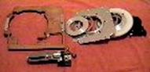

BBAstroDesigns, Inc.
Formed October 2000
by
BBAstroDesigns Inc. http://www.bbastrodesigns.com
aims to serve the amateur telescope making community,
specializing in products for computer operated telescopes.
Computer Operated Telescopes
Servo System Software, “ScopeII”
by
last revised
for use with motor controllers from
Gary Myers http://rxdesignonline.com
JRKerr http://jrkerr.com/
Copyright BBAstroDesigns, Inc. 2001-5
Sidereal Technology
http://www.siderealtechnology.com/
Dual Servo Telescope Controller
|
|
|

Copyright Sidereal Technology 2004
Table of Contents
TELESCOPE ENCODER WIRING AND SETUP:
Setting up the Drag and Track mode:
Operation of Drag and Track mode:
UNDERSTANDING AND USING THE X_BITS AND
Y_BITS:
BLOCK DIAGRAMS OF SOME POSSIBLE CONFIGURATIONS:
What is Scope II, the Java version?
More Information and Control with Scope II
Remote control across the network
Configuring for ASCOM/ external LX200
control
Interfacing with other programs
servo configuration parameters
German Equatorial Mount Meridian Flip
Command Files: The Command Processor
Setting Backlash Values by Jerry Pinter
Guiding and Periodic Error Correction
Improve Local Goto and Tracking
Optimizing Goto Pointing and Subsequent
Tracking
Mechanical Aspects of the Drive
Making Your Own Gears by Tom Krajci
ALT/AZ Conversion Lessons, by Chuck Shaw
UPDATE THE OTA (Optical Tube Assembly)
"SUB-SYSTEM":
UPDATE THE ROCKER BOX
"SUB-SYSTEM":
BUILD A NEW GROUND BOARD
"SUB-SYSTEM":
BUILD THE DRIVE ELECTRONICS
"SUB-SYSTEM":
UPGRADE THE DRIVE ELECTRONICS:
Design Details and Fabrication Notes:
1. OTA DESIGN AND FABRICATION:
Critical Path to find Balance Point:
Spin Alignment Technique…(Optical and
Mechanical Axis alignment)
2. ROCKERBOX DESIGN CONSIDERATIONS:
Azimuth and Altitude Trunions and Bearings
3. ELECTRICAL SYSTEM DESIGN CONSIDERATIONS:
Mounting location on Rockerbox
Cable harnesses/wire sizes/types
Power inputs (110vac vs 12vdc)
4. COMPUTER SUPPORT DESIGN CONSIDERATIONS
Laptop vs Microprocessor (Interactive vs
Black Box)
Image Plane Derotation System by Chuck Shaw
Software End User License Agreement (EULA)
You must exercise proper
safety precautions, including the wearing of glasses and thick rubber lug
shoes.
Shock hazard! Bodily injury
hazard! Any device using electricity is a shock and bodily injury hazard. You
must hook up the device properly and follow all safety precautions,
particularly when using electricity outdoors. If improperly hooked up or
improperly operated, electronic components can shock, overheat, melt, and
explode.
Peripheral equipment hazard!
Any device electrically attached to a computer can damage the computer if
hooked up improperly, or used improperly.
In particular:
- Never operate when the equipment or cabling is
wet or moist, even if there is only a possibility that some of the
equipment is wet or moist
- All grounding points must be connected to the
battery (-) terminal before turning on any equipment; the grounds must
never be disconnected while the unit is powered on (disconnecting any
ground will force the current to search out a return path to ground,
possibly by traveling through your body, causing shock and bodily injury)
- Power leads must be connected in proper order
with the black ground wire connected before the red positive voltage lead
- Power leads must not be reversed: instant
component failure is a certainty; components will overheat and can explode
with violent force
- Do not exceed 12 volts DC power input: shorting
more than 12 volts DC through your body can be lethal.
Connects to
Finally, a servo telescope
control that is affordable!
Directly controls two servo
motors with PID functions running at nearly 2000 times a second, with high
speed shaft encoders for position feedback on each motor.
Connects to two additional
high speed encoders for the telescopes altitude and azimuth (or right ascension
and declination). No need to add an
additional "box" to connect shaft encoders.
Open Collector RS232 Serial
port for connecting 2 or more controllers on the same RS232 bus. Other controller axis's can be used as field
de-rotators and/or focusers.
Connects to a handpad box for
slewing/panning/guiding.
Signals from the handpad work
immediately, no delay as with some other systems.
Can automatically track your
telescope in the Drag and Track mode, or the Slew and Track mode without having
a personal computer connected.
When running in the
computerless "Drag and Track" mode, you may connect a computer
running just about any planetarium program, and the servo controller will
emulate the
Can control a dual axis
tracking platform, with auto stop and rewind, and dual axis correction without
having a personal computer connected.
Servo Motors have a FASTEST
mode of operation, where if the motors can't quite keep up with where it is
supposed to be, but it is moving in the proper direction, it will not trip on
position error, instead, position error is held at the point of the position
error limit. This feature makes it
possible to run your motors near their limit of speed, and you can rest
assured, it will not trip on position error if your battery voltage falls a
bit, or the wind pushes against the scope.
Small size, 2.5" by
4.25" by 1".
Power Efficient.
Built in flash memory for
saving many different parameters.
Firmware in the controller is
field upgradable to later versions of the firmware, no need to send it back to
the factory.
This same controller will be
able to control 1 stepper motor using 256 micro-steps per step with a future
firmware upgrade.
Windows Configuration program
will be supplied for free about mid summer of 2004. In the meantime, you can configure it using
any terminal program.
Specifications:
Input Voltage: 11.5 -28 volts
D.C.
Input Current: 4 amps max
Maximum Motor Current: 2.4 amps each, total of 4 amps max.
RS232 Protocol:
1. Extended Pic Servo Emulation
2. Ascii command set
2 Each, Motor Encoder
Resolution: 32 bit (+/- 2 billion encoder
ticks)
2 Each, Scope Encoder Resolution: 32 bit (+/- 2 billion encoder ticks)
Sidereal Technology or
A piece of velcro with sticky
back is a good way.
The controller has a power
connector/terminal block. Please provide
a regulated supply or battery, 4 amp minimum 12 to 24 volt D.C. Supply. The 4 amp minimum supply capability is only
used during high speed moves. Normal tracking
requires only mA's.
Please observe polarity. The internal protection diode is not wired in
series with the power lead as is typical, because the extra .6 volts is crucial
to operation of the servo when running at 12 volts. It is wired in parallel, after the fuse. If you hook the power up backwards, you will
surely blow the fuse, and possibly damage other components. Please don't be the second person to test
this feature!!!!
The serial port is an 8
position modular jack. Please do not
confuse this connector with the motor connectors. It is adjacent to the power
connector/terminal block, and on the opposite end of the controller from the
motor connectors. Even if you don't
intend to use a laptop to control your telescope, you will need a serial cable
to configure the unit.
Pin 3 of a laptop or PC is
the transmit signal and pin 3 of the controller is the receive signal, so the
cable can be wired, pin 1 to pin 1, pin 2 to pin 2, etc. Only pins 2, 3, and 5 are used on the
controller. Some software uses hardware
handshaking. In addition to pins 2, 3,
and 5, if you also wire pins 1, 4, 6, 7, and 8, these will be properly jumpered
in the controller, for proper operation of the serial port (Pin 1,4,5 and Pin
7,8).
If you would like to connect
two or more Dual Servo Controllers on the same RS232 communication bus, simply
make up a cable as described above, but parallel another 8 position modular
jack in parallel with the existing jack.
Note:
LED1 normally is the status
of the Altitude / DEC motor. If on
steady, all is ok. If flashing about
once per second, it's in manual, because of a manual command or because of an
error.
LED2 is the same, except for
it represents the Azimuth / RA motor.
When battery voltage gets less than about 11.5, LED2 flashes fast.
In the dragNtrack or
slewNtrack mode, the LED's are different.
LED 1 flashes fast when an initialization is happening (IE top right or
left button pressed more than 3 or 4 seconds).
LED2 flashes every time there is a new tracking command, every 8 seconds
or on let up of slew/pan button.
Finally, the controller will
signal ready for an upload file when both LEDs flash in unison.
Do not confuse the +5vdc for the
encoders with the +12-30vdc input for the motors, Doing so will likely destroy the RS232
interface chip on the controller board, as well as the input data lines into
the microprocessor. The controller can
only be replaced as a unit: it is not repairable due to the microsoldering
required on the controller and very tight confines of associated parts.
See the drawing at the end of
this document for wiring schematic.
BBAstroDesigns suuplies motor
cabling for easy motor attachment, The motor cable consists of a flat 8 wire
connector terminated in a RJ45 connector.
This is plugged into a RJ45/DB9 converter. A DB9 solder cup is supplied for easy
soldering.
Connections are as follows,
including wiring for the popular Pittman servo motors:
|
DB9 pin number |
Connection |
Pittman motor wire |
|
1 |
Not used |
|
|
2 |
Motor - |
Motor black |
|
3 |
Motor - |
Motor black |
|
4 |
Motor + |
Motor red |
|
5 |
Motor + |
Motor red |
|
6 |
Encoder ground |
Encoder black |
|
7 |
Encoder +5vc |
Encoder red |
|
8 |
Encoder B |
Encoder yellow |
|
9 |
Encoder A |
Encoder blue |
The motor encoders are
connected using the same 8 position connector as is used for the motor. For best noise immunity, the motors should be
connected using flat cable, and terminated at the controller end with 8
position modular connector. CAT5 cable
will work, but the encoders can pick up electro-magnetic interference from the
motor leads if the cables are too long.
If you have a 24 volt or 36
volt motor, and only have 12 volts available, don't worry, it will still work
fine, but the top speed of the motor may not be as fast as you like.
Once the motors have been
wired, double check all wiring, including the power polarity. Double check that both motors are free to
spin at full RPM in either direction, because it may be that the motor wiring
moves the motor in the opposite direction that the encoder is expecting. If this happens, the motor will "run
away" at full speed, until the controller determines that the motor is
running the wrong way, and shuts the motor off.
There will be no ramping, it will instantaneously be at it's fastest RPM
for the supply voltage.
Now plug in just the altitude
motor, and then power up the unit. This
is where you will find if you are a lucky guy/gal or not. If the motor takes off in either direction at
full speed, don't buy any lottery tickets today. Your 50% chance worked against you. You have 3 options. 1. At the motor, swap the motor leads. 2. At the encoder, swap the A and B encoder
phases. 3. Set up XBits in the
controller to invert bit 0 or bit 1(reverses the motor encoder direction or
reverse motor polarity), then save this number in the flash ram (see section on
Using and Understanding the X and Y Bits).
If the motor didn't take off,
you should see that it is stopped, and that it's difficult (or impossible) to
turn by hand. If this is so, the motor
is now being controlled by the servo controller. The motor may be vibrating noisily. If this is so, the PID parameters need to be
"tuned". See section on
"Tuning Your Motors".
Repeat the above process for
the azimuth motor.
There are several ways to
configure the controller. If you intend
to only use
As of the first release of
the dual servo controller, the only configuration program is
Another option would be to
use any windows terminal program and configure it yourself, by typing in the
appropriate commands and values.
One more option would be to
wait for the free windows configuration program which will be available late
summer of 2004.
If you decide to use a
windows terminal program, you must follow the following procedures to configure
your controller.
Let's assume at this point
that you didn't buy any lottery tickets, because the altitude motor took off in
the wrong direction, and you don't want to re-wire it, you want to configure
the controller instead. Before powering
up the controller, connect your personal computer to the controller using a
serial cable. Now power up the controller
while the motors are disconnected.
You may now run the terminal
program of your choice. You may use the
built in windows program HyperTerminal.
When using HyperTerminal, be sure that handshaking is set to OFF, specify
your comm port (usually COM1) and specify 19200 baud rate, 8 data bits, 1 stop
bit and no parity. Select a terminal
emulation that sends a 13 when you hit the ENTER key.
Now we need to see if
everything is set correctly and the serial cable has been wired correctly. Type "X<E>", where <E>
means the enter key. The controller
should respond with it's X position.
This should be "0", "-1", or "1". If it doesn't respond at all, be sure your
CAPS LOCK IS ON. THE ASCII MODE ONLY
RECOGNIZES ALL CAPS!
If the controller responded
with a number, all is well with communication.
It's important to note that
commands starting with one 'X' (not two x's) are for the altitude/declination
motor, and all commands starting with 'Y' are for the azimuth/right ascension
motor. Some 'X' commands (such as
"XW") affect both motors.
The next step will be to see
what is in the X_Bits. Type
"XB<E>". The controller
should respond "B96". The factory
default is 96 (please see the section on X_BITS). Since the second bit will reverse the
direction of the motor, but not the encoder, we need to set that bit. Just add 2 to the number that is returned by
the XB<E> command, and type the number in after the XB command. For example, type
"XB98<E>". Now type
"XW<E>". This saves the
new X_Bit value to the flash
Repeat this procedure with
the Azimuth motor, using 'Y' instead of 'X' for the commands, but save your
parameters with the "XW<E>" command.
If your motor(s) are
violently moving back and forth, or are making rattling noises, chances are the
factory tuning defaults are not going to work on your motor. The controller controls the position of the
motor by comparing the current position with the current setpoint (or desired
position). If they don't agree, the
controller applies a PID function to make the motor return to the desired
position or setpoint. PID stands for
Proportional, Integral, Derivative.
There is much information on the internet if you are interested in the
inner workings of PID control. What is
described here is a simple method of making it work without getting too deep
into the theory.
Step 1. Turn the integral all the way to zero. Do this by issueing the command
"XI0<E> (the I is an EYE, not a ONE, and the 0 is a zero, not an
oh). Replace the "X" for
"Y" if tuning the azimuth motor.
Turn the Integral Limit down to zero too. Do this by typing the command "XL0<E>".
Step 2. Turn the proportional
down to zero. Do this by issueing the
command "XP0<E>" (again, the 0 is a zero).
Step 3. Adjust the
Derivative. To adjust the derivative, type the command
"XDnnn<E>" where nnn is the number. The range of the number can be anywhere from
0 to 32767. Typical proper values will
be in the 5000 range. The motor should
turn sluggishly but freely now, since only the derivative is working. Adjust the derivative higher and higher until
the motor starts humming or vibrating.
Adjust it back down until it doesn't vibrate, but "resists"
you when you move the motor by hand.
Record this ideal number, because you'll be using this number in
Step 4. Adjust the
Proportional Band. To adjust the
Proportional, type the command "XPnnn<E>". Now start adjusting the Proportional band up,
a few thousand at a time. As soon as it
is over a few hundred, the motor will "want" to return to it's
desired position. Keep adjusting this up
until the motor becomes unstable.
Typical values are about 20000.
Now back it down until the motor is stable. Record this ideal number,
because you'll be using this number in
Step 5. Adjust the Integral
Limit. To adjust the integral limit,
type the command "XLnnn<E>".
This number should be about 25000.
Step 6. Adjust the
Integral. To adjust the integral, start
increasing the number from about 1000, until the motor becomes unstable. Then back it off until the motor is
completely stable. Typical values are
about 5000. Record this ideal number, because you'll be using this number in
Step 7. Run the motor at
several speeds, and be sure it operates smoothly at all speeds. If it doesn't, start by working backwards
through the steps, first lower the integral, then lower the proportional. Play around until you're happy with the
response of the motor.
If the two motors are the
same type, the same numbers should work in both motors. Use the same commands listed above, except
substitute 'Y' for 'X'.
To test run the motors, you
can type commands and the motor should respond accordingly. The speed can be changed by typing the
command "XSnnn<E>" where nnn is the speed. To make the motor move for 1,000,000 encoder
ticks, simply type the command "X1000000<E>". The motor should ramp up to the speed you
selected, and ramp down and stop at exactly location 1,000,000. You can verify this by typing
"X<E>" and the controller will respond with the location of the
motor.
You may change the
destination or speed at any time, even during a move. Let's say you've typed in
"X20000000<E>", and the azimuth is headed for 20,000,000. At any time you may type
"XSnnn<E>" and the motor will ramp up or down to the new
speed. You can issue the command
"X-20000000<E>" and the motor will ramp down and head the other
direction.
You can change the speed and
destination using the same command. Try
this:
"X5000000S2000000<E>".
The controller will head for location 5,000,000 at speed 2,000,000.
The motor revolutions per
minute is calculated by the formula N=E*RPM*.55924053
The motor revolutions per
second is calculated by the formula N=E*RPS*33.554432
Where N is the number that is
entered into the "XS" parameter, and E is the number of effective
encoder ticks per revolution of the motor.
If you're not sure what the
effective resolution of your motor encoders are, there is an easy way to find
out. Type the command
"XM<E>". This places the
Altitude motor in manual, so it is no longer under PID control. The altitude motor should be free to turn
now. Turn the motor by hand until a mark
on the output shaft is pointed as accurately as possible at a mark on the motor
housing. Now type the command "XF0<E>" (The 0 is a zero). This forces the current location to
zero. You can verify this by typing the
command "X<E>". The
controller should respond with X0. Now
turn the output shaft of the motor 10 turns, and line up the mark on the shaft
again. Now type the command
"X<E>" again. The
controller should respond with Xnnnn.
Divide this number by 10, and you have the effective encoder ticks per
revolution of the motor.
To put the motor back in the
Auto mode, type the command "XA<E>". You can repeat this with the azimuth motor by
substituting 'X' with 'Y'.
To change the ramp or
acceleration value, type the command "XRnnn<E>" where nnn is
the acceleration. You can change the ramp or acceleration value during a move,
but this may confuse the controller, and it may ramp down, and overshoot, and
have to back up again. This is no
problem, but if you notice it, that's the reason why. Play around with this number until you like what
you see. Typical workable values are
about 1000.
After you like what you see,
type the command "XW<E>".
The controller will write these values to the flash
You can issue a motion
command to the X (altitude) and the Y (azimuth) sequentially, and they will
both be moving at the same time.
For a complete list of the
ASCII command set, see the section labeled "ASCII Command Set".
The controller is compatible
with the old style of BBAstroDesign's hand pad.
If you have a handpad of this type, be sure to put the 3 position jumper
near the hand pad connector toward the micro processor (towards center of the
board). If you are using a new handpad
type (there is no switch on a new type, there is only push buttons), you need
to be sure the jumper is toward the edge of the board.
The new handpad design allows
the movement of both axis's at once, and also allows upgrading to the wireless
handpad. The Slew/Pan switch on the old
handpad is replaced with a push button.
The controller turns the push-button into a "switch"
internally, which is used to change between slewing or panning. There are certain functions in the Drag and
Track and in the Platform mode that are not available if you don't have a new
handpad type.
One of the XBits bits (bit
number 6) needs to be set when using the new handpad. Add 64 to whatever number needs to be in the
XBits for proper operation.
To test the handpad, set up
X_Bits for the 6th bit set (bit 5), and if using a new handpad, with
the 7th bit set (bit 6).
Issue the command "XB<E>". The controller will respond with a
number. If you're not a computer whiz,
you may not know which bit is which, and what number is what. Don't worry, you can use the windows
calculator, and under the view menu, select the Scientific calculator. Now enter the number that was displayed by
the XB command. Now click on the Bin
option. The displayed number will be the
binary value. The 1st bit is
the one on the right. Now enter that
same binary number but be sure that the 6th bit is a one (1), and if
you are using a new handpad, be sure the 7th bit is a one (1). Make sure all other bits are the same as
before. Now click on the Dec
option. The displayed number will be the
decimal equivilent. Enter this displayed
number in the X_Bits command. Enter
"XBnn<E>".
Now you must set up your
telescope slew and pan rates. This is accomplished with the extend command
set. First, you need to know what
numbers to enter.
The number used in the slew
or pan speed command can be calculated by the formula N=E*RPM*.55924053
The number used in the slew
or pan speed command can also be
calculated by the formula N=E*RPS*33.554432
Where N is the number that is
entered into the parameter, and E is the number of effective encoder ticks per
revolution of the motor.
To set up the altitude slew
rate, figure what RPM or RPS you want, then enter the number into the parameter
using your terminal software by entering the command
"XXAnnnn<E>" where nnnn is the number you figured from the
formula above. You may enter a negative
number, and it will respond with opposite directions. To read what this number is, enter the
command "XXA<E>" without a number parameter. The controller will respond with the altitude
slew rate.
To set up the azimuth slew rate,
figure what RPM or RPS you want, then enter the number into the parameter using
your terminal software by entering the command "XXBnnnn<E>"
where nnnn is the number you figured from the formula above. You may enter a negative number, and it will
respond with opposite directions. To
read what this number is, enter the command "XXB<E>" without a
number parameter. The controller will
respond with the azimuth slew rate.
To set up the altitude pan
Rate, figure what RPM or RPS you want, then enter the number into the parameter
using your terminal software by entering the command
"XXCnnnn<E>" where nnnn is the number you figured from the
formula above. You may enter a negative
number, and it will respond with opposite directions. To read what this number is, enter the
command "XXC<E>" without a number parameter. The controller will respond with the altitude
pan rate.
To set up the azimuth pan
Rate, figure what RPM or RPS you want, then enter the number into the parameter
using your terminal software by entering the command
"XXDnnnn<E>" where nnnn is the number you figured from the
formula above. You may enter a negative
number, and it will respond with opposite directions. To read what this number is, enter the
command "XXD<E>" without a number parameter. The controller will respond with the azimuth
pan rate.
Now write the parameters
using the command "XW<E>".
Now if your motors are
working properly, you can slew or pan using the 4 direction switches. If you are using the old handpad, the switch
will change you from the slew or pan mode.
If you are using the new hand paddle, pressing the center button for
about ¼ of a second will switch between the slew and pan modes.
If you are using an old hand
paddle, you can't use all of the possible direction modes together, (including
altitude and azimuth together). If you
are using a new hand paddle, you may use all modes of directions, including
altitude and azimuth at the same time.
TELESCOPE
ENCODER WIRING AND SETUP:
Study the connection drawing
at the end of this document, and you will see that you need to make a Y cable
for the telescope encoders. A 6 position
modular jack is used on one end of a flat cable. The cable must be fabricated so it branches
off to both telescope encoders. The 5
volts and ground must appear at both encoders.
Once you have your encoders wired properly, connect your computer to the
controller with the serial cable again, run your terminal software again, and
you can test them out. Type the command
"XZ<E>". The controller
responds with a number that is the value of the altitude encoder. Turn the encoder one revolution. Type the command again. It should have changed the effective encoder
ticks per revolution of your encoder. If
you have a 1024 resolution encoder, there should be a 4096 (or somewhere close)
difference.
Now let's have some fun. Before your encoder is mounted on your
telescope, clamp a small arm on the shaft of the encoder. Turn the arm until it is lined up perfectly
with something on the body of the encoder.
Now let's force the encoder ticks to be zero by entering the command
"XZ0<E>" (again the 0 is a zero). You can verify the location by typing the
command "XZ<E>". It
should respond with 0. Now hold the
encoder and swing the arm around as fast as you can, and count the turns. Now swing back to the starting point, and
line up the arm to the orginal position, and type the command
"XZ<E>" again. The
difference between the starting number and this number should fall within the
pointing accuracy of your alignment.
This is a true high speed encoder interface.
You can substitute 'Y' for
'X' to test out the azimuth encoder.
The Drag and Track mode is
used if you would like to push your telescope by hand, or slew with the
handpad, but don't need super-accurate tracking, or goto capabilities, but
would like accurate tracking, the Drag and Track or Slew and Track mode may be
a nice feature to use. If you have a
telescope of aperature 16 inches or more, it may be more cost effective, and
there are many other advantages to use the dual servo controller and the Drag
and Track mode instead of a tracking platform.
To use the drag and track
mode, your Alt/Az telescope must have the following features:
1. A pair of servo motors to
drive the telescope in altitude and azimuth
2. Clutches on both altitude
and azimuth connected between the motors and the telescope, so you can
"drag" the telescope anywhere in the sky, without damaging the servo
motors.
3. A pair of encoders mounted
to your telescopes' altitude and azimuth axis's.
4. (Optional) A handpad.
5. A 12 -24 volt power
supply.
A computer is not required
for operation, only to configure your servo controller.
Setting up
the Drag and Track mode:
For the drag and track mode
to work properly, the controller must "know" several things.
1. The number of telescope encoder ticks for a complete
revolution of the telescope in both the altitude and the azimuth
2. The number of motor encoder ticks for a complete
revolution of the telescope in both the altitude and the azimuth
3. How fast the slew setting
should be
4. How fast the pan speed
should be
5. (Optional) Latitude of the
observing session
When you calculate the
encoder ticks, it's important to understand the resolution of your
encoders. Generally speaking, the
effective number of ticks is 4 times the resolution of the encoder. This document uses the effective encoder
ticks unless otherwise stated.
To enter the Drag and Track
mode, you must set the 4th bit in the X_Bits parameter. To read the X_Bits, from your terminal
software, type the command "XB<E>". To set up for Drag and Track mode, whatever
number is returned, type in "XBnn<E>", where nn is the number,
with an 8 added to it.
To set up the number of
altitude telescope encoder ticks, from
terminal software, enter the command "XXTnnn<E>" where
<E> is the Enter Key, and nnn is a decimal number. As an example, if you have an 8192 effective
resolution encoder, and it is hooked up directly to the telescope altitude
axis, enter the command "XXT8192<E>". To read what is programmed into the altitude
encoder ticks, enter the command "XXT<E>" with no number
parameter. The controller will respond
with the number of encoder ticks for a full revolution of the altitude axis.
To set up the number of
azimuth telescope encoder ticks,
from terminal software, enter the command "XXZnnn<E>" where
<E> is the Enter Key, and nnn is a decimal number. As an example, if you have an 8192 effective
resolution encoder, and it is hooked up directly to the telescope altitude
axis, enter the command "XXZ8192<E>" To read what is programmed
into the azimuth encoder ticks, enter the command "XXZ<E>" with
no number parameter. The controller will
respond with the number of encoder ticks for a full revolution of the azimuth
axis.
To set up the number of
altitude motor encoder ticks, from
terminal software, enter the command "XXUnnnn<E>" where nnnn is
the number of motor encoder ticks
for one full revolution of the altitude.
As an example, if you have an effective 2000 resolution encoder, a 5.9:1
reducer on the motor, and 1000:1 on the telescope gear ratio, this would be
11,800,000 encoder ticks. Enter the
command "XXU11800000<E>". To read what is programmed into the
altitude encoder ticks, enter the command "XXU<E>" with no
number parameter. The controller will
respond with the number of encoder ticks for a full revolution of the altitude
axis.
To set up the number of
azimuth motor encoder ticks, from
terminal software, enter the command "XXVnnnn<E>" where nnnn is
the number of motor encoder ticks
for one full revolution of the azimuth.
As an example, if you have a 2000 effective resolution encoder, a 5.9:1
reducer on the motor, and 1000:1 on the telescope gear ratio, this would be
11,800,000 encoder ticks. Enter the command
"XXV11800000<E>". To read what is programmed into the azimuth
encoder ticks, enter the command "XXV<E>" with no number
parameter. The controller will respond
with the number of encoder ticks for a full revolution of the azimuth axis.
It would be good, but not
absolutely necessary to enter the latitude of your observing site. This is done by entering the command
"XXLnnnn<E>" where nnnn is your latitude times 100. As an example, if your latitude is 45 degrees
north, enter "XXL4500<E>".
Next we need to set up the
slew speed for the altitude. This is
done using terminal software, and entering the command
"XXAnnnn<E>" where nnnn is the speed of the motor.
The number to program into
the controller is calculated by the formula N=E*RPM*.55924053
You can also calculate it
using RPS instead of RPM by the formula N=E*RPS*33.554432
Where N is the number that is
entered into the Slew or Pan parameters, and E is the number of effective
encoder ticks per revolution of the motor.
A velocity calculator is included
with the SiTech configuration program option of Scope II.
To set up the altitude slew
rate, figure what RPM or RPS you want, then enter the number into the parameter
using your terminal software by entering the command
"XXAnnnn<E>" where nnnn is the number you figured from the
formula above. To read what this number
is, enter the command "XXA<E>" without a number parameter. The controller will respond with the altitude
slew rate.
To set up the azimuth slew
rate, figure what RPM or RPS you want, then enter the number into the parameter
using your terminal software by entering the command
"XXBnnnn<E>" where nnnn is the number you figured from the
formula above. To read what this number
is, enter the command "XXB<E>" without a number parameter. The controller will respond with the azimuth
slew rate.
To set up the altitude pan
Rate, figure what RPM or RPS you want, then enter the number into the parameter
using your terminal software by entering the command
"XXCnnnn<E>" where nnnn is the number you figured from the
formula above. To read what this number
is, enter the command "XXC<E>" without a number parameter. The controller will respond with the altitude
pan rate.
To set up the azimuth pan
Rate, figure what RPM or RPS you want, then enter the number into the parameter
using your terminal software by entering the command
"XXDnnnn<E>" where nnnn is the number you figured from the
formula above. To read what this number
is, enter the command "XXD<E>" without a number parameter. The controller will respond with the azimuth
pan rate.
It's important to note that
the UP handpad key needs to move the telescope up in altitude, and the RIGHT
key move the telescope azimuth in a clockwise direction. It would be easy to put a negative number
into the slew and pan rates, and the controller would respond with the opposite
direction, but the trigonometry would still be wrong, and the controller
wouldn't track in the proper direction.
You must change the direction of the motor by changing the X_Bits, and/or
Y_Bits (See section on changing X_Bits), until proper direction is observed
with the push buttons.
It's also important to note
that when the telescope is moving clockwise, the azimuth encoder should be
increasing, and when the telescope is moving up, the altitude encoder should be
moving up. If these move backwards, then
the direction needs to be changed by changing the 3rd bit of X_Bits
(altitude) or Y_Bits (azimuth) (See section on changing X_Bits).
To save all this information
to the flash ROM, type "XW<E>".
Operation of
Drag and Track mode:
If you want the scope to
start tracking without initialization, point the telescope at the celestial
pole, and then turn the power on the controller. At this point, if you've already set up and
saved your latitude, the system will be initialized. It will immediately start tracking. No further initialization is required.
If your latitude isn't
initialized and saved to flash rom, you will have to initialze at the scope
zenith and the celestial pole. To initialize
the Altitude, move the scope (by hand or with the handpaddle) up to the scope
zenith. It could be convenient to have a
stop mounted on your scope, so it is easy to find this location. Press and hold the top right key for more than 4 seconds. At this point, the controller adjusts your
altitude so it reads 90 degrees.
To initialize the azimuth,
move the scope to the celestial pole.
Now press and hold the top left
key for more than 4 seconds. At this point, the controller initializes the
azimuth, and if you haven't initialized the altitude, it initializes the
altitude to your saved latitude, otherwise it initializes the latitude.
If you have initialized both
the altitude and azimuth, you may save the new latitude value by pressing and
holding both top keys for more than 10 seconds.
This saves the latitude to the flash ROM, so next time you can simply
initialize the scope on the celestial pole, and press the left hand key for
more than 4 seconds.
To perform photography, it
may be necessary to enter the guide mode.
This is done by holding down the top right key, then pressing the right
key. Now the speed changes by adding or
subtracting the guide rate from the current tracking rates. To revert back to the normal mode, hold down
the top right key, and press the right key again. This feature only works with the new handpad.
You may slew the telescope
with the handpad, or move the telescope by hand, and when done slewing or
moving, the telescope will immediately start tracking again, at the new drive
rates based on the telescopes altitude, azimuth and the latitude. To stop tracking, press the top right
key. To start tracking again, press it
again.
Review of Initialization options:
It may be confusing, because
there are several ways to initialize the telescope. The user has three choices.
Choice 1:
Step 1. Before turning on
power to the controller, position the telescope to the celestial pole. Turn on power.
The controller initializes
the azimuth, and initializes the altitude to the same value as the last saved
latitude. Using Choice 1 means you don't
even have to use the hand paddle, although you must have previously saved your
latitude.
Choice 2:
Step 1. Move the scope to the telescope
zenith and hold down the right hand bottom button for 4 seconds
The controller initializes the
altitude position at 90 degrees.
Step 2. Move scope to celestial pole, and
hold down the left hand bottom button for 4 seconds
The controller initializes the
azimuth, and initializes the latitude.
Choice 3:
Step 1. Move scope to celestial pole, and
hold down the left hand bottom button for 4 seconds
The controller initializes the
azimuth, and initializes the altitude at the same value as the last saved
latitude.
Before a user can use choice
1 or choice 3, the latitude needs to be set up.
If a user used choice 2, they
may want to save the latitude, so next time they don't have to initialize at
the zenith. This is done by holding down
both the left and the right hand bottom buttons for more than 10 seconds. This action will save the latitude into the
flash ROM, thereby making it possible that next time the telescope is set up
(assuming the base is reasonably level, and you are near the same latitude),
the user will not have to use choice 2, but only choice 1 or choice 3.
While the controller is in
the Drag and Track mode, the serial port can be connected to a laptop running
almost any planetarium software. Set
your software to connect to a "Tangent" encoder interface box, and
you will be able to surf the sky using the planetarium software! When setting up your planetarium software,
set up both encoder resolutions to 18000.
Also, do not use the option that your telescope is on a tracking
platform. Think of it like a telescope
without a platform where you have this little guy pushing it all the time,
exactly keeping up with the stars.
That's what your planetarium program will "think".
Also, set the baud rate of
your planetarium software to 19200, no parity, 8 data bits, and 1 stop
bit.
This mode is similar to the
drag and track mode, but is used if you don't have clutches on your servo
motors, and/or don't have shaft encoders on the altitude and azimuth of the
telescope. You must have a handpad.
To use the Slew and Track
mode, your Alt/Az telescope must have the following features:
1. A pair of servo motors to
drive the telescope in altitude and azimuth
2. A handpad.
3. A 12 -24 volt power
supply.
This mode uses the servo
motor encoders as the telescope position.
You must use the handpad to slew the telescope. You must set up the Y_Bits with the 4th bit
set. If you have any other Y_Bits set up
for proper operation of the motors, you must add the number 8 to whatever
number is the correct number for Y_Bits.
To read the Y_Bits, from your terminal software, type the command
"YB<E>". To set up for
Slew and Track mode, whatever number is returned, type in
"YBnn<E>", where nn is the number, with an 8 added to it. Normally this will be 8. You must also add 8 as described above to the
X_Bits (Drag and Track mode)
You must also set up the
number of telescope encoder ticks to be the same number as the number of motor
encoder ticks, in other words, the XXT command should use the same number as
the XXV command, and the XXZ command should use the same number as the XXU
command (see section on Setting Up the Drag and Track Mode).
For the SlewNTrack mode to
work, you need to set both the slewNtrack and the dragNtrack bits.
When you power up the controller,
it assumes you're at the saved latitude, and you're pointed at the celestial
pole. It will be tracking, although
since the pole doesn't move, you won't detect any movement until you actually
slew the telescope. You don't have to
use the keys on the handpad to initialize the slew and track mode or the drag
and track mode if you point at the CP before powering up and you've saved your
latitude. If you didn't point to the CP
before powering up, and if you've already saved your latitude, simply slew to
the CP, then hold the top
left button for about 4 seconds.
Setting up the platform mode:
To enter the platform mode,
bit number 4 of XBits must be set. Type
XB16<E>
If using the New handpaddle
design, the 7th bit must also be set. Type XB80<E>
When in the platform mode,
the handpaddle is automatically enabled, this sets bit number 5, so a read of
XBits after entering XB16 will return
B48. After XB96, it will return B112
From terminal, type
"XXEnnn<E>" for the rate the controller will automatically run
when in the platform mode.
From terminal, type
"XXFnnn<E>" for the rate adder/subtractor for fine tuning the
rate.
From terminal, type
"XXGnnn<E>" for the final position the servo motor will stop
tracking. If the motor turns the wrong
way, enter a negative number here.
For the hand pad to work
correctly, we need to move the X axis (the altitude) at it's slowest rate. Enter the command "XS1<E>".
You may want to adjust the
acceleration for a smooth return while rewinding.
Adjust this by typing
"YRNNN<E>". A typical
number would be about 1000. Lower
numbers accelerate slower, while higher numbers accelerate faster.
If you are using the altitude
motor, you can also set up it's velocity for smooth operation. Substitute 'X' for the 'Y' in above command.
You can set up all of the
hand paddle rates too. See setting up
the hand paddle rates!!!!.
To save all this information
to the flash ROM, type "XW<E>".
Operation of tracking
platform mode:
Before powering up the
controller, be sure the platform is fully rewound. This will be it's home position.
Upon power up, or upon
rewind, the Right Ascension motor will turn at the configured speed, until it
reaches the configured goal.
To rewind, press both top
switches. This is possible at anytime. The servo motor will return to the same
location it was when power was turned on; at it's programmed slew speed rate.
To Cancel rewind, press any
direction key.
To stop tracking at any time,
press the top right button.
To start tracking again,
press the top right button again.
Only the new handpad will
allow fine tuning the tracking speed.
To raise the tracking speed,
press the top left key, and while holding it down (think of it as an ALT key)
press the up direction.
To lower the tracking speed,
press the top left key, and while holding it down (think of it as an ALT key)
press the down direction.
To perform photography, it
may be necessary to enter the guide mode.
This is done by holding down the top right key, then pressing the right
key. Now the speed changes by adding or
subtracting the guide rate from the current rates. To revert back to the normal mode, hold down
the top right key, and press the right key again. This feature only works with the new handpad.
Challenging Idea: If you have or have access to, a very large
aperture telescope, 28 inches or larger, you may be able to see the crab pulsar
blink. Here's how. Obtain a servo motor with encoder that is
able to run at least 1,800 RPM, you could connect this motor to the servo
controller, and put an interrupter on the shaft (a circle with a pie shape cut
out of it), balance it, and hold this interrupter between the secondary mirror
and the eyepiece, while running at somewhat less than 1800 RPM. You may be able to see the pulsar wink in and
out! To test this out, you may use one
of the LED's. It winks at the same
frequency of the crab pulsar while in the platform mode! You can configure the platform mode to
automatically run this motor at the proper speed.
UNDERSTANDING
AND USING THE X_BITS AND Y_BITS:
The controller has two bytes
that are used to change various options.
One byte is dedicated to the X axis (altitude), the other is dedicated
to the Y axis (azimuth). Some of the
bits in the X bits are common to both motors.
A byte is a group of 8
bits. The first bit, bit 0, has a
"weight" of 1. The second bit,
bit 1, has a "weight" of two.
The 3rd bit, bit 2, has a weight of 4, and so on until the
eighth bit, bit 7, has a "weight" of 128.
Bit 0: Weight of 1: Altitude
Motor Encoder Direction
Bit 1: Weight of 2: Altitude
Motor polarity
Bit 2: Weight of 4: Altitude
Scope Encoder Direction
Bit 3: Weight of 8: A
'1' here, puts the controller in the Drag and Track or Slew and Track Mode (X
Only)
Bit 3: Weight of 8: A
'1' here, puts the controller in the Slew and Track Mode (Y Only)
Bit 4: Weight of 16: A
'1' here, puts the controller in the Platform mode (X Only).
Bit 5: Weight of 32: A
'1' here, enables the handpad to control the motors. You must also set up the Slew and Pan rates
(X Only).
Bit 6: Weight of 64 A
'1' here, tells the controller you're using a "new" handpad, one with
only push buttons, no switch (X Only).
Bit 7: Weight of 128: A '1' here, tells the controller it's in the
"guide" mode (X Only). In the
guide mode, when a direction button is pushed, the guide value is added or
subtracted from the current speed. You
must also set up the Guide rates.
To figure out what number to
program into the X or Y bits, figure out the modes you want, then add up all
the "weights" of the bits that are a '1', and that is the number you
use.
As an example, lets say you
want to use the drag and track mode, you're using a new handpad, you're
altitude motor needs to be reversed and the altitude telescope encoder needs to
be reversed.
Bit 1 = 2, reverse the motor
polarity
Bit 2 = 4, reverse the scope
encoder
Bit 3 = 8, Drag and Track
mode
Bit 5 = 32, Enable the
handpad
Bit 6 = 64, Using a new
handpad.
This adds up to 110. Issue the command
"XB110<E>". Now read
back the value, "XB<E>", the controller responds with
"B110". Now save this to flash
by issueing the command "XW<E>".
Substitute 'Y' for 'X' for
the azimuth motor.
Here is a description of the
bits:
Bit 0: If this bit is a '0', the motor encoder is
incremented normally. If this bit is a
'1', then it is reversed.
Bit 1: If this bit is a '0', the motor moves one
direction for a given number. If it is a
1, it moves the opposite direction.
This being said about bit 0
and bit 1, it is important to understand the implications of changing these
bits. Lets say that the controller has
just been powered up. In this state,
before you've pressed a handpad button, or given the motor a command to move,
the controller is trying very hard to keep the motor at position zero. If the position moves to 1, 2, or 3, the
controller responds by putting an output to the motor to move it the opposite
direction, and it will move back, 3, 2, 1, 0.
If the motor starts moving in the other direction, -1, -2, -3, the
controller responds by putting an output to the motor to move it back to zero,
the opposite polarity as in the first example.
Now try to think what would happen if the position moved to 1, 2, or 3,
but the controller responded by moving the motor to even higher numbers. This would create positive feedback, and the
motor will "run away" out of control.
More Error would create more wrong voltage, which would create more
error, etc, until maximum output voltage is reached.
Bit 0 and bit 1 of X_Bits and
Y_Bits give you control over which direction the motor turns, and which way the
encoder counts.
Bit 0 and bit 1 rules:
1. If the motor runs away, you can invert either one
of the bits, bit zero or bit 1. The
motor will now run properly.
2. If the motor runs properly, but in the wrong
direction, you must invert both bits.
Bit 2: If this bit is a '0', the telescope encoder is incremented
normally. If this bit is a '1', then it
is reversed.
List of ASCII commands (all
get terminated with an <E> (13)
). Be sure to use upper case.
For the Y servo, use 'Y'
instead of 'X' The # symbol means there
is a number required.
The X servo is the Altitude
or Declination. The Y servo is the
Azimuth or Right Ascension.
X# Move Servo (-2147483648 to +2147483647) You can tag a speed command at the end. Example X-2345S1000000<E>
X Returns the X position of the servo
XF# Forces the X position to be equal to the
number (-2147483648 to +2147483647) (This stops the controller if moving)
XS# Velocity of X Servo (0-2147483647)
XR# Ramping speed or Acceleration of X servo
(0-2147483647)
XP# Proportional Band of X servo (0-32767)
XI# X Integral (0-32767)
XD# X Derivative (0-32767)
XE# Maximum position error limit before servo
turns off (0-32767)
XE Returns the position error of the servo
XEL# sets maximum position
error limit
XO# X Output limit (0-255)
XO Returns the PWM output of the servo (0-255)
XC# X Current Limit (0-240 = 0-2.40 amps)
XC Returns the X motor current * 100 (240 MAX)
XM# X to manual mode, the number is the PWM
value, 0-255.
XA X to Auto mode.
XN X Normal Stop (ramps down, then stops. Automatically clears when new position is
given)
XNT stops all motors, then
resumes tracking when velocity drops below 524,287.
XG X Emergency stop (stops immediately, may damage equipment if
large inertial load on it)
XL# Set Integral Limit (0-32767)
XL Returns Integral Limit
XB Returns servo bits like specific errors,
modes, etc.
XB# Number sets the servo bits like direction,
etc. (0-255)
XZ# Forces the scope encoder position to be equal
to the number (-2147483648 to +2147483647)
XZ Returns the scope shaft encoder position
The rest of the commands don't have a 'Y'
command, only X.
They affect both servo's
XK Returns the keypad info in Decimal.
XH Returns the temperature of the cpu chip (in
degrees F)
XV Returns the firmware version * 10.
XJ Returns the motor power supply voltage * 10
(please divide returned number by 10)
XQ Resets the servo system (both)
XU Programs factory defaults into the flash
rom.
XW Writes the configuration of both the x and y
parameters to flash rom.
XT Reads the configuration from the Flash Rom.
UFN upgrades flash now
All of the following XX
extended commands have a corresponding read command as an example, if you type
"XXL<E>" it responds with the latitude.
XXL# Store the latitude to
the controller (4500 = 45 degrees north, -4500 = 45 degrees south)
XXZ# Store the azimuth
encoder ticks per full circle.
XXT# Store the altitude
encoder ticks per full circle.
XXU# Store the number of
encoder ticks for the Altitude Motor Encoder to the controller
XXV# Store the number of
encoder ticks for the Azimuth Motor Encoder to the controller
XXA# Stores the Altitude Slew
Rate to the controller
XXB# Stores the Azimuth Slew
Rate to the controller
XXC# Stores the Altitude Pan
Rate to the controller
XXD# Stores the Azimuth Pan
Rate to the controller
XXE# Stores the Platform
tracking rate to the controller
XXF# Stores the Platform
up/down adjuster to the controller
XXG# Stores the Platform Goal
to the controller
XXH# Stores the Altitude
Guide Rate to the controller
XXI# Stores the Azimuth Guide
Rate to the controller
AD# Program the Address of module. This can be 1,3 or 5 (No X or Y command)
(Be sure to only have one module
listening!!!)
0AAh Puts the servo into the
PicServo Emulate mode (no CR required)
Proportional, Integral,
Derivative, Output limit, Current Limit, Maximum ServoError,
Ramp speed, Velocity,
Integral Limit, Servo Bits and Address are stored from ram to the Flash
Rom when the XW command is
received.
All of the extended commands
(XXx) are saved too.
The flash ram values are
loaded from the flash Rom to Ram on reset.
Both the X and Y parameters
are stored to the flash rom.
Use X and Y for module
address 1.
If the module address is 3,
use 'T' and 'U', for address 5, it's 'V' and 'W'.
Description of the bits for
the X_BITS and Y_BITS:
0 if 1, the motor encoder is incremented the
other direction
1 if 1, the motor polarity is reversed
2 if 1, the azimuth (or altitude) encoder is
reversed
3 if 1, (x only) we're in the computerless
drag and track mode
3 if 1, (y only) we're in the computerless
slew and track mode (no clutches, must
use handpad to slew)
(must be in drag and track too)
4 if 1, (x only) we're in the tracking
platform mode
5 if 1, (x only) we enable the hand paddle
6 if 1, (x only) hand paddle is compatible
with New Hand Paddle (allows slewing in two directions, and guiding)
7 if 1, (x only) we're in the guide mode. The
pan rate is added or subtracted from the current tracking rate.
Here's the definition of the
X and Y bits.
* N_BITS 00000000b*
||||||||
|||||||Inverts the servo encoder
||||||Inverts the motor direction
|||||Inverts the scope encoder
||||Drag and Track mode(X only) Slew
and Track mode (Y only)
|||Tracking Platform Mode (X only)
||Enable the Hand Paddle for
slewing/panning (X only)
|New Hand Paddle Type (allows slew in
both alt and az at once (X only)
Guide Mode (X only)
BLOCK DIAGRAMS OF SOME POSSIBLE CONFIGURATIONS:
What is
Scope II, the Java version?
Scope II is a telescope
control application written in Java.
Scope II builds on the success and popularity of scope.exe, a DOS based
stepper motor control application.
Scope II can run on many
operating systems, including Windows, Linux, and Mac. While perhaps 85% of users run Windows, a
significant and not to be overlooked number run Linux and Mac. Java enables the same code to be run on many
platforms, a great plus. The
disadvantage is that Windows users will need to install Java.
Scope II works in conjunction
with Sidereal Technology servo motor controllers, and with controllers from
JRKerr and RXDesignOnline. Scope II also
supports a number of external encoder boxes.
Communications is via serial or USB to serial converter. Scope II can control up to 4 motors.
Scope II works with many
encoder controllers.
Scope II is a precision goto,
tracking, guiding, command sequencer, analysis, and logging application.
Scope II comes with an
extensive object library covering over 55,000 quality objects; many objects
with positions corrected by fellow amateur astronomers.
Scope II comes with 23
defined mounting types and 8 specific mounting characteristics.
Scope II includes limit
motion windows which can be defined in both local site horizon and elevation
values and in telescope coordinates.
Error correcting includes:
ü
backlash
ü
refraction
ü
unlimited number
of simultaneous periodic error corrections, which can be based on any desired
periods or gear ratios: includes auto-synchronization capability with suitable
hardware
ü
drift corrections
in equatorial and altazimuth axes
ü
guiding
corrections, including rotation of guide axes over time
ü
the 3 mount axis
errors
ü
axis to axis
corrections, including altitude vs altitude, azimuth vs azimuth, and altitude
vs azimuth
ü
pointing model
corrections using weighted corrective values
ü
coordinate
precession
ü
coordinate
nutation
ü
coordinate annual
aberration.
Scope II contains a command
sequencer that accepts commands from:
ü
the user
interface
ü
scroll files
ü
a local file
where commands can be saved to
ü
LX200 styled
commands from either serial (USB), UDP, or TCP sources
ü
Scope II specific
commands from either serial (USB), UDP, or TCP sources
ü
commands from
file interaction with Project Pluto Guide
ü
ASCOM compatible via
the LX200 generic driver.
Scope II is network aware and
can be run across the LAN. Scope II is
very much a middleware server application, accepting commands across the LAN,
transmitting them to the controller via any one of the multiple channel
options, analyzing the controller status, and returning the results across the
LAN.
Scope II can write real-time
status web pages.
Scope II can act as its own
simulator.
Scope II can relay
communications from one type of channel to another, ie, serial to TCP.
Scope II includes extensive
analysis and logging.
There are nine styles of
tracking, the default being proportional velocity tracking. Some involve
trajectory matching formulae that I developed. See the test option 'track' for
a complete listing.
Scope II includes 80 test
functions to verify accuracy and fitness.
Scope II requirements:
1. Java runtime 1.4
installed; Windows: 2000 or XP (though Sun does not support Java on Win9x
because of operating system resource issues, ScopeII does runs satisfactorily
on my old P166 laptop with 80 meg memory running Win95); Linux/Mac: OS capable
of handling Java 1.4. For more see http://java.sun.com/
.
2. RXTX communications
package. RXTX is included with the Scope
II distribution files. Originated by Trent Jarvi, RXTX is a versatile serial
communications package that runs on a variety of platforms, including XP, Windows 2000, NT*, Windows 9*, WinCE,
Solaris 2.x x86 and sparc, Linux, FreeBSD 3.x 4.x, Mac OS X, HP-UX 10.x, SCO
OpenServer 5.x, UnixWare, Digital/UNIX.
Since Scope II requires RXTX, the ultimate limit is the number of
platforms that RXTX will run on. For
more see http://rxtx.org/
.
1. Install Java 1.4
runtime. If not available on the CD,
then download JRE (Java Runtime Environment) from http://java.sun.com/j2se/1.4.2/download.html
. You only need install J2SE v 1.4.2_04 JRE, the J2SE Java Runtime Environment. Note the directory where Java is installed.
2. Copy the files as found on
the CD to a directory of your choosing.
3. Verify that the Java
install has added the java\bin location to the path. For XP, check My Computer | Properties |
Advanced | Environmental Variables | User variables | path. If not present, the exact directory path to
Java can be added here, ie, c:\j2sdk1.4.2_02\bin . If the path is not present and you don’t wish
to add it here, then edit scope.bat to include the exact path, ie, c:\Program
Files\j2sdk1.4.2_02\bin\java ...
4. Make a shortcut on your
desktop that points to scope.bat. Do
this by right-clicking on scope.bat, and selecting 'send to desktop (create
shortcut)'. Checking the properties of
the newly created shortcut, the shortcut's target will point to the location of
the scope.bat file: in my case, 'C:\mel\cot\SERVO\JAVA\scope.bat', and 'start
in' will reflect the same location: in my case, 'C:\mel\cot\SERVO\JAVA'.
5. Double click on the
shortcut and verify that scope fires up successfully by presenting you with a
user interface. You can also open a
command window (click on Start|Run...|type in 'cmd' and hit return), go to the
directory where scope.bat is located, then type in scope and hit return.
Congratulations: you've
successfully installed Java and Scope II !
This section contributed by
The MacDob project page is at
http://home.comcast.net/~d.sopchak/macdobs/MacDob.html
.
Scope II, as a pure Java
application, is perfectly capable of being run on a Macintosh computer running
OS X. However, Scope II sometimes relies on being launched from a command line
using some special arguments in order to access some of its features. It also
uses an open-source library called RXTXcomm to access the serial port. Because
of this, one must be prepared to handle Scope II in slightly different ways
than a typical Macintosh application, and in slightly different ways than Mel's
instructions specify for other platforms. Note: These instructions are for a
Mac running OS X 10.3.x
(Panther) and Java 1.4.2, but
should also work under OS X 10.2.x (Jaguar) running earlier versions of Java
(1.x)
Most Macs that run OS X do
not have serial ports. If this describes your setup, you must first purchase a
USB to serial adapter, such as those sold by Keyspan, and install the drivers
for the adapter. This is a fairly simple process. If you have one already, with
a suitable serial cable, great!
Next, install the RXTXcomm
Java serial libraries. You can download the OS X Installer package here. For
the curious, this package installs two libraries in the
/Library/Java/Extensions folder on your computer: RXTXcomm.jar and
librxtxSerial.jnilib.
Once that's done, you're
ready for:
Unzip the Scope II Mac.zip
file and place the "scope" Java application into a folder with all
the other support files. Double clicking the scope app's icon should launch
Scope II. If the necessary support files are not found by scope, it will
automatically create essential support files in the folder it resides.
Scope II requires the full
path name of serial ports to be specified for it to operate properly. The
default serial port can be specified in the scope.cfg file, or accessed by one
of the popup menus in the Controller pane of Scope II. Mac OS X lists its
available serial ports, along with a lot of other stuff, in the /dev folder,
which can be accessed by launching the Terminal application, usually located in
the /Applications/Utilities folder. After it launches, type in the window:
cd /dev
hit the return key
and then
ls
and hit the return key
you will get a bunch of
strange names. Scroll up and down the window and look for one that looks like
the name of your serial port:
Typically, a Keyspan
USB-serial adapter will have a name such as tty.USA19813P1.1
There will also be names
starting with "cu.", such as cu.USA19813P1.1
DON'T use the names starting
with "cu." in the scope.cfg file or choose this option from the popup
menu. Scope II won't open up the serial port if you do. If you want to enter the name of your serial
port into the scope.cfg file, you must put in the whole path name, so it should
look something like /dev/tty.USA19813P1.1
Since USB is a dynamic, hub
based system, you will probably get a different name for your USB-serial
adapter if plug it into a different port between uses. This is normal, but it
might confuse you if you aren't aware of it!
More
Information and Control with Scope II
If you would like to see and
do more, "behind the scenes" information when running Scope II, you
can launch it from Apple's Terminal application. There are a couple of ways of
doing this:
1. Launching Terminal and
Scope II from the Finder:
Control-click on the scope
app's icon. This will bring up a contextual menu. Choose "Show Package
Contents". Go into Contents>MacOS. There you will find a dark grey icon
labeled "scope". Double-clicking on this will launch the Terminal app
and through it, Scope II. The Terminal will then show all the command-line
information being generated as Scope II executes.
2. Launch Terminal, then
launch Scope II from Terminal:
Launch the Terminal app, then
move to the folder that the scope app is in by typing, at the prompt, for
example:
Locate the folder where the
scope app is in the Finder, and drag and drop the "scope" icon onto
the Terminal window after first typing "cd " (without the quotes, but
with that space after the cd) in the terminal window. Then hit the return key.The
prompt should now change to reflect that you are in the scope.app folder:
[dave's
computer]:~/Desktop/scopeII/scope.app] dave%
dig down a little more by
typing
cd Contents/MacOS
and hit the return key again
again, the prompt will change
to reflect that you've changed folders:
[dave's
computer:scope.app/Contents/MacOS] dave%
Alternately, you can move to
the folder that the scope app is in the old fashioned way, by typing the path
name at the prompt:
[dave's computer:~] dave% cd
~/Desktop/scopeII/scope.app/Contents/MacOS
Once you're in the right
folder in the Terminal, type in
../scope
and Scope II should launch!
Having access to the command
line allows you to launch Scope II with various arguments, as mentioned in the
manual, so typing
../scope -h
would show the command line
options available
The look and feel setting in
scope.cfg should be set to ‘CrossPlatformLookAndFeelClassName’.
1. Plug the controller's
serial cable into a comm port on the PC, or into a USB to serial
converter. A basic USB converter will
work fine. At last check, these
converters can be had for $20 and up.
2. Note for Linux users: it may be necessary to add yourself to uucp
and lock groups. You may also have to
change permissions on the comm port, eg, /dev/ttyS0, or /dev/ttyS1.
3. Power up the controller.
4. Launch Scope II.
5. Select the 'Controller'
tab, then select 'SiTech' from the 'Motors' combo box drop down list in the
'Set Controller Types' panel. Click on
the 'reset' toggle button and check in the terminal window that a series of
'set...' commands occurred with 'OK' status returns.
6. Click on the 'file save
cfg' toggle button in the upper left of the main title panel display.
Congratulations: you've
successfully hooked up the controller to Scope II !
It may be necessary to
configure controller specific values.
Consult the controller manual’s configuration section. You can use a serial communication terminal
program such as Windows HyperTerminal to talk to the controller. A Java configuration program has been created
for your convenience. To run it, double
click on SiTech.bat, or enter SiTech at a DOS command line prompt in a DOS
window inside of Windows. To launch a DOS window, click Start | Run | enter
‘cmd’ | press return. It may be
necessary to edit the file in the same manner as scope.bat.
Start by selecting the proper
comm port, then clicking on the connect toggle button. The comm status should turn green. If it turns red, then there was a problem
opening the comm port. Specific comm
port settings are read from the Scope II configuration file, scope.cfg, in the
servo section.
Many values can be read or
written at a single stroke. These are
indicated by the blue toggles. Success
of the ‘get all blue’ command is indicated by the color of the adjacent label.
Relevant variables can be
saved directly to Scope II’s configuration file by clicking on the ‘save to
Scope II cfg’ toggle button in the upper left corner.
An overview of configuration:
1. Step through the numbered
panels in the two tabbed panes 'Controller' and 'Startup' to configure the
basic parameters: controller types, counts per revolution, direction of
movement, site location, mounting type, and starting coordinates.
2. For more involved
configuration such as error corrections and external control options like ASCOM
interfacing, edit the scope.cfg file while studying the file:\\\parms.html webpage.
3. Advanced configurations
like limit windows and certain error corrections require the creation and
editing of additional files. See the file:\\\filesUsed.html page and instructions later on.
Basic configuration is
divided into two sections: 'Controller' and 'Startup'.
Use the 'Controller' tabbed
pane to set the motor controller and servo controller types, the motor and
encoder counts per revolution, and the motor and encoder directions.
Scope II will work with servo
motor controllers from Sidereal Technology and from JRKerr (RXDesignOnline uses
JRKerr controllers). Communication is
RS232 serial at 19,200 bits per second.
For laptops with no serial ports, a simple USB to serial converter will
work fine. When you install the
converter, an additional comm port will be added to your machine. You do not have to configure the USB's comm
port settings as scope II uses its own parameters.
For remote operation, there
are several options. See the sections on
remote operation and external commands.
Scope II will work with most
encoder controllers. The Sidereal
Technology motor controller combines an external encoder controller, so a
separate purchase of an encoder box is not needed. These controllers use RS232
communications. As with the motor controller,
it is possible to communicate with the encoder controller over a LAN.
Motor and encoder counts
measure the complete rotation of the telescope's axis. This can be calculated from known gear
ratios. For instance, if the servo
motor's encoder is rated at 512 pulses per revolution, the servo motor uses a
gearhead of 5.9:1, and the main drive gear has 359 teeth and a single turn
worm, then the calculation is as follows: 512 pulses / motor revolution * 4
quadrature decoded counts / motor encoder pulse * 5.9 gearhead ratio * 359 main
gear ratio = 4337869 counts per telescope axis revolution. To determine the number of counts per
arcsecond, divide the counts per telescope axis revolution by 1,296,000, the
number of arcseconds in 360 degrees.
Here, 4337869 / 1296000 = 3.347 counts per arcsecond. Safe values range from 3 counts per arcsecond
upward. However, too many counts per
arcsecond limits the high speed slew rate.
Otherwise, counts per axis revolution will have to be determined from
rotating the telescope axis by using the motor, and noting the number of counts
moved by inspecting the motor's status window in Scope II's display. If the axis cannot be fully rotated, then use
a precision level and a precision 90 degree angle, moving the axis from level
to vertical, and noting the counts moved.
Multiply by 4 to arrive at the counts for a full 360 degree revolution
of the axis. Roller drives often slip,
so after carefully balancing the telescope to prevent preferential slippage in
one direction, move the telescope axis by motor control back and forth several
times, taking the average. Obtain the
counts per revolution accurate to at least four digits. This translates to a one arcminute error when
moving from horizon to horizon.
The final step under controller
setup is to set the direction of motion for both motors and encoders. Move the telescope axis upward or
clockwise. To determine clockwise
direction, imagine placing your body along the axis, with your head aimed at
the axis' pole. For equatorial mounts,
your head will be aimed at the celestial pole.
For altazimuth mounts, your head will be aimed at the zenith. Now imagine yourself in the middle of a
clock. Clockwise motion will be the same
direction as the clock's hands move.
Click on the file save cfg
after this last procedure is finished, to save your work.
Use the 'Startup' tabbed pane
to set site, mounting type, and starting coordinates.
Site is used for determining
refraction, as refraction is based on the object's elevation above the
horizon. Site can also be used for
telescope alignment. If an altazimuth
telescope is precisely leveled, and the 0 degree azimuth set to true north
(regardless of hemisphere), then an altazimuth alignment can be adopted for the
initialization. Goto and tracking will
be as accurate as the scope is level, site values are correct, and the
computer's time is accurate. Similarly,
for an equatorial telescope, if the site values and computer's time is
accurate, then a synchronization to a star is not required.
Two dozen telescope mounting
types are supported, each distinguished by the parameters: canMoveToPole,
canMoveThruPole, primaryAxisFullyRotates, meridianFlipPossible,
meridianFlipRequired, autoMeridianFlip, and autoMeridianFlipFuzzDeg. CanMoveToPole means that the telescope can
reach the pole of the primary (azimuth, or Right Ascension) axis. Certain mount types such as the equatorial
yoke cannot. Some mounting types such as
the equatorial fork can swing through the pole, denoted by canMoveThruPole. Some mounts do not allow the primary axis to
fully rotate, such as the equatorial horseshoe and equatorial splitring,
denoted by primaryAxisFullyRotates.
Finally, meridian flips are possible in some mounting types, and
required in still others. The meridian
flip can be made to occur automatically by setting the autoMeridianFlip. The distance that the telescope is allowed to
traverse past the meridian before flipping is configured by the
autoMeridianFlipFuzzDeg. Besides the
telescope mounting types already configured, a custom mounting type can be
defined by unique combinations of these parameters.
Supported mounting types:
mountTypeCustom: user
configured
mountTypeEquatorial: plain
old equatorial mount where primary axis that rotates 360 deg aimed at pole
mountTypeAltazimuth: plain
old altazimuth mount where primary axis that rotates 360 deg aimed at local
zenith
mountTypeAltAlt: altazimuth
mount where where primary axis that rotates 360 deg aimed at horizon
mountTypeHorseshoe: can swing
to pole but cannot swing past pole
mountTypeEquatorialFork: can
swing to and past pole into sub-polar region
mountTypeEquatorialYoke:
cannot swing near pole
mountTypeCrossAxisEnglish:
can track well past meridian when aimed toward celestial equator, but cannot
cross meridian while aimed at sub-polar region due to poleward support post
mountTypeSplitRing: can swing
through pole, cannot rotate primary axis full circle in RA
mountTypeGermanEquatorialMount:
requires meridian flip
mountTypeExtendedGerman: no
meridian flip, no pole support to impede crossing meridian while pointing
underneath pole
mountTypeOffAxisTorqueTube:
configured same as extended german
mountTypeWeightStressCompensated:
per famous Zeiss example: dec and ota pivot on top of RA axis, counterweights
held by bars that are placed outside ota and hang down past pivot
mountTypeInvertedFork: top of
RA axis is split into fork that moves in dec, ota held by outside inverted fork
that fits over the RA fork, this outside fork also holds the counterweights for
the ota
mountTypeSiderostat: means
stationary star, tube horizontal pointed at pole, flat is mounted equatorially
mountTypePolarSiderostat:
means stationary star, tube parallel to polar axis looking down into flat, flat
is mounted equatorially
mountTypeUranostat: tube
horizontal pointed at pole, flat is mounted altazimuthly
mountTypeHeliostat: same as
siderostat but looks at the Sun, only one axis of movement
mountTypePolarHeliostat: same
as heliostat but tube aimed up at polar axis
mountTypeCoelostat: developed
from siderostat; means stationary sky, siderostat mirror fixed parallel to
polar axis, tube moves in dec; plane mirror mounted facing the celestial
equator on axis pointing to celestial pole, when driven around axis the reflected
beam remains stationary and does not alter its orientation; sometimes a 2nd
mirror used to reflect the light into the telescope
mountTypeCoude: 2 mirrors,
the upper rotates in Dec, the lower rotates in RA
mountTypeSpringfield: 2
diagonals produce stationary eyepiece, needs meridian flip
The final stage in the
Startup tabbed pane is to set the starting coordinate. You should also synchronize the telescope
coordinates as calculated from motor positions and external encoders. If using an altazimuth mount, azimuth can be
any value, and altitude need only be accurate to 30 degrees. The initialization option to calculate
correct altitude will be used later to improve the altitude value.
Initializations
All tracking and goto
telescopes must align themselves with the celestial sphere. Telescope coordinates must be translated to
the celestial sphere's coordinates. Two
initialization points are needed to accomplish this. Each initialization consists of the star's
celestial coordinates, the telescope's coordinates when pointed at the star,
and the sidereal time of the initialization.
Since the celestial sphere appears to move across the sky at the
sidereal rate, the observation's time must be recorded. A single initialization establishes an
axis. The second initialization
establishes the second axis.
Initializations come in
several flavors.
If the scope is equatorially
aligned, and the local sidereal time known, then no subsequent initializations
are needed: the polar alignment provides one initialization and the local
sidereal time giving the right ascension at the meridian or hour angle offset
providing the second initialization.
Equatorial mounts are actually four axis mountings, with the altazimuth
mount typically of very limited extent and only used to polar align the scope's
primary axis.
For an altazimuth scope, if
the site's latitude and longitude are accurately known, the local sidereal time
accurately known, the scope is accurately leveled, the scope's azimuth with
respect to the equatorial pole known, and the scope's altitude reading is
accurate, the two initialiations can be calculated from standard spherical
trigometric equations.
Otherwise, two
initializations or observations must be made.
Curiously, starting sidereal time need not be accurately known, only the
difference in sidereal time between the two observations. Similarly, the scope's starting azimuth need
not be known, as again, the difference in azimuth between the two observations
counts. Finally, the scope;s starting
altitude need not be known accurately, as it is possible to deduce the correct
starting altitude after the two initializations have been made. This is done by comparing the angular
separation in celestial coordinates to the angular separation in telescope
coordinates. Only one particular value
of altitude will give the correct angular separation.
Consequently, there are
several methods to initialize the telescope depending on the mount's alignment
and what coordinates are known.
1. Previously initialized and
scope not moved since software shutdown and local sidereal time accurately
known: goto and tracking can resume as if the software was never shutdown.
2. Previously initialized but
scope moved after software shutdown or local sidereal time not known: set the
computer date/time as accurately as possible, center on a star, then perform a
reset to current equatorial coordinates.
This will result in resetting the telescope's coordinates.
3. Scope is equatorially
aligned: adopt an equatorial alignment at software startup, center a star and
perform a reset to current equatorial coordinates. This will result in resetting the telescope's
coordinates.
4. Scope is altazimuthly
aligned and leveled with respect to the ground, site latitude and longitude
accurately known, azimuth of zero is set to the north, and local sidereal time
is known: adopt altazimuth alignment at software startup.
5. The instant eyeball
initialization which is good enough for visual tracking: set altitude as
accurately as possible, set azimuth of zero to the north, adopt an altazimuth
alignment at software startup, center a star, then perform a reset to
equatorial coordinates.
6. Tracking initialization:
set altitude as accurately as possible, center a star or planet or even a
crater on the Moon, perform an initialization #1, follow the object with the
handpaddle for a couple of minutes, then perform an initialization #2. The object should 'freeze' in the eyepiece or
camera, though some slow drift will be noticed over time, and, goto to other sectors
of the sky will not be accurate.
7. Traditional two star
initialization: center a star, perform initialization #1, center a second star,
perform initialization #2.
Performing initializations.
There are several ways to set
up the initialization equatorial coordinates.
1. At program startup, go
into the Initialization tabbed pane and select NoAlignment. Two suggested alignment stars along with
instructions will be displayed. An
initialization's equatorial coordinates can be changed by clicking the 'change'
toggle button to the right of the initialization equatorial coordinates
display. Then handpad will be placed in
handpadModeAutoInit12. Use the handpad
to center the first star, then press either the left or right mode key. Use the handpad to center the second star,
then once again, press either the left or right mode key.
2. On the main at-a-glance
panel, click on the set any coordinate toggle button. Select init#1 or init#2 and proceed to choose
an object's coordinates from the object library, from an individual datafile,
or by manually entering the equatorial coordinates.
3. Go to the CmdFiles tabbed
pane, click on the select telescope command combobox, and choose
cmd_scope_init1 or cmd_scope_init2.
Manually edit the line, adding the desired coordinates.
For options #2 and #3, place
the handpad in handpadModeInit#1, use the handpad to center the star, then
press the left or right mode key. Repeat
for the second star, after placing the handapd in handpadModeInit#2.
4. Use a scroll file built
ahead of time to feed the initialization equatorial coordinates to Scope II.
Such a file might consist of:
prompt starting
initialization command file
init1 [RaHr] [RaMin] [RaSec]
[decDeg] [DecMin] [DecSec] <- edit and replace with desired equatorial
coordinates of star #1
init2 [RaHr] [RaMin] [RaSec]
[decDeg] [DecMin] [DecSec] <- edit and replace with desired equatorial
coordinates of star #2
prompt ending initialization
command file
now run by going into the
tabbed pane CmdFiles, clicking on select command file, and finding the file
that you've built. When the first star
is centered, press either the left or right mode keys on the handpad. Move on to the second star, and when it is
centered, repeat the handpad left or right mode key button press.
Check the initialization
status display in the lower right hand side of the program display to verify
that all went according to plan. For an
equatorial telescope, the latitude should read 90 degrees, and for an altazimuth
telescope, the latitude should agree closely with your site's latitude. The hour angle offset should be very small.
Select target coordinates by
either clicking on the at-a-glance panel's new toggle button next to the target
coordinates, or, select the set any coordinate toggle button and after the Get
Coordinate window appears, from the combo box's dropdown list, choose new
target. Now, select an object from the
library, or from a datafile, or by manually entering the equatorial coordinates. The scope will slew to the object and track
on it when the Ok toggle button is clicked.
Remote
control across the network
Remote control can be divided
into two categories: LAN, and WAN. LAN
communications, as can be found in a home observatory network, sit inside a
firewall and have fast reliable communication.
WAN communications go out over the internet, where response time is
variable.
Scope II can act as a piece
of middleware, receiving commands from across the LAN or WAN, and communicating
with the motor and encoder controllers via a serial or USB link. Scope II can also communicate with the
controllers over a LAN, the WAN being too variable to use for this segment.
Commands to and from Scope II
can take the following forms: shared file with ASCII commands, serial com/USB
ports, UDP, TCPclient, TCPserver, and TCP (tries client, then switches to
server if no server found).
Commands between Scope II and
the motor and encoder controllers need to be fast and reliable. Commands need to be received by the
controllers as soon as they are issued, and the controllers' statuses need to
be returned to Scope II as fast as possible.
The serial link to the
controllers can be wireless. See
products such as AirCable’s wireless serial link and DigiInternational’s
Wavespeed/S. These substitute a wireless
link for the serial cable. USB can be
sent wireless with such products as DigiInternational’s AnywhereUSB. An USB to RS232 serial converter is needed to
attach the controllers to the USB port.
Scope II can act as a relay,
taking commands from the LAN (UDP, TCP) and relaying them onto a serial
link. To run Scope II in relay mode, use
the relay.bat file which adds a '-relay' command line argument to scope.jar,
or, run test.bat and select the test item 'ioRelay'. Enter the configuration information for both
channels that you wish to connect together.
For instance, configure the remote copy of Scope II running on a machine
in your living room to talk to the motor controller on UDP port 1000, configure
the ioRelay copy of Scope II running on a machine in the observatory next to
the motor controller to connect UDP port 1000 to COM3, and plug in the
controller to COM3 of the ioRelay machine.
Now, the remote copy of Scope II can communicate to the motor controller
via UDP across the LAN.
Alternatively, use a serial
to network converter such as a Lantronix unit.
Attach the Lantronix unit to the motor controller. Configure Scope II for TCP communications
with the Lantronix unit, by setting scope.cfg's servoIOType, servoRemoteIPName,
and servoRemoteIPPort settings to match the Lantronix unit's values.
To conclude, for Scope II to
controller communications, best is a serial link, though if needed, commands
can be networked over the LAN and translated to serial commands by either Scope
II acting as a relay, or by a hardware device such as a Lantronix unit.
Commands between controlling
or scheduling programs and Scope II can be more relaxed. Security may be an issue across the WAN.
For an external control
approach with LX200 styled commands: run a planetarium or software
planning/scheduling program that supports LX200 commands either natively or
through the ASCOM drivers. Commercial
products such as Virtual Serial Port Kit connect applications through the
creation of virtual comm ports. For instance,
Com8 and Com9 might be created and tied together. Configure the controlling application to use
Com8 and ScopeII to use Com9. For a
freeware alternative, use HW_VirtualSerialPort software running on the remote
machine to relay generic LX200 driver serial commands to a TCP channel. Configure Scope II running on a machine local
to the motor controller to receive LX200 styled commands from the TCP channel
by setting the LX200IOType to TCPServer, LX200RemoteIPName, and
LX200RemoteIPPort parameters in scope.cfg.
When considering ASCOM hubs
and similar multi-application environments, treat Scope II as a telescope
driver, specifically as a Meade LX200 generic driver. See the instructions on how to configure
Scope II to communicate with LX200 outputted commands.
For both LAN and WAN, the
most straightforward approach is to use remote control software, such as XP's
Remote Desktop Connection, PcAnywhere, VNC variants, and so forth.
Configuring
for ASCOM/ external LX200 control
Use Meade generic LX200 driver
via a com port:
- Connect to a second PC/laptop running controlling
planetarium program via a serial null modem cable,
- As above, but use serial to TCP converter like a
Lantronix unit and configure Scope II's LX200 ioPort for TCP,
- If wishing to run Scope II on same PC/laptop as
controlling planetarium program, then use software that creates virtual
com ports, ie, the free HW Virtual port manager or similar such as VSP,
and VSPK: search web: 'virtual com port';
For HW Virtual port manager, configure as follows:
HW config:
- Set ip to local machine ip (eg 10.146.98.32, if
unknown, at command prompt, type 'ipconfig/all')
- Select a port (eg 1000)
- Select a new virtual com port name (eg com5)
- Select server port (same port number as above, eg
1000)
- Settings tab: NVT | Keep connection -> check
on
Scope II config in the
scope.cfg file:
- Turn on LX200 control (eg LX200Control true)
- lLcate the LX200 input protocol section and set
IOType to TCPServer (eg LX200IOType TCPServer)
- Set both IPPorts to the same port number as in
the HW config (eg LX200homeIPPort and LX200RemoteIPPort 1000)
example config:
[*** LX200 input protocol
section ***]
LX200Control true
LX200IOType TCPServer
LX200homeIPPort 1000
LX200remoteIPName 10.146.98.32
LX200RemoteIPPort 1000
Controlling software, ie,
planetarium program config:
- Select ASCOM generic Meade LX200 driver
- Configure com port to match HW config's com port
(eg com5)
Verify that all works:
- Fire up HW Virtual port manager and turn on
logging: you will see traffic as it occurs
- Fire up Scope II: you should see msg at startup:
TCP local server socket
connection set on port 1000
...waiting to receive TCP
packets...
3. fire up planetarium
control program and attempt to connect: you should obtain a successful
connection, and see traffic in HW
Virtual port manager log window;
see in Scope II terminal window:
client has closed TCP connection
closed TCP server listening on port 1000
TCP serverThread ending
TCP local server socket connection set on
port 1000
...waiting to receive TCP packets...;
and in Scope II LX200 status with auto
update turned on, the various LC200 commands flowing into Scope II;
and finally in the controlling planetarium
program, after turning on any necessary 'display telescope' or 'track telescope' options, see the scope's
position in real-time.
The user has control over the
appearance of the user interface.
Valid configuration file
UILookAndFeel values are:
(an empty value)
metouia (metouia look and
feel, GNU LGPL license, written by Taoufik Romdhane, http://mlf.sourceforge.net/index.php?home
)
systemLookAndFeel
crossPlatformLookAndFeel
com.sun.java.swing.plaf.motif.MotifLookAndFeel
com.sun.java.swing.plaf.windows.WindowsLookAndFeel
com.sun.java.swing.plaf.gtk.GTKLookAndFeel
javax.swing.plaf.metal.MetalLookAndFeel
javax.swing.plaf.basic.BasicLookAndFeel
(appears to be same as metal look and feel)
apple.laf.AquaLookAndFeel
(Mac only)
usePanelColors turns on/off
the panel colorization as defined by the subsequent lightPanel, mediumPanel,
and darkPanel color values (a row of 3 numbers from 0 to 255, red green blue)
stopToggle and goToggle are
designed for red and green appearance.
The user can change these values if desired.
radioButton and comboBox
colors can also be changed by the user.
External encoders are the
optional encoders placed directly on the telescope’s axes as an independent
external position reporting device. If
the telescope axis slips, either accidently (say, roller drive and the altitude
axis is severely unbalanced), or purposefully (hand pushing the scope using a
clutched drive), then some sort of external position sensor is needed. Otherwise, the user must issue a reset or
synchronize command after centering an object in order to orient Scope II
Scope II supports a variety
of external encoders. They include:
encoderNone (no external
encoders present)
encoder
encoderBSeg (Bob Segrest
interface box)
encoderSkyCommander (Sky
Commander box)
encoderTangentNoReset
(Tangent box without reset capability)
encoderTangentResetViaR
(Tangent box that resets with ‘R’ command)
encoderTangentResetViaZ
(Tangent box that resets with ‘Z’ command)
encoderSiTech (Sidereal
Technology controller with integrated encoder interface)
If in doubt as to encoder
type, consult the encoder interface box manufacturer. The box’s manual often states the reset
protocol. The user can also launch the
encoder terminal window from the Scope II: Controller tabbed pane: 1. Set
Controller Types panel. Enter a reset
command and watch for the encoder box’s return.
If successful, you will see something along the lines of +1234 +5678.
The user can choose how the
telescope behaves when a discrepancy arrises between the external encoders and
the motors position as reported by the motor controller.
Scope II will not take any
action until the discrepancy exceeds the user configured parameter:
encoderErrorThresholdDeg.
The user is advised to
characterize the true accuracy of their external encoder system, and
consequently not to lower the error detection threshold below this amount. A common way is to move the telescope in the
daytime between a high stop and a low stop.
Note the variation in the encoder readings, as shown in the Scope II
Startup tabbed pane: 3. Set Coordinates panel.
Assuming the drive or clutch is not slipping, the user can also monitor
the encoder resets during operation by inspecting the
scope.encoders.reset.log. This is a log
of encoder to scope and scope to encoder resets. Typically the user will wish to set the
threshold so as to at least guarantee centering of the object. If using a digital camera with a small CCD,
the threshold may be set very tight. If
purely visual use, then the threshold may be set relatively coarse, such as 0.1
deg. If using the Sidereal Technology
integrated encoder interface, and using strongly geared encoders, it’s possible
to set the threshold extremely tight, down into the arcseconds range.
If Scope II detects an
unacceptable error threshold, then the resulting behaviors will be controlled
by the following user configured parameters:
resetScopeToEncodersTrackOffResetTarget:
if encoder vs current position exceeds error threshold when tracking is off,
then reset the target coordinates. The
default is true, as most users, when tracking is off, will wish the scope to
set the target positioning to the current position as determined by the
external encoders. This ensures accurate
tracking rates when tracking is started or a slew is begun.
resetScopeToEncodersTrackingResetTarget:
if encoder vs current position exceeds error threshold when tracking, then
reset the target coordinates. The
default is false, as most users will wish Scope II to ensure that the scope continues
to be centered on the target position.
Typical uses include star parties, where guests may accidently bump the
telescope off-target, or windy conditions, where a strong wind gust might most
the scope around. However, if you wish
to push the telescope a great deal by hand, and you do not care to use the
handpad’s tracking on/off mode to cycle tracking off when hand moving the
scope, then you will want to set this value to true. This will cause a reset of the target
position to wherever the scope finds itself when the user has finished hand
positioned the telescope.
resetScopeToEncodersSlewingResetTarget:
if encoder vs current position exceeds error threshold when slewing to a target
position, then reset the target coordinates.
This is a reset during slewing: contrast this with the above parameter
which is a reset during tracking. The
default is false, since it is likely that the user will desire Scope II to
complete a slew to position, avoiding target coordinate resets, even if the
external encoders trigger a motor or axis position reset.
A slew is defined as any
commanded move that results in a distance to move of greater than one
arcminute. If the scope’s drives have a
tendency to slip, slewing to position will be problematic without this
behavior, as any slippage will result in a target reset to current position,
effectively ending the slew. If this
value is false, the slew completes to the external encoder position as Scope II
adopts this externally set position during every threshold-exceeded reset.
With a value of false, used
in combination with resetScopeToEncodersTrackingResetTarget = true, the user
can command slews to complete yet hand push the scope as desired after reaching
target.
Scope II reads custom LX200
commands, including ability to read any Scope II cmd_scope… command by
prepending the custom ‘XZ’.
Cartes du Ciel’s advanced
plugin supports these commands. The CDC
software is available from http://renato.bonosoft.it/scope/
XAM gets ASCOM mounting type,
format single digit of 0, 1, or 2
XgF gets focusing fast speed
in deg/sec, format 999
Xgf gets focusing slow speed
in arcsec/sec, format 999
Xgp gets focuser position,
format 9999
XsF sets focusing fast speed
in deg/sec, format 999
Xsf sets focusing slow speed
in arcsec/sec, format 999
XGG get guiding rate in
arcseconds per second, format 9999
XGR get field rotation in
degrees, format 999.99
XHa through XHt set
handpadMode
XHL simulate press of handpad
left mode key
XHR simulate press of handpad
right mode key
XI1 initialize #1 with
current altazimuth and input equatorial coordinates
XI2 initialize #2 with current
altazimuth and input equatorial coordinates
XI3 initialize #3 with
current altazimuth and input equatorial coordinates
XS set guiding rate in
arcseconds per second, format 9999
XN set object name
XP getPierSide, format single
digit 0 (east side facing west) or 1 (west side facing east)
XX unused in Scope II; used
in scope.exe for clearing the LX200 display area
XZ<cmd_scope...># used
to encapsulate a cmd_scope command
Here is the list of
recognized LX200 commands, including the custom commands:
|
Standard commands: ack alignAltaz alignLand alignPolar reticle distance focusOut focusIn focusQuit focusSetFast focusSetSlow getRa getDec getAlt getAz getSidT getLocalT24 getLocalT12 getSiteName getMinQualityFind getDate getClockStatus getLat getLongitude getTz getField timeQuartz LI setNGCLibrary setStarLibrary nudgeGuideNorth |
nudgeGuideSouth nudgeGuideEast nudgeGuideWest moveDirRateNorth moveDirRateSouth moveDirRateEast moveDirRateWest startSlew stopSlew stopMotionNorth stopMotionSouth stopMotionEast stopMotionWest setMotionRateGuide setMotionRateCenter setMotionRateFind setMotionRateSlew setRate1 (Rates 2-9 not
supported) setRa setDec setField setCurrentHigherLimit setSidT setLocalT setDate setGMTOffset setSiteNumber_S setLat setLongitude setBrightMagLimitFind setFaintMagLimitFind largeSizeLimitFind |
smallSizeLimitFind nextMinQualityFind setTypeStringForFind swCommand sync setSiteNumber_W toggleLongFormat getFirmwareIDString getFirmwareDate getProductName Custom commands: getASCOMmountType getFocusFastDegSec getFocusSlowArcsecSec getFocusPos setFocusFastDegSec setFocusSlowArcsecSec getGuideArcsecSec setGuideArcsecSec setHandpadMode handpadLeftKey handpadRightKey setInit1 setInit2 setInit3 sendFieldR setObjectName getPierSide clearDisplay stringCommand |
Interfacing
with other programs
Scope II acts as a generic
Meade LX200 telescope, so any program that is compliant with ASCOM, or,
includes a LX200 telescope driver, can interact with Scope II. To configure, see the section Configuring for ASCOM/ external LX200
control.
Scope II interfaces with
Guide, a planetarium program by Project Pluto (
Configure Guide by going to
Settings, then Scope Control. Select an unused comm port, and pick
'altaz'. This is a special driver option for Scope II and the DOS stepper
version scope.exe. You will see a new
drop down menu option appear, "Scope Pad". Select it.
Configure Scope II by editing the following lines in scope.cfg:
[*** external program
interface section ***]
ProjectPlutoGuidePath C:\GUIDE8\
ProjectPlutoGuideExec guide8.exe
To send coordinates from
Guide to Scope II, select 'slew scope' on the scope pad menu. To receive
coordinates into Guide from Scope II,
select 'slew guide'. All actions
in Scope II are automatic: nothing need be done by the user.
The interfacing files are
located typically in the controlling planetarium program subdirectory, pointed
to by scope.cfg’s ProjectPlutoGuidePath variable, ie, c:\guide8\
The file that is used to read
in coordinates from the controlling planetarium program is called slew.dat and
has two lines with the following format:
R
<Ra degrees>
D
<Dec degrees>
The file that is used to
write coordinates to the controlling planetarium program is called slew_out.dat
and has one line with the following format:
R
<Ra degrees> <Dec degrees>
Any controlling program can
thus add a little software to communicate with ScopeII in this manner.
Status Pages Across the WAN
Browsable status pages are
viewable across the LAN, and WAN if security permits. To turn on the display, set updateHTMLFreqSec
in scope.cfg to an appropriate update value, typically 1-5 seconds. Or, use cmd_scope html_update_freq 1. Browse to status.html and servoStatus.html in
the local directory that Scope II is running within.
The handpad is used
extensively for advanced operations that are best executed at the eyepiece or
in front of the imaging device’s control computer.
Several handpad designs are
supported. These are:
handpadDesignStandard: the
standard design as originated in scope.exe, with 4 direction buttons, a speed
switch, and 2 mode keys. The four
momentary-on buttons move the scope in altitude and azimuth. The center switch
selects between fast slewing and slow centering. The upper two momentary
switches select different actions based on the software's current handpad
status. 'Left' is the left mode key, and 'right' is the right mode key.
handpadDesignDirectionOnly:
handpad contains only 4 direction buttons, but the telescope can be commanded
to move in two axes at once, unlike the standard design.
handpadDesignSiTech: uses
handpads designed by Sidereal Technology, including wireless. Here, the middle switch, the speed setting,
is replaced with a push button.
Momentarily press the button to toggle the speed setting. Unlike the handpadDesignStandard design, the
telescope can be commanded to move in two axes at once. The handpad jumper setting on the Sidereal
Technology controller board needs to be set towards the outer edge. This is the jumper’s normal location.
The get keypad button on the
SiTech configuration screen reports the handpad’s state. The keypad return reports logical
values. To see the state of the raw
input ports, use the main ScopeII motor status windows. Look for limit1 and input displays.
SiTech keypad return values for handpad button
presses:
|
Button pressed |
Fast speed toggled |
Slow speed toggled |
Logical value |
|
None |
128 |
144 |
16 |
|
Down |
132 |
148 |
4 |
|
Up |
136 |
152 |
8 |
|
Counterclockwise |
130 |
146 |
2 |
|
Clockwise |
129 |
145 |
1 |
|
Left mode |
192 |
208 |
64 |
|
Right mode |
160 |
176 |
32 |
The handpad can be placed into a number of operational
modes. These are:
handpadModeOff: no special
mode.
handpadModeAutoInit12: works with Scope II’s auto-init method, where Scope II
selects the two best stars to initialize with, then gives instructions in the
Initialization tabbed pane. The scope is
maneuvered by the handpad’s 4 direction buttons, and when the first star is
centered, either left or right mode key is pressed, causing the
initialization. Repeat for star #2.
handpadModeAutoInit123: each
press of the left or right mode key initializing the next position. It is up to the user to position the scope
using the handpad’s direction buttons, and enter the initialization’s
equatorial coordinates via the Get Coordinates window or via a scroll file.
handpadModeInit1: a press of
the left or right mode key initializes position #1. It is up to the user to position the scope
using the handpad’s direction buttons, and enter the initialization’s
equatorial coordinates via the Get Coordinates window or via a scroll file.
handpadModeInit2: a press of
the left or right mode key initializes position #2. It is up to the user to position the scope
using the handpad’s direction buttons, and enter the initialization’s
equatorial coordinates via the Get Coordinates window or via a scroll file.
handpadModeInit3: a press of
the left or right mode key initializes position #3. It is up to the user to position the scope
using the handpad’s direction buttons, and enter the initialization’s
equatorial coordinates via the Get Coordinates window or via a scroll file.
handpadModePolarAlign: step
through the polar align sequence; for more on this, see the polar alignment
sequence instructions
handpadModeAnalyze: a press of the left or right mode key analyzes the current
object’s position. After performing a
goto to the object, center the object in the handpad, then analyze the results. The movement required to center the object
after the goto is recorded as a positioning error that can be used for mount
analysis and to generate error correcting files.
handpadModeGuide: press of
the left mode key places the scope into guiding mode. If the scope is already in guiding mode,
which can occur from an external command channel, then the press of the left
mode key begins the recording of guiding actions for later analysis and
conversion into PEC files. Press of the
right mode key ends the recording of guiding actions. A subsequent press of the right mode key ends
guiding mode. Drift values are
calculated and adopted. At the end of
the guiding mode, the scope is returned to the position at the start of
guiding.
handpadModeGuideStay: as
above, but at the cessation of guiding mode, the guide star is kept centered.
handpadModeGuideStayRotate:
as above, with the 4 direction buttons gradually rotated per the field rotation
angle.
handpadModeGuideStayDrag:
drift or drag values from the scope.cfg file are added to the current drift
when the left mode button is pressed, and subtracted from the current drift
values when the right mode switch is pressed; this is for knife edge
autoguiders that rely on the guide star being constantly dragged back across
the knife edge.
handpadModeGuideSiTech: press
of the left mode key places the application in guide mode and the Sidereal
Technology controller into its guide mode.
Here, guiding corrections are sensed through the controller’s handpad
input port, and applied directly by the controller within a couple of
milliseconds as +- velocity changes to the current tracking rate without the
application’s mediation. The eliminates
servo lag. The application passively
deduces the controller’s guiding corrections, while continuing to pass to the
controller all the available error correction such as periodic errors, mounting
alignment errors, and pointing model corrections. Press of the right mode key takes the
application out of guide mode and returns the Sidereal Technology controller to
normal operating mode.
handpadModeGrandTour: mode
keys are used to move forward or backwards through an already loaded grand tour
file: left key advances and right key slews back to previous object.
handpadModeScrollTour: with
an already loaded scroll tour file, left key moves onto next command (which can
be a command to turn on autoscrolling), right key returns to previous command.
handpadModeScrollTourAuto:
with an already loaded scroll tour file, left key turns on autoscrolling and
right key ends autoscrolling.
handpadModeRecordEquat: a
mode key press will write the current scope equatorial coordinates to the
scope.equat file: either left or right mode key can be used.
handpadModeRecordAltaz: a
mode key press will write the current scope altazimuth coordinates to the
scope.altaz file: either left or right mode key can be used.
handpadModeToggleTrack: left
mode key turns on tracking, right mode key turns off tracking.
handpadModeFRFocus: left mode
key press turns on field rotation/focus control via the 4 direction buttons, and
right mode key press ends the 4 direction button control of field rotation and
focus. The Up/down direction buttons
operate the field rotation motor while the clockwise/counterclockwise buttons
operate the focus motor.
handpadModeSpiralSearch: left
mode key begins spiral search, right mode key ends search.
(Copyright Sidereal
Technology)
If scope cannot find a
configuration file, it will generate a default configuration file. To generate
a default configuration file, start, then exit the program. You can also
generate a default configuration by running java scope in test mode, and
selecting test option 'cfg'.
Here are all the
configuration options
Configuration parameters
|
siteName |
geographic
location's name |
|
latitudeDeg |
geographic
location's latitude in decimal degrees |
|
longitudeDeg |
geographic
location's longitude in decimal degrees; positive values indicates west of |
|
mountType |
mounting
type, options are: |
|
canMoveToPole |
if
the telescope can point at the pole, then set this value to 'true', else
'false' |
|
canMoveThruPole |
if
the telescope can swing through the pole into the sub-polar region, then set
this value to 'true', else 'false' |
|
primaryAxisFullyRotates |
if
the mount's primary axis can rotate through a full circle, then set this
value to 'true', else 'false' |
|
meridianFlipPossible |
if
a meridian flip is possible, then set this value to 'true', else 'false' |
|
meridianFlipRequired |
if
a flip is required when the telescope crosses the meridian, then set this
value to 'true', else 'false' |
|
autoMeridianFlip |
automatically
flip the telescope if crossing the meridian; true/false |
|
autoMeridianFlipFuzzDeg |
distance
that scope can track past the meridian before engaging the meridian flip, in
decimal degrees |
|
eyepieceFocus |
an
eyepiece's name and focus position |
|
handpadPresent |
if
handpad is connected to the PIC servo control boards, then 'true' else
'false' |
|
handpadMode |
starting
handpad mode, options are: handpadModeGuideSiTech |
|
handpadDesign |
starting
handpad direction button meaning, options are: |
|
handpadFlipUpDown |
reverse
the up/down handpad buttons |
|
handpadFollowMeridianFlip |
flip
handpad's up/down buttons if meridian flipped since declination direction
inverted when meridian flipped |
|
SiTechRampDownDelaySec |
ramp
down delay after releasing a handpad direction button: prevents the scope
from back tracking |
|
spiralSearchRadiusDeg |
spiral
search pattern's radius, or, the distance between spiral sweeps |
|
spiralSearchSpeedDegSec |
speed
at which to traverse the spiral search pattern |
|
initState |
starting
initialization state, options are: |
|
initOne |
let
the program enter these values; initialization one coordinate values, ie,
'0.0 90.0 44.0 0.0 0.0' |
|
initTwo |
let
the program enter these values; initialization two coordinate values, ie,
'0.0 90.0 44.0 0.0 0.0' |
|
initThree |
let
the program enter these values; initialization three coordinate values, ie,
'0.0 90.0 44.0 0.0 0.0' |
|
z1Deg |
axis
misalignment error in decimal degrees |
|
z2Deg |
azimuth
offset error in decimal degrees |
|
z3Deg |
altitude
offset error in decimal degrees |
|
dataFileCoordYear |
coordinate
year for the data files |
|
precessionNutationAberration |
turn
on/off precession, nutation, and annual aberration corrections, particularly
when reading the data files |
|
refractAlign |
mount
alignment to use to calculate refraction, options are: |
|
backlashActive |
'true'
if backlash correction active, otherwise 'false' |
|
useAltAzEC |
'true'
if using altitude vs azimuth axis error correction, otherwise 'false' |
|
useAltAltEC |
'true'
if using altitude vs altitude axis error correction, otherwise 'false' |
|
useAzAzEC |
'true'
if using azimuth vs azimuth axis error correction, otherwise 'false' |
|
usePMC |
'true'
if using pointing model error correction, otherwise 'false' |
|
buildPEC |
how
to build PEC file, format: servoID description motorStepsPerPECArray PECSize
guidingCycles Rotation PECIxOffset |
|
guideDragRaArcsecPerMin |
Right
Ascension drag in arcseconds per minute of time so that guiding corrections
occur in one direction when handpadMode is handpadModeGuideStayDrag |
|
guideDragDecArcsecPerMin |
Declination
drag in arcseconds per minute of time so that guiding corrections occur in
one direction when handpadMode is handpadModeGuideStayDrag |
|
handpadUpdateDrift |
if
'true', then adopt drift values as calculated from guiding efforts, else
'false' |
|
driftRaDegPerHr |
drift
in Right Ascension in degrees per hour |
|
driftDecDegPerHr |
drift
in Declination in degrees per hour |
|
encoderType |
encoder
interface box type, options are: |
|
encoderIOType |
what
type of IO method to use for the encoders, options are: |
|
encoderSerialPortName |
serial
port to use for the encoders, ie, 'COM1' if Windows, '/dev/ttyS0' if Linux' |
|
encoderBaudRate |
serial
port baud rate for encoders |
|
encoderHomeIPPort |
if
using UDP method for the encoders, then the home port# to use |
|
encoderRemoteIPName |
if
using UDP or TCP method for the encoders, then the remote machine's IP
address |
|
encoderRemoteIPPort |
if
using UDP or TCP method for the encoders, then the remote machine's port# |
|
encoderFileLocation |
if
using files to transmit/receive, then location of the files |
|
encoderTrace |
record
all communications to trace file |
|
encoderAltDecCountsPerRev |
altitude
axis encoder counts per shaft revolution |
|
encoderAzRaCountsPerRev |
azimith
axis encoder counts per shaft revolution |
|
encoderAltDecDir |
direction
that altitude axis encoder counts increment, options are: |
|
encoderAzRaDir |
direction
that azimuth axis encoder counts increment, options are: |
|
encoderFieldRDir |
direction
that the field rotation axis encoder counts increment, options are: |
|
encoderFocusDir |
direction
that the focuser axis encoder counts increment, options are: |
|
encoderErrorThresholdDeg |
error
threshold of encoder vs current position before current position is reset to
encoder position, in decimal degrees |
|
resetScopeToEncodersTrackOffResetTarget |
if
encoder vs current position exceeds error threshold when tracking is off,
then reset the target coordinates |
|
resetScopeToEncodersTrackingResetTarget |
if
encoder vs current position exceeds error threshold when tracking, then reset
the target coordinates |
|
resetScopeToEncodersSlewingResetTarget |
if
encoder vs current position exceeds error threshold when slewing to a target
position, then reset the target coordinates |
|
encoderAltDecOffset |
set
by the program; difference between encoder and current altitude axis position |
|
encoderAzRaOffset |
set
by the program; difference between encoder and current azimuth axis position |
|
ProjectPlutoGuidePath |
directory
of Project Pluto's guide planetarium program and thus location of slewFile
and slewOutFile, ie 'c:\GUIDE8\' |
|
ProjectPlutoGuideExec |
name
of Project Pluto's guide executable program, ie Guide8.exe |
|
readWriteExternalSlewFiles |
if
'true', actively read/write the external slew files, else 'false' |
|
updateHTMLFreqSec |
html
pages (ie, coordinate display and status displays) update frequency in seconds;
if '0', then no update |
|
extIOType |
what
type of IO method to use for external program control, options are: |
|
extSerialPortName |
serial
port to use for external program control, ie, 'COM1' if Windows, '/dev/ttyS0'
if Linux' |
|
extBaudRate |
baud
rate for serial port for external program control |
|
extHomeIPPort |
if
using UDP method for external program control, then the home port# to use |
|
extRemoteIPName |
if
using UDP or TCP method for external program control, then the remote
machine's IP address |
|
extRemoteIPPort |
if
using UDP or TCP method for external program control, then the remote
machine's port# |
|
extFileLocation |
if
using files to transmit/receive for external program control, then location
of the files |
|
extTrace |
record
all communications to trace file |
|
extPortWaitTimeMilliSecs |
time
in milliseconds to wait for completion of data transmit on the external port |
|
LX200Control |
'true'
if software will receive LX200 styled commands, else 'false' |
|
LX200IOType |
what
type of IO method to use for LX200 styled commands, options are: |
|
LX200SerialPortName |
serial
port to use for LX200 styled commands, ie, 'COM1' if Windows, '/dev/ttyS0' if
Linux' |
|
LX200BaudRate |
serial
port baud rate for LX200 styled commands |
|
LX200homeIPPort |
if
using UDP method for LX200 styled commands, then the home port# to use |
|
LX200remoteIPName |
if
using UDP or TCP method for LX200 styled commands, then the remote machine's
IP address |
|
LX200RemoteIPPort |
if
using UDP or TCP method for LX200 styled commands, then the remote machine's
port# |
|
LX200FileLocation |
if
using files to transmit/receive LX200 styled commands, then location of the
files |
|
LX200Trace |
record
all communications to trace file |
|
LX200MotionTimeoutSec |
timeout
in seconds to stop LX200 styled commanded motion if no stop command received |
|
LX200_LongFormat |
'true'
if long format coordinate form is used with the LX200 styled commands,
otherwise 'false' |
|
LX200_ContinueTrack |
'true'
if tracking should continue after a LX200 Quit Motion or Stop Slew command is
received, otherwise 'false' |
|
controllerManufacturer |
controller
manufacturer, options are: |
|
servoIOType |
what
type of IO method to use to communicate with the servo motor controllers,
options are: |
|
servoSerialPortName |
serial
port to use to communicate with the servo motor controllers, ie, 'COM1' if
Windows, '/dev/ttyS0' if Linux' |
|
servoBaudRate |
serial
port baud rate to communicate with the servo motor controllers |
|
servoHomeIPPort |
if
using UDP method to communicate with the servo motor controllers, then the
home port# to use |
|
servoRemoteIPName |
if
using UDP or TCP method to communicate with the servo motor controllers, then
the remote machine's IP address |
|
servoRemoteIPPort |
if
using UDP or TCP method to communicate with the servo motor controllers, then
the remote machine's IP port# |
|
servoFileLocation |
if
using files to transmit/receive to communicate with the servo motor
controllers, then location of the files |
|
servoTrace |
record
all communications to trace file |
|
servoPortWaitTimeMilliSecs |
time
in milliseconds to wait for servo motor controller response before giving up |
|
moveToTargetTimeSec |
look
ahead time in seconds to calculate motor's next move command |
|
UILookAndFeel |
look
and feel of the user interface |
|
usePanelColors |
use
user-defined panel colors, otherwise use default colors |
|
lightPanel |
set
the red, green, blue colors of light colored panels |
|
mediumPanel |
set
the red, green, blue colors of medium colored panels |
|
darkPanel |
set
the red, green, blue colors of dark colored panels |
|
stopToggle |
set
the red, green, blue colors of stop toggle buttons |
|
goToggle |
set
the red, green, blue colors of go toggle buttons |
|
toggle |
set
the red, green, blue colors of toggle buttons |
|
radioButton |
set
the red, green, blue colors of radio buttons |
|
comboBox |
set
the red, green, blue colors of comboBoxes |
|
updateUImilliSec |
time
in milliseconds to update user interface displays |
|
datFileLocation |
directory
where the coordinate data files are located |
|
autoGenInitFile |
name
of the object datafile to use for automatic generation of initializations |
|
cmdFileLocation |
directory
where the command files are located |
|
SiTechFirmwareFileLocation |
directory
where the SiTech controller firmware upgrade files are located |
servo
configuration parameters
|
controllerType |
type
of PICServo controller, options are: |
|
controllerActive |
'true'
if the PICServo controller is powered on |
|
ampEnableActiveHigh |
'true'
if the amplifier is enabled when control line set to logical high, default is
'false' |
|
positionGainKp |
value
of the PID filter proportional component: position Gain Kp |
|
velGainKd |
value
of the PID filter differential component: velocity Gain Kd |
|
positionGainKi |
value
of the PID filter integral component: position Gain Ki |
|
integrationLimitIL |
value
of the PID filter integration limit IL |
|
outputLimitOL |
output
limit, max 255 |
|
currentLimitCL |
current
limit, max 255 |
|
positionErrorLimitEL |
allowable
Positional error before servo is disabled, max 16383 |
|
rateDivisorSR |
PICServo
PID servo loop timing rate divisor, a number higher than 1 causes the servo
loop to proportionally run slower |
|
ampDeadbandComp |
amplifier
deadband compensation at PWM of 0 |
|
track |
'true'
if tracking is turned on for this motor |
|
stepsPerRev |
motor
steps per telescope's axis rotation |
|
encoderCountsPerRev |
motor
encoder counts per motor shaft revolution |
|
reverseMotor |
'true'
if motor direction should be reversed, else 'false' |
|
accelDegSecSec |
motor
acceleration in degrees per second per second |
|
fastSpeedDegSec |
motor
highest speed in degrees per second |
|
slowSpeedArcsecSec |
motor
slow speed in degrees per second |
|
dampenFactor |
motor
tracking aggressiveness, too high and motor will overshoot, too low and motor
will not reach target |
|
homeDeg |
axis
home position in degrees |
|
sectorDeg |
if
axis employs a sector drive, size of sector in degrees, else leave at '0' |
|
softLimitOn |
software
checked limits to motion is active |
|
currentPositionDeg |
motor
current position in degrees |
|
backlashArcmin |
amount
of backlash in arcminutes |
|
guideArcsecSec |
guiding
rate in arcseconds per second of time |
|
guideDragArcsecPerMin |
drift
to drag a guide star so that an autoguider can update in one direction only |
|
driftArcsecPerMin |
drift
rate in arcseconds per minute of time |
|
PECActive |
'true'
if periodic error correction is turned on, else 'false' |
|
autoPECSyncDetect |
'true'
if automatic detection of the PEC synchronization point is used, else 'false' |
scope.cfg is the configuration file, read at startup, optional
save at shutdown
[SERVO_ID
name]+[description]+[direction]PEC.data,
ie, AltDecMotorMainBiDirPEC.data are the PEC files,read in per configuration
file, or read and saved during program execution
[SERVO_ID
name]+[description]+[direction]PECxx.pec,
ie, AltDecMotorMainBiDirPEC07.pec are the guide analysis files used to
buildPEC, used in averagePECAnalysisFiles(), and created in analyzeGuideArray()
[SERVO_ID
name]+[description]+[direction]PEC.guide,
ie, AltDecMotorMainBiDirPEC.guide are the record of guiding corrections vsPEC
indeces, saved in saveGuide(), loaded in loadGuide(): guiding corrections are
used to create guide analysis files which are usedto create PEC files; contrast
with *.accumguide, which is a record of guiding corrects vs time
[SERVO_ID
name].track.log, ie, altDec.track.log
are the tracking analyses files, one per active motor, saved in track.close()
[SERVO_ID
name].accumguide.log is log of
accumulated guiding values vs time
[io port name].log is log of all receive and transmit
traffic on that io port, the port name being the concatenation of pertinent
port descriptors, ie baud rate, port #, and so forth
scope.servocmd.log is log of servo command results
scope.encoders.reset.log is a log of encoder to scope and scope to encoder
resets
scope.polaralign.log is record of polar alignment procedure
[axisToAxisName].ec, ie, AltitudeToAzimuth.ec holds axis vs axis pointing
correction values
[limitMotionName].lm, ie, limit_motion_siteAltaz.lm holds numbers
outlining a polygon to limit the scope's motion
scope.equat is record of equatorial Positions
scope.altaz is record of altazimuth Positions
*.DAT are datafiles of objects
*.comet are datafiles of comets
*.cmd are command files
ioFileWrite.txt
and ioFileRead.txt are the hardcoded file names used for the file
method of input-output since last check, then contents are read and executed
(all commands will be executed before updated file will be read in)
scope.pmc contains pointing model correction values
scope.analysis
contains input equatorial
coordinates, actual altazimuth coordinates, sidereal time of altaz coordinate
calculation, optional errors in altazimuth coordinates calculated from input
equatorial coordinates converted to altaz coordinates minus the actual altaz
coordinates, and optional name
scope.inithist is history of all initializations for each session
slew.dat is a file containing an equatorial position to slew
to
SLEW_OUT.DAT is a file containing the current equatorial position
to slew an external program
startup.mar is the startup filed used by ProjectPluto's guide
that includes the position that guide should center on
scope.mar is the startup file for ProjectPluto guide created by
scope
guide.bat is the batch file used to copy the startup for for
ProjectPluto guide, then to launch ProjectPluto guide
setdate.bat is the batch file used to set the system date
settime.bat is the batch file used to set the system time
input.DAT is current sessions' recording of input coordinates
saved with datetime
input[savedDateTime].DAT is a copy of a session's input.DAT file
status.html is the status html page
servoStatus.html
is the servo controller status html
page
currEquatCoord.html
is the current equatorial coordinate
html page
cmdScope.html
is the cmd_scope commands and their
descriptions html page
parms.html is the configuration and servo parameters and their
descriptions html page
filesUsed.html is the files used html page
cmdLineArgs.html
is the command line html page
status.css is the cascading style sheet for the status files
currEquatCoord.css is the cascading style sheet for the
currEquatCoord.html file
Windows bat files for program manipulation (for Linux,
change backslashes to forward slashes, ie, ../j2sdk1.4.2_02/bin/java...):
scope.bat to run scope.jar c:\j2sdk1.4.2_02 in\java -cp
scope.jar;RXTXcomm.jar scope
test.bat to run scope.java in test mode c:\j2sdk1.4.2_02\bin\java -cp
scope.jar;RXTXcomm.jar scope -t
manifest.mf file contains the line: Main-Class: scope
*** scope help ***
command line options:
if -c ('c' for config file) then use following string
as configuration file name, ie, 'scope -c cfg.dat' will result in cfg.dat being
used
if -x ('x' for command) then use following string as
command filename, executing command file upon program startup, ie, 'scope -x
nan.cmd' will cause nan.cmd to be loaded and run
if -xh ('xh' for command help) then display command
help
if -sitech ('sitech' for Sidereal Technology) then run
the Sidereal Technology controller configuration and operation frame
if -sim ('sim' for simulator) then run as JRKerr servo
motor controller simulator
if -relay ('relay' for ioRelay) then run in relay
mode, relaying data from one IO type or communication channel to another
if -t ('t' for test) then run tests
if -h ('h' for help) or /h or /he or /help or /? or ?
then print out command line options
*** end of scope help ***
A very large number of data files are included. In aggregate, more than 55,000 objects are
listed. Many of the data files have been
generated and corrected by fellow amateurs.
The NGC corrected files are Copyright (c) 1988 by Sky
Publishing Corp. Reproduced with the
permission of the publisher.
Objects are retrieved from the data files via the Get
Coordinate panel.
The entire list of data files can be searched, or
particular data files can be scanned.
Additionally, the nearest 20 objects can be selected for display.
Datafile format is:
RaHr RaMin RaSec
DecDec DecMin DecSec Name
For example:
There is a special ‘comet’ format to load in drift
values:
RaHr RaMin RaSec DecDec DecMin DecSec RaDriftHr
RaDriftHr Name
German Equatorial
Scope II handles GEM mounts and their required
meridian flip. It does so by changing the altitude and right ascension in low
level functions. Right Ascension is rotated by 180 degrees. The altitude
is mirrored across the pole so that a declination of 80 is an altitude of 100
degrees .After a flip, the altitude will read in the range of +90 to +180 to
higher values (-90 to -180 and lower if in the southern hemisphere). The
Declination and Right Ascension will be calculated and displayed correctly. The
hand paddle buttons are not automatically swapped in case autoguiders are wired
in. However, the hand paddle buttons can be swapped after the GEM flip by
setting the scope.cfg’s handpadFollowMeridianFlip to ‘true’ in the handpad
section.
To do the
flip automatically:
Turn on the autoMeridianFlip in the tabbed pane Startup. When the object requires the telescope to
flip across the meridian, the meridian flip will occur automatically.
To do the
flip manually:
Click on the perform meridian flip in the Goto tabbed
pane.
Or, perform each step yourself:
- 1.Turn off tracking.
- 2.Select the GEM flip menu option.
- 3.Position the telescope in declination so that
the tube is roughly pointing at the celestial pole, for instance, a
declination of 80+ degrees (-80 degrees if in the southern
hemisphere).
- 4.If using the hand paddle to position the scope,
or encoders are operational, the Ra and Dec should agree with the
equatorial coordinates displayed before starting the GEM flip.
- 5.Move the scope 180 degrees in azimuth or 12
hours in right ascension.
- 6.Move the scope across the pole in Declination
until the scope is roughly pointed properly.
- 7.Re-center the object.
- 8.If the hand paddle was not used to position the
scope, or no encoders are present, you must do a 'reset to equat' to set
the altazimuth coordinates properly.
- 9.The altitude will display a reading greater
than 90 degrees (southern hemisphere users will see a reading below -90
degrees), and the Declination will display a reading less than 90 degrees
(southern hemisphere users will see a reading greater than -90 degrees).
- 10.Tracking and goto functions can be resumed.
To reset the
flip:
Select the appropriate flipped/not flipped radio
button on the Startup tabbed pane: Set Coordinates pane.
Program
startup and shutdown:
You may start with the scope on either side of the
meridian, and end with the scope on either side of the meridian. It is
preferable to end with the scope on the same side of the meridian that you
expect to start next time with. If you do not, read the next section.
Synchronizing software and telescope to same side of
meridian:
- 1.turn off tracking
- 2.reverse the GEM flip (if it was off, turn it
on, and visa versa)
- 3.reset equatorial coordinates by entering the
coordinates where the scope is actually pointing (if flip is off, RA
should be less than sidereal time, if flip is on, RA should be greater
than sidereal time)
Further
notes on meridian flip behavior:
meridianNeedsFlipping() determined solely by azimuth;
equatorially aligned, in northern hemisphere az
increases as scope moves west of meridian while in southern hemisphere az
decreases as scope moves west of meridian;
when on meridian, if no meridian flip (scope is east
facing west), az == 0 else if meridian flip, az = 180;
in nothern hemisphere, if not meridian flip, then az
ranges from 0 to 90, and if meridian flip, then from 180 to 90 (scope is
flipped 180 degrees, plus scope is aimed at opposite horizon);
in southern hemisphere, if not meridian flip, then az
ranges from 360 to 270, and if meridian flip, then from 180 to 270;
ie, assume flip fuzz of 1 deg:
if northern
hemisphere,
not flipped,
aimed typically at 45, ok if coord between 359 and 180, otherwise flip if coord
between 180 and 359,
now flip
scope by rotating az by 180 and aim scope to east, typically at 135 (meridian
is now 180),
ok if coord
between 0 and 181, otherwise unflip if coord between 181 and 360;
if southern
hemisphere,
not flipped,
aimed typically at 315, ok if coord between 180 and 1, otherwise flip if coord
between 1 and 180,
now flip
scope by rotating az by 180 and aim scope to east, typically at 225 (meridian
is 180),
ok if coord
between 179 and 0, otherwise unflip if coord between 0 and 179;
if mount is flipped across meridian, then flipped ra
differs from original setting circle ra by 12 hrs; altitude reading is mirrored
across the pole, that is, an alt of 80 is actually 100 (mirrored across 90) as
read from the original setting circle orientation;
ie,
northern
hemisphere (az increases as scope tracks, az=0 when on meridian):
not flipped:
1
hr west of meridian (ra < sidT), coord are ra:(sidT-1hr), dec:45, alt:45,
az:15;
1
hr east of meridian (ra > sidT), coord are ra:(sidT+1hr), dec:45, alt:45,
az:345 (should be flipped);
same coord flipped (scope assumed to have moved the
flip, but aimed back at original equat coord):
1
hr west of meridian (ra < sidT), coord are ra:(sidT-1hr), dec:45, alt:135,
az:195 (should be un-flipped);
1
hr east of meridian (ra > sidT), coord are ra:(sidT+1hr), dec:45, alt:135,
az:165;
southern
hemisphere (az decreases as scope tracks, az=0 when on meridian):
not flipped:
1
hr west of meridian (ra < sidT), coord are ra:(sidT-1hr), dec:-45, alt:45,
az:345;
1
hr east of meridian (ra > sidT), coord are ra:(sidT+1hr), dec:-45, alt:45,
az:15 (should be flipped);
same coord flipped (scope assumed to have moved the
flip, but aimed back at original equat coord):
1
hr west of meridian (ra < sidT), coord are ra:(sidT-1hr), dec:-45, alt:135,
az:165 (should be un-flipped);
1
hr east of meridian (ra > sidT), coord are ra:(sidT+1hr), dec:-45, alt:135,
az:195;
z3 or altitude offset error:
if scope aimed at 70 but setting circles say 60, then
z3 = 10;
meridian flipped position: scope aimed at 110 with
setting circles indicate 100;
By putting the hand paddle in grand tour mode, and loading a data file, the
scope can be commanded to move from object to object in the data file, by
merely flicking the hand paddle mode switch to the left. This is useful for
planned evening observations, and sequences of fields of objects such as galaxy
clusters. By flipping the hand paddle mode switch to the right, the scope will
return to the previous object.
To create data files for grand touring, you can
manually edit your own files, naming them with the *.dat extension. Follow the
coordinate layout that you find in bstars.dat and messier.dat.
You can record positions that you visit during an
observation run by using the handpad mode 'record equat'. Record a position by
flipping the mode switch on the handpad.
The routine is broken into several parts to allow user
to re-center stars and finally physically adjust the mount. Stages are advanced by pressing the
left/right handpad buttons.
1. load 3 stars into polarAlign1, 2, and 3
2. user presses a mode key, and if 3 stars loaded then
scope slews to star 1
3. user centers star 1 in eyepiece
4. user presses a mode key, equat coord are reset to
star 1, and scope slews to star 2
5. user centers star 2 in eyepiece
6. user presses a mode key, function calculates polar
offset and slews to newly calculated offset star 3
7. user physically adjusts the mount in altazimuth
axes (not equatorial axes) to center star 3 in eyepiece
8. user presses a mode key, scope resets to original
star 3 equat coord and slews back to star 1, which should be centered.
A feature of Scope II is the ability to define
limiting motion windows: regions where movement within is forbidden. Limit windows can be used to prevent parts of
the telescope from colliding with stationary objects next to the scope, and can
be used to map out obstacles to viewing such as trees and hills. If using, be sure to turn on the software
limit motion control in the servo motor configuration section.
Two limit windows are defined. More can be added in consultation with the
developer. They are: site altazimuth and
scope equatorial. Site altazimuth
defines the limit windows in terms of the local site’s azimuth and
altitude. Scope equatorial defines the
limit windows in terms of the telescope’s declination and hour angle.
Files are named respectively limit_motion_siteAltaz.lm
and limit_motion_equat.lm . The files
consist of limit motion points that when connected together form a
polygon. File format is:
z: <double>
lowA: <double> highA:
<double>
where z: is the azimuth of the limit points, lowA the
lower limit point, and highA the higher limit point. Azimuths and limits between defined points
are interpolated.
Here are some examples:
To prevent an altazimuth telescope from pointing below
the horizon, edit a file and name it limit_motion_siteAltaz.lm, including a
single record row:
z: 0 lowA:
0 highA: 90
With but a single entry in the file, the limits will
apply to all azimuths.
For example, to denote a tall tree to the
south-southeast,
z: 120 lowA:
0 highA: 90
z: 150 lowA: 45 highA: 90
z: 180 lowA:
0 highA: 90
Here, a triangle 60 degrees wide at the base is
described with a lower altitude limit of 45 at azimuth of 150. Values will be interpolated for positions
between the defined points, i.e., at azimuth of 135, the lower altitude limit
will be 22.5.
To restrict an equatorial mount’s movement towards the
pole, edit a file and name it limit_motion_equat.lm and include a single record
row:
z: 0 lowA:
-90 highA: 80
This prevents motion closer than 10 degrees to the
pole.
Servo motors are controlled with PID filters. P stands
for proportional, I stands for integral, and D stands for derivative.
Image driving a car and tracking a pace car beside
you. If it goes faster and increases the spacing, you step on the gas pedal
more. This is proportional portion of servo control, namely, the greater the
position error, the more energy going to the motor.
Now imagine driving up a hill where the pace car has a
lead. You step on the gas pedal per the distance you lag behind, and your car
speeds up. Eventually you reach the same speed as the pace car, but at a
distance behind. This is the steady state error, and is corrected by the
integral value. Every time the pace car to your car distance is measured, it is
added to the integral. So as time goes by, the integral value grows, adding
more gas to the motor, and causing you to speed up so that you eventually reach
the pace car. The integral value can be limited so that it does not grow to
extremely unwieldy values.
Now image following the pace car down the hill,
finding yourself a distance behind the pace car. You add gas based on the
proportional value, and increasingly add gas based on the integral value. Now
imagine the pace car reaching the bottom of the hill and slowing down. You go
shooting by. If you could anticipate the pace car's slowing, you could slow
your car down ahead time in order to reach the pace car's position at its
speed. This ability to anticipate action is handled by the derivative value.
Here, the position difference is compared to the earlier position difference.
If the position difference is shrinking, the gas pedal is relaxed in
anticipation of reaching the pace car without zooming past it. Similarly, if
the pace car accelerates ahead, the position error grows, and the derivative
causes more gas to be sent to the engine.
More formally, and stated another way:
PID stands for Proportional-Integral-Derivative. This is a type of feedback
controller whose output, a control variable (CV), is generally based on the
error between some user-defined set point (SP) and some measured process
variable (PV). Each element of the PID controller refers to a particular action
taken on the error: Proportional: error multiplied by a gain, Kp. This is an adjustable
amplifier. In many systems Kp is responsible for process stability: too low and
the PV can drift away; too high and the PV can oscillate. Integral: the
integral of error multiplied by a gain, Ki. In many systems Ki is responsible
for driving error to zero, but to set Ki too high is to invite oscillation or
instability or integrator windup or actuator saturation. Derivative: the rate
of change of error multiplied by a gain, Kd. In many systems Kd is responsible
for system response: too low and the PV will oscillate; too high and the PV
will respond sluggishly. The designer should also note that derivative action
amplifies any noise in the error signal.
To tune the
PIC Servo PID filter that controls the servo motor, follow the directions from
JDKerr:
1. First set the position gain, Kp, and the integral gain, Ki, to 0. Keep
increasing the derivative gain, Kd, until the motor starts to hum, and then
back off a little bit. The motor shaft should feel more sluggish as the value
for Kd is increased.
2. With Kd set at this maximal value, start increasing Kp and commanding test
motions until the motor starts to overshoot the goal, then back off a little.
Test motions should be small motions with very large acceleration and velocity.
This will cause the trapezoidal profiling to jump to goal position in a single
tick, giving the true step response of the motor.
3. Depending on the dynamics of your system, the motor may have a steady state
error with Kp and Kd set as above. If this is the case, first set a value for
I:L of 16000 and then start increasing the value of Ki until the steady state
error is reduced to an acceptable level within an acceptable time. Increasing
Ki will typically introduce some overshoot in the position. The best value for
Kp will be some compromise between overshoot and settling time.
4. Finally, reduce the value of IL to the minimum value which will still cancel
out any steady state error.
To tune
Scope II's control loop, adjust scope.cfg's dampenFactor in the [*** SERVO_ID section ***] section such that
the scope does not overshoot and oscillate back and forth (underdamped) as it
settles on the target, yet, does not take excessive time to creep up to the
target position (overdamped).
For more on PID and tuning, see webpages such as http://www.expertune.com/tutor.html
Command Files: The Command Processor
Scope II has extensive command processing
capabilities. Scope II can process a
large number of commands, and can receive commands from a number of sources.
Command sources or channels include:
- Individual commands selected via the user
interface from the CmdFiles tabbed pane, select telescope command panel
combo box.
- Files containing command sequences launched via
the user interface from the CmdFiles tabbed pane, select command file
panel.
- Command file passed in as a command line option
when Scope II executes, which causes automatic execution of the command
file.
- Individual commands sent from a selected command
channel. Command channels include
file, RS232 serial/USB, UDP, and TCP.
Scope II can be run as a separate instance in test mode, either on
the same machine or on another networked machine, with the ability to send
typed in commands to the prime Scope II instance controlling the motors.
- LX200 styled commands from a controlling
planetarium or similar program.
LX200 styled commands can be received on any of the command
channels available including file, RS232 serial/USB, UDP, and TCP, though
RS232 serial/USB will be most common.
In addition to the extensive list of LX200 commands
that Scope II will respond to, Scope II includes a handful of customized LX200
commands.
Scope II comes with its own customized command list of
well over 100 commands. These commands
can be encapsulated inside the custom LX200 command
“:XZ<CustomCommand>#”. LX200
commands can be used interchangeably with the Scope II customized command list
on the same command channel.
Commands can be built into sequences to accomplish any
repetitive task. Command sequences are
powerful tools. It will be time well
spent to work with command files.
Some commands work on the command file itself. In particular:
auto_scroll_on will cause the scroll file to
automatically step through each command as the previous finishes
placing reload_scroll as the final command will cause
the command file to start over at the beginning. This is useful for playing back command files
composed of slow movement scans over wide angled objects.
cancel_all_cmds causes all command sequences to abort.
grandtour_file launches a grand tour: a list of data
positions to slew between at the operator’s command
spiral_search_start and spiral_search_stop execute and
abort the spiral search pattern.
Commands can be stepped through via the handpad’s mode
switch (left or right mode key click on the user interface). Since the left and right mode key selections
are also commands and also customized LX200 commands, the command file can be
controlled from another external source including the user interface CmdFiles
tabbed pane, select telescope command panel combo box.
For example, here’s a command file that initializes,
then moves in the Sagittarius region, looking for objects to visit.
Prompt center
Vega, then press handpad left mode key
Init1 18 37 05
38 47 15 0 init#1 a.Lyr-Vega
Prompt center
Arcturus, then press handpad left mode key
Init2 14 15
52 19 09 45 0
init#2 a.Boo-Arcturus
Prompt press
handpad left mode key to fixup altitude error
Alt_offset 0
fixup any altitude error
Prompt press
handpad left mode key to slew to M22
Slew_abs_equat
18 36 40 -23 53 46 0
M22 Gb
Prompt press
handpad left mode key to slew to nearby Messier
slew_nearest_object_not_in_input_file Messier.dat
0 nearest not visited Messier
Prompt press
handpad left mode key to slew to nearby Messier
slew_nearest_object_not_in_input_file Messier.dat
0 nearest not visited Messier
Prompt press
handpad left mode key to slew to M27
slew_match_object_name c:\mel\cot\dat05\ M27
0 get M27 from data directory and slew
Here’s the current list of command files (also found
in the cmdScope.html file):
|
cmd_scope_auto_scroll_on |
auto_scroll_on [pauseSecs] [comment] |
|
cmd_scope_auto_scroll_off |
auto_scroll_off [pauseSecs] [comment] |
|
cmd_scope_reload_scroll |
reload_scroll [pauseSecs] [comment] |
|
cmd_scope_pause |
pause [pauseSecs] [comment] |
|
cmd_scope_prompt |
prompt [pauseSecs] [promptStringToDisplay] |
|
cmd_scope_cancel_all_cmds |
cancel_all_cmds [pauseSecs] [comment] |
|
cmd_scope_exec_cmd_file |
exec_cmd_file [filename] [pauseSecs] [comment] |
|
cmd_scope_grandtour_file |
grandtour_file [filename] [pauseSecs] [comment] |
|
cmd_scope_grandtour_nearest_object |
grandtour_nearest_object [pauseSecs] [comment] |
|
cmd_scope_spiral_search_start |
spiral_search_start [pauseSecs] [comment] |
|
cmd_scope_spiral_search_stop |
spiral_search_stop [pauseSecs] [comment] |
|
cmd_scope_LX200 |
:[LX200ProtocolCommand]# [pauseSecs] [comment] |
|
cmd_scope_cfg_parm |
cfg_parm [parameterName] [parameterValue(s)] |
|
cmd_scope_open_motor_controller_ioport |
open_motor_controller_ioport [pauseSecs] [comment] |
|
cmd_scope_start_motor_controllers |
start_motor_controllers [pauseSecs] [comment] |
|
cmd_scope_init_servo_vars |
init_servo_vars [pauseSecs] [comment] |
|
cmd_scope_define_status |
define_status [pauseSecs] [comment] |
|
cmd_scope_encoder_type |
encoder_type [pauseSecs] [comment] |
|
cmd_scope_reset_encoders_type |
reset_encoders [pauseSecs] [comment] |
|
cmd_scope_quit |
quit [comment] |
|
cmd_scope_save_cfg |
save_cfg [pauseSecs] [comment] |
|
cmd_scope_write_logfile |
write_logfile [pauseSecs] [comment] |
|
cmd_scope_write_input_comment |
write_input_comment [pauseSecs] [comment] |
|
cmd_scope_html_update_freq |
html_update_freq [updateFrequencyInSecs] [pauseSecs]
[comment] |
|
cmd_scope_handpad_left_mode_key |
handpad_left_mode_key [pauseSecs] [comment] |
|
cmd_scope_handpad_right_mode_key |
handpad_right_mode_key [pauseSecs] [comment] |
|
cmd_scope_handpad_up_fast |
handpad_up_fast [pauseSecs] [comment] |
|
cmd_scope_handpad_up_slow |
handpad_up_slow [pauseSecs] [comment] |
|
cmd_scope_handpad_up_stop |
handpad_up_stop [pauseSecs] [comment] |
|
cmd_scope_handpad_down_fast |
handpad_down_fast [pauseSecs] [comment] |
|
cmd_scope_handpad_down_slow |
handpad_down_slow [pauseSecs] [comment] |
|
cmd_scope_handpad_down_stop |
handpad_down_stop [pauseSecs] [comment] |
|
cmd_scope_handpad_CW_fast |
handpad_CW_fast [pauseSecs] [comment] |
|
cmd_scope_handpad_CW_slow |
handpad_CW_slow [pauseSecs] [comment] |
|
cmd_scope_handpad_CW_stop |
handpad_CW_stop [pauseSecs] [comment] |
|
cmd_scope_handpad_CCW_fast |
handpad_CCW_fast [pauseSecs] [comment] |
|
cmd_scope_handpad_CCW_slow |
handpad_CCW_slow [pauseSecs] [comment] |
|
cmd_scope_handpad_CCW_stop |
handpad_CCW_stop [pauseSecs] [comment] |
|
cmd_scope_handpad_allow_SiTech_control_on |
handpad_allow_SiTech_control_on [pauseSecs]
[comment] |
|
cmd_scope_handpad_allow_SiTech_control_off |
handpad_allow_SiTech_control_off [pauseSecs]
[comment] |
|
cmd_scope_initState |
initState [INIT_STATE] [pauseSecs] [comment] |
|
cmd_scope_init1 |
init1 [optEpoch] [RaHr] [RaMin] [RaSec] [decDeg]
[DecMin] [DecSec] [pauseSecs] [positionName] |
|
cmd_scope_init2 |
init2 [optEpoch] [RaHr] [RaMin] [RaSec] [decDeg]
[DecMin] [DecSec] [pauseSecs] [positionName] |
|
cmd_scope_init3 |
init3 [optEpoch] [RaHr] [RaMin] [RaSec] [decDeg]
[DecMin] [DecSec] [pauseSecs] [positionName] |
|
cmd_scope_init1input |
init1input [pauseSecs] [comment] |
|
cmd_scope_init2input |
init2input [pauseSecs] [comment] |
|
cmd_scope_init3input |
init3input [pauseSecs] [comment] |
|
cmd_scope_autoInit1 |
autoInit1 [optEpoch] [RaHr] [RaMin] [RaSec] [decDeg]
[DecMin] [DecSec] [pauseSecs] [positionName] |
|
cmd_scope_autoInit2 |
autoInit2 [optEpoch] [RaHr] [RaMin] [RaSec] [decDeg]
[DecMin] [DecSec] [pauseSecs] [positionName] |
|
cmd_scope_init_using_closest_inithist_analysis |
init_using_closest_inithist_analysis [pauseSecs]
[comment] |
|
cmd_scope_kill_inits |
kill_inits [pauseSecs] [comment] |
|
cmd_scope_alt_offset |
alt_offset [pauseSecs] [comment] |
|
cmd_scope_reinit |
reinit [pauseSecs] [comment] |
|
cmd_scope_new_z123_reinit |
new_z123_reinit [z1Deg] [z2Deg] z3Deg] [pauseSecs]
[comment] |
|
cmd_scope_new_z12_from_inEquat_currAltaz |
new_z12_from_inEquat_currAltaz [pauseSecs] [comment] |
|
cmd_scope_new_z123_from_inEquat_currAltaz |
new_z123_from_inEquat_currAltaz [pauseSecs]
[comment] |
|
cmd_scope_new_z12_from_analysis_file |
new_z12_from_analysis_file [pauseSecs] [comment] |
|
cmd_scope_new_z123_from_analysis_file |
new_z123_from_analysis_file [pauseSecs] [comment] |
|
cmd_scope_analyze |
analyze [pauseSecs] [comment] |
|
cmd_scope_polarAlign1 |
polarAlign1 [optEpoch] [RaHr] [RaMin] [RaSec]
[decDeg] [DecMin] [DecSec] [pauseSecs] [positionName] |
|
cmd_scope_polarAlign2 |
polarAlign2 [optEpoch] [RaHr] [RaMin] [RaSec]
[decDeg] [DecMin] [DecSec] [pauseSecs] [positionName] |
|
cmd_scope_polarAlign3 |
polarAlign3 [optEpoch] [RaHr] [RaMin] [RaSec]
[decDeg] [DecMin] [DecSec] [pauseSecs] [positionName] |
|
cmd_scope_backlash_on |
backlash_on [pauseSecs] [comment] |
|
cmd_scope_backlash_off |
backlash_off [pauseSecs] [comment] |
|
cmd_scope_pec_on |
pec_on [servoID] [pauseSecs] [comment] |
|
cmd_scope_pec_off |
pec_off [servoID] [pauseSecs] [comment] |
|
cmd_scope_pec_synch |
pec_synch [servoID] [pauseSecs] [comment] |
|
cmd_scope_guide_on |
guide_on [pauseSecs] [comment] |
|
cmd_scope_guide_off |
guide_off [pauseSecs] [comment] |
|
cmd_scope_guide_save_pec_start |
guide_save_pec_start [servoID] [pauseSecs] [comment] |
|
cmd_scope_guide_save_pec_end |
guide_save_pec_end [servoID] [pauseSecs] [comment] |
|
cmd_scope_build_guide_analysis_files |
build_guide_analysis [pauseSecs] [comment] |
|
cmd_scope_create_pec_from_guide_analysis |
create_pec_from_guide_analysis [pauseSecs] [comment] |
|
cmd_scope_create_pmc_from_analysis |
create_pmc_from_analysis [pauseSecs] [comment] |
|
cmd_scope_reset_abs_equat |
reset_abs_equat [optEpoch] [RaHr] [RaMin] [RaSec]
[decDeg] [DecMin] [DecSec] [pauseSecs] [positionName] |
|
cmd_scope_reset_off_equat |
reset_off_equat [RaHr] [RaMin] [RaSec] [decDeg]
[DecMin] [DecSec] [pauseSecs] [positionName] |
|
cmd_scope_set_abs_input_equat |
set_abs_input_equat [optEpoch] [RaHr] [RaMin]
[RaSec] [decDeg] [DecMin] [DecSec] [pauseSecs] [positionName] |
|
cmd_scope_set_abs_input_equat |
set_off_input_equat [RaHr] [RaMin] [RaSec] [decDeg]
[DecMin] [DecSec] [pauseSecs] [positionName] |
|
cmd_scope_set_abs_input_altaz |
set_abs_input_altaz [AltitudeInDecimalDegrees]
[AzimuthInDecimalDegrees] [pauseSecs] [comment] |
|
cmd_scope_set_off_input_altaz |
set_off_input_altaz [AltitudeInDecimalDegrees]
[AzimuthInDecimalDegrees] [pauseSecs] [comment] |
|
cmd_scope_reset_abs_altaz |
reset_abs_altaz [AltitudeInDecimalDegrees]
[AzimuthInDecimalDegrees] [pauseSecs] [comment] |
|
cmd_scope_reset_off_altaz |
reset_off_altaz [AltitudeInDecimalDegrees]
[AzimuthInDecimalDegrees] [pauseSecs] [comment] |
|
cmd_scope_reset_FR |
reset_FR [pauseSecs] [comment] |
|
cmd_scope_reset_meridian_flip |
reset_meridian_flip [pauseSecs] [comment] |
|
cmd_scope_reset_home |
reset_home [pauseSecs] [comment] |
|
cmd_scope_reset_scope_to_encoders |
reset_scope_to_encoders [pauseSecs] [comment] |
|
cmd_scope_reset_encoders_to_scope |
reset_encoders_to_scope [pauseSecs] [comment] |
|
cmd_scope_save1 |
save1 [pauseSecs] [comment] |
|
cmd_scope_restore1 |
restore1 [pauseSecs] [comment] |
|
cmd_scope_drift_equat |
drift_equat [RaHr] [RaMin] [RaSec] [decDeg] [DecMin]
[DecSec] [timeForDriftInSeconds] [positionName] |
|
cmd_scope_drift_altaz |
drift_altaz [DriftAltitudeInDecimalDegrees]
[DriftAzimuthInDecimalDegrees] [timeForDriftInSeconds] [comment] |
|
cmd_scope_trackon |
trackon [pauseSecs] [comment] |
|
cmd_scope_trackoff |
trackoff [pauseSecs] [comment] |
|
cmd_scope_stop |
stop [pauseSecs] [comment] |
|
cmd_scope_motors_on |
motors_on [pauseSecs] [comment] |
|
cmd_scope_motors_off |
motors_off [pauseSecs] [comment] |
|
cmd_scope_fast_speed |
fast_speed [speedInDegPerSec] [pauseSecs] [comment] |
|
cmd_scope_slow_speed |
slow_speed [speedInDegPerSec] [pauseSecs] [comment] |
|
cmd_scope_slew_abs_altaz |
slew_abs_altaz [AltitudeInDecimalDegrees]
[AzimuthInDecimalDegrees] [timeForMoveInSecs] [pauseSecs] [comment] |
|
cmd_scope_slew_off_altaz |
slew_off_altaz [AltitudeInDecimalDegrees]
[AzimuthInDecimalDegrees] [timeForMoveInSecs] [pauseSecs] [comment] |
|
cmd_scope_slew_abs_equat |
slew_abs_equat [optEpoch] [RaHr] [RaMin] [RaSec]
[decDeg] [DecMin] [DecSec] [timeForMoveInSecs] [pauseSecs] [positionName] |
|
cmd_scope_slew_off_equat |
slew_off_equat [RaHr] [RaMin] [RaSec] [decDeg]
[DecMin] [DecSec] [timeForMoveInSecs] [pauseSecs] [positionName] |
|
cmd_scope_slew_off_equat_arcmin |
slew_off_equat_arcmin [RaArcmin] [DecArcmin]
[timeForMoveInSecs] [pauseSecs] [comment] |
|
cmd_scope_slew_meridian_flip |
slew_meridian_flip [pauseSecs] [comment] |
|
cmd_scope_slew_home |
slew_home [pauseSecs] [comment] |
|
cmd_scope_slew_nearest_object |
slew_nearest_object [filename] [pauseSecs] [comment] |
|
cmd_scope_slew_nearest_object_avoid_input |
slew_nearest_object_avoid_input [filename]
[pauseSecs] [comment] |
|
cmd_scope_slew_nearest_object_not_in_input_file |
slew_nearest_object_not_in_input_file [filename]
[pauseSecs] [comment] |
|
cmd_scope_slew_match_object_name |
slew_match_object_name [dir] [object] [pauseSecs]
[comment] |
|
cmd_scope_slew_match_comet_name |
slew_match_comet_name [dir] [object] [pauseSecs]
[comment] |
|
cmd_scope_read_equat_slew |
read_equat_slew [pauseSecs] [comment] |
|
cmd_scope_write_equat_slew |
write_equat_slew [pauseSecs] [comment] |
|
cmd_scope_write_altaz_slew |
write_altaz_slew [pauseSecs] [comment] |
|
cmd_scope_Project_Pluto_Guide |
Project_Pluto_Guide [pauseSecs] [comment] |
|
cmd_scope_focus_fast_speed |
focus_fast_speed [speedInStepsPerSec] [pauseSecs]
[comment] |
|
cmd_scope_slow_speed |
focus_slow_speed [speedInStepsPerSec] [pauseSecs]
[comment] |
|
cmd_scope_reset_focus |
reset_focus [focusPosition] [pauseSecs] [comment] |
|
cmd_scope_focus_abs |
focus_abs [focusPosition] [timeForMoveInSecs]
[pauseSecs] [comment] |
|
cmd_scope_focus_rel |
focus_rel [focusPosition] [timeForMoveInSecs] [pauseSecs]
[comment] |
|
cmd_scope_focus_eyepiece |
focus_eyepiece [eyepieceName] [timeForMoveInSecs]
[pauseSecs] [comment] |
Setting Backlash Values by Jerry Pinter
Be sure to accurately (within an arcminute or less)
determine the exact amount of backlash for each axis. Use a laser pointer
attached to the scope, projecting a dot of light onto a wall. Start with both
backlash settings (in scope.cfg) equal to 0. Using the handpad, move at slow
speed for awhile in one direction, enough to takeup any backlash, stop, then
read the altaz coordinates from the screen. Then reverse the motor direction on
the handpad and stop immediately when the scope starts moving. Read the new
altaz coordinate to determine the amount of backlash (in degrees). Repeat this
several times and use the average value for each axis. Convert this to
arcminutes and enter into scope.cfg. If one does not have a laser pointer, one
can focus a cross-hair eyepiece on a stationary object on the horizon (house,
tree, etc) to determine when the scope starts to move. The encoders could also
be used if their precision is high enough. After entering the correct backlash
parameters into scope.cfg, repeat the backlash test using the laser or
encoders.
The scope should now "take up the slack"
when direction is reversed during goto and tracking. For example, watch the current coordinates
altazimuth display, along with the motor's display. You will see backlash either at zero or at maximum. Turn on tracking, and after a few moments to
ensure that backlash is taken up, use the handpad to reverse direction. You will see the backlash in the motor
display taken up in the opposite direction.
When the button is released, you will see the backlash reverse takeup in
the motor display, and observe that the current altazimuth coordinate for that
motor remains unchanged during backlash takeup.
This is the key to backlash compensation: even though the motors are
spinning fast to take up the backlash, the scope is not moving with respect to
the sky and thus the altaz coordinates do not change in value. Without backlash
compensation, prior to every change of direction, the motors will spin and
Scope II will think the scope is moving (and thus change the coordinates on the
screen). However the scope with respect
to the sky is not moving yet. This creates errors in pointing accuracy.
Backlash can cause serious slewing, finding and tracking errors, especially if
the backlash is a significant portion of the field of view.
For example, my (Jerry Pinter's) Cookbook CCD f.o.v. is
about 15 arcminutes on my scope, and my backlash is about 7 arcminutes. Thus if
I think I have an object nearly centered, without backlash compensation it may
actually be 7 arcminutes off-center (depending on which way the motors last
spun) which could be off the edge of the chip! Another problem is when doing
initializations or "resetting" off a nearby bright star, if backlash
is not compensated, then the scope may be pointing in error by the amount of
backlash. Also, when tracking an object for CCD imaging, if the backlash is not
compensated, then the object will drift across the image before the backlash is
taken up. With backlash properly compensated for (as described above),
everything is taken care of automatically. Scope II knows exactly where the scope
is pointing during initialization, resets, and slews. When the scope slews to
an object, the object will land on the CCD chip, and tracking will start
immediately after the motors take out the slop, leaving the object in the same
place within the field of view. It's important to have the scope balanced (alt
axis) since any imbalance will tend to make the backlash appear only in one
direction, which will screw up the backlash compensation.
The computer controlled telescope can accept autoguider
input via two methods:
1. LX200 protocol: ScopeII knows about the guiding
commands available in the LX200 communications protocol. Simply hook up the serial port from the
guiding computer via a null modem cable to the serial port being used as the LX200
communications port on the computer running ScopeII. Martin Niemi's superb quickcam autoguider
will do this very inexpensively - see
http://www.ameritech.net/users/mniemi000/auto.html
2. Relay box plugged into a SiTech controller’s
handpad port: This is the preferred method as the SiTech controller has a
special built-in autoguiding function where the motor velocities are adjusted
instantly, within a couple of milliseconds, preventing servo lag. ScopeII monitors the controller’s actions and
adjusts itself accordingly. The
autoguider needs to supply a relay for each direction, or, a +5 VDC TTL signal
for each direction.
If using a relay box, wire the interface circuit such
that when a relay closes, a +5VDC TTL signal is supplied as follows:
(this scheme
mirrors the four direction buttons on the hand paddle)
up or north: to + alt
pin 5 of the handpad port, down or south: to –alt pin 3 of the handpad
port, left or counterclockwise: to –az pin 2 of the handpad port, right or
clockwise: to +az pin 2 of the handpad port.
To operate:
1. Put the telescope control program hand paddle mode
into one of the guide modes. Set the
speed of the guiding corrections by adjusting the guide speed.
2. Orient the autoguider by rotating it so that the
autoguider's up and down correspond to the telescope's autoguider.
3. Calibrate the autoguider.
4. Initiate guide corrections by the telescope control
program by momentarily flipping the hand paddle mode switch to the left and
then center the switch.
5. Start the autoguider.
All guide functionality continues to exist with the
autoguider on. For instance, in
guide+stay mode, flipping the hand paddle mode switch momentarily to the right
will calculate drift, and null the telescope's drift. Immediately re-initiate telescope control
program guiding by momentarily flipping the hand paddle mode switch to the left
and then center the switch. In
guide+record mode, a record is kept of the autoguider's corrections.
The hand paddle can continue to be used. Pressing a direction button will add its
guiding correction to the autoguider.
Guide arrangements include:
piggyback guide scope
off-axis guider
intercept guider
built-in guider chip ala ST7, ST8
Guiding and Periodic Error Correction
After the initialization, typically high power
tracking will show two residual errors.
The first is a slow steady drift, commonly a couple of arcseconds per
minute of time. This is caused by small initialization errors such as not
precisely centering the star in the crosshairs when initializing, and mount
errors such as the azimuth and altitude axes not being exactly perpendicular.
The second is periodic error caused by the gearing, commonly the worm not being
centered on its shaft or butting the gear properly. This shows as a slow oscillation
of the star back and forth across the crosshairs.
Guiding is the action of keeping an object precisely
placed. The greatest obstacle to
accurate guiding is periodic error.
Scope II will guide, that is, keep an object
centered. Guiding commands can come from
the handpad, from a relay box in parallel with the handpad, or from one of the
command channels, including LX200 styled guiding commands. Guiding commands coming from a relay box or
from a command channel require a separate autoguiding program. The handpad’s guiding commands can be done by
the operator at the eyepiece.
Scope II offers several guiding modes. They are: guide, guide+stay,
guide+stay+rotate, guide+stay+drag, and SiTech guide mode. When a guiding session is finished, almost certainly
there will be net movement of the guide star.
Normally, the scope will return to the guide star’s starting position,
causing the guide star to move off-center.
This distance off-center represents the net guiding correction. For the guide star to stay centered when
finishing a guiding session, select one of the ‘+stay’ modes. Regardless of whether ‘+stay’ mode is
selected, the net change in the guiding star’s position over time is used to
calculate drift values. The drift values
are immediately adopted upon the finish of the guiding session. This causes any net drift to be nulled. These drift values may have to be changed if
the scope is positioned to another sector of the sky.
When guiding an altazimuthly aligned telescope, the
angle of the guiding corrections will slowly change or rotate. After a considerable period of time, it will
take corrections in both axes to effect a movement that originally required a
change in a single axis. The ‘+rotate’
mode will rotate the guiding corrections angle based on changes in the field
rotation angle.
The ‘+drag’ mode is used to continuously drag a guide
star across the detector. This is useful
when guiding corrections are desired in a constant direction. This can be to avoid backlash takeup issues,
or for knife-edge guiders. A knife-edge
guider advances the guiding rate when the star disappears from the detector,
and retards the guiding rate when the star is detected.
The SiTech controller includes a guide mode where
guiding inputs are acted upon by the controller’s microprocessor within a
couple of milliseconds, resulting in +- velocity changes to the tracking
rate. The purpose is to eliminate servo
lag. In this mode, ScopeII passively
deduces the guiding corrections that the controller is making, while continuing
to pass on to the controller the entire gamut of error corrections.
To begin guiding, place the handpad in the desired
guide mode, then press the left mode key.
To end guiding, press the right mode key.
Guiding corrections can be recorded for later
analysis. Accumulated guiding corrections in the form of the accumulated
correction in arcseconds and sidereal time in seconds are saved to files by
motor name, [SERVO_ID name].accumguide.log .
To start the saving of guiding corrections, press the
left mode key a second time after activating one a handpad guiding mode. To end the saving of guiding corrections,
press the right mode key. Pressing the
right mode key a second time will end guiding entirely.
Guiding corrections can also be saved for analysis and
conversion to Periodic Error Correction (PEC) values. PEC must be turned on so that the Periodic
Error Correction index can be recorded along with the guiding correction. Guiding corrections are saved to a file named
by the periodic error curve correction characteristics. Naming convention is
[SERVO_ID name]+[description]+[direction]PEC.guide,
ie, AltDecMotorMainBiDirPEC.guide.
The file consists of two columns of data. The first column is the PEC index, and the
second column is the accumulated guiding correction in arcseconds.
Periodic error curves can be generated for any
particular gear, and can be built for a particular direction. Multiple PEC can be combined. For instance, consider a two stage gear
reduction, where the final main gear reduction needs to have a different error
correction value depending upon direction.
Three Periodic Error Correction curves could be generated: the first for
the initial gear reduction, and two more, one for each direction of rotation
for the final main gear reduction. You
might name the three files:
AzRaMotorInitialBiDirPEC.data,
AzRaMotorMainCWPEC.data,
and AzRaMotorMainCCWPEC.data .
Each Periodic Error Correction curve is saved in the
scope.cfg file in the following format:
buildPEC servoID
description
motorStepsPerPECArray
PECSize guidingCycles Rotation
PECIxOffset
In detail, buildPEC is the scope.cfg keyword to build
a Periodic Error Correction curve, servoID is the motor or axis to build the
curve for, description is the user defined name, motorStepsPerPECArray is the
distance that the curve will cover in motor steps, PECSize is the number of
divisions in the curve, experience says that 200 is a good resolution,
guidingCycles is the number of PECs that can be recorded in a single guiding
session (a value of 10 means that you can record 10 back to back PEC curves
before running out of room in computer memory), Rotation can be CW, CCW, or
BiDir (clockwise, counterclockwise, or BiDir), and PECIxOffset is a value set
by Scope II so that the Periodic Error Correction curve can begin at the
correct index at next application startup (can set this value to 0 if unknown).
For the three PEC example above where the initial
curve covers a single rotation worm attached to the servo motor output shaft,
the motor’s encoder counts 2048 pulses per rotation, and the intial gear
reducer is a 4:1 reduction, the buildPEC lines will be:
buildPEC AzRaMotor Initial 2048 200 40 BiDir 0
buildPEC AzRaMotor Main 8096 200 10 CW 0
buildPEC AzRaMotor Main 8096 200 10 CCW 0
Note that because of the 4:1 initial reduction, the
final PEC covers 8096 motor steps. Also,
all PEC curves are resolved into 200 values, and that the number of PEC cycles
that can be recorded in a single guiding session match for all PEC curves.
To build Periodic Error Correction curves from a
guiding session, the session must cover at least one complete PEC cycle. Scope II will beep every time the PEC curve
crosses the zero index. Up to
guidingCycles number of PEC curves can be recorded consecutively before the
save to file occurs automatically. At
this point, the save guide corrections action can be initiated again by
pressing the handpad left mode key.
To process the guiding files, analyzing each PEC cycle
and recording the results into a separate file, choose the cmd_scope action
build_guide_analysis_files. Numbered
files will be created, e.g., AltDecMotorMainBiDirPEC07.pec . Processing consists of scanning the guiding
files for the beginning of each PEC cycle, then removing drift and removing the
resulting constant offset.
Now, process the resulting *.pec files, each
representing a single PEC cycle processed from a guide analysis file by
choosing the cmd_scope action create_pec_from_guide_analysis. An averaged and median smooth PEC file will
be created.
PEC notes by
"I am
I also just went through coming to grips with nulling
out PE and I have a few "lessons learned" that might be helpful....
- Use LOTS of power when running in Guide mode to
build the guiding files. I used two
barlows stacked into each other (a 1.7x and a 2.8x and a 12mm illuminated
reticle eyepiece and an ~1808mm scope gives about 720x...... use AT LEAST
that much if you can.... (Slightly defocused blobs are easier to guide
with than points anyway!!)... You ARE using an illuminated reticle EP
aren't you??? Do not try to keep a focused image of the star in the center
of the box. Either defocus till the star fills the box, or put the star in
the center of an intersection of two lines, or put it in a
"corner" where its just touching two lines. Try different
techniques to see which works best for you. I found the biggest source of
inconsistencies in my data sets was ME and my poor guiding!!!!!! My
reaction times usually had the wrong direction and were late.....
(duh......) :-) Play with the orientation of the handpaddle also to see if
a "fly to" type of guiding is easier.....
- Use the guide routine several times to nail the
drift as well as possible BEFORE you try to write a file to capture PEC
data.
- For Azimuth data collection, be sure and aim the
scope due south, near the celestial equator. This will minimize motion
from Alt, and maximize the motion in AZ....
- VERY CLOSELY inspect for any "wobble"
in your worm bushing. I use 359:1 Byers gears. I had to make the bushings
for the worms and discovered the bushing has a tiny bit more slop than it
should (the clearance is about 0.001 and Byers tells me it should be about
0.00005). I decided to fabricate a "tailstock" out of a small
aluminum angle and a brass machine screw. I ground a point on the end of
the machine screw and it goes through the bracket and presses into the
center ground dimple in the end of the worm. That made a HUGE difference
in obtaining repeatable data. I think the problem was the worm's wobble
was somewhat random. That, in turn changes the mesh slightly, and that
induces PE.... If your worm is on a shaft with bearings/bushings at both
ends, you still need to look for this!
- Look at the couplings for the motor to worm. If
they are flexible and you are using the motor bearings to stabilize the
worm at all (if there is slop in the bushings you are in this category),
you need to go to a precision coupling. I bought several commercial ones
and found they were slightly out of round!!!! This in itself introduced
PE!!! That’s OK though, since the Software will compensate for it.
- Reinitialize the motor/worm positions in between
runs to make VERY sure that you know what position corresponds to the 0
position in the guiding data file.
I failed to do this a couple of times and got accurate but skewed
curves..... You have to remember to turn off PEC and then back on after
the shafts are positioned !!!!!!
- Remember the data take will NOT start at zero
unless you time it that way.
- Remember after the data file is into the Periodic
Error Correction curve to reinitialize the shafts to their zero position.
I keep forgetting to do this!!!! The system also seems to get lost after a
couple of hours of operating.... An occasional re-init of the PEC
alignment takes less than 15 sec and helps "clean up" things. I
should not have to do this but......
- I have the sets of curves from my data takes I
can send you. I was having the inconsistencies in taking data initially,
and then the phase skewing till I stabilized the worms too.... perplexing,
but a methodical working on each potential source of PE will find the
culprit!!!
The performance of the system is simply astounding
when all is completed..... I agree with Mel that software timing errors are the
least likely culprit. Too many times I wanted to blame the software for
problems but Mel has simply done too good of a job!!!!! It was ALWAYS something
I did!!!! (don'tcha hate it when that happens!!??) :-)"
Tracking accuracy in the millisecond domain is handled
by the controller. If the rate of change
of torque and inertia is not too great, the controller can be accurate to a
single count or two. Consequently, it is
recommended that the drive be geared such that a single motor count or tick is
in the range of 1/10 arcsecond to ¼ arcsecond.
The controller however is limited to a set range of
integer velocities. If the target
velocity is 1635.7, the controller will be told to move at an integer velocity
of 1638. Over time, this results in a
very slow deviation away from the desired target. Scope II works very hard to achieve highest tracking
accuracy. It does this by evaluating
actual position and velocity with desired position and velocity. New velocity commands are issued several
times a second.
Tracking accuracy can be viewed in real time by
opening the alt/dec motor and/or the az/Ra motor status window and toggling the
auto update button. Here’s a typical
display utilizing coarser ¼ arcsecond motor steps:
Tracking accuracy is given in RMS and peak to valley
numbers. Remember that the reported
accuracy is dependent on the operating system’s clock. In Windows case, the clock ticks every 55
milliseconds. Consequently, due to the finite
resolution of the clock, there will be a natural variation in reported
tracking. In this case, velocity is ~ 10
arcseconds per second, so the variation possible due to the OS clock will range
up to 0.6 arcseconds. Despite this, as
one will note, the variation reported is a motor tick or less.
Tracking results can be viewed after program shutdown
by inspecting the altDec.track.log and azRa.track.log files.
Improve Local Goto and Tracking
Local finding and subsequent tracking accuracy can be
improved by several methods: synch to nearby known star, command an offset
coordinate slew, create a new initialization point nearby, or, re-use previous
initializations and or analysis points by the cmd_scope
init_using_closest_inithist_analysis.
Slew to a bright known star near the object.
Select new coordinates by using one of the data files,
or by inputing equatorial coordinates manually.
Choose reset current coordinates - this will adjust
the altazimuth coordinates of the telescope.
Or, use a controlling planetarium program to re-synch
Scope II to the bright known star near the object.
Select target coordinates to enter coordinates of new
object to view.
This nearby slew, if carefully done, will be accurate
to the arcsecond level.
To command an offset coordinate slew, if you know the
distance from one object to another, say, object 'x' is 1 degree north of
object 'y', then center object 'y', and apply the cmd_scope slew_off_equat to
make the precise offset movement.
Alternatively if you do not wish to change the
altazimuth coordinates (for instance, you are using encoders and are positive
that the encoders are working properly), choose to re-init #1 or #2 or #3 -
this will update the initialization of the scope versus the sky and result in
accurate movements near the initialization points. Analogously, the cmd_scope
init_using_closest_inithist_analysis, will build a new set of initialization
points closest to current position, resulting in accurate local pointing.
Optimizing Goto Pointing and Subsequent Tracking
Most amateur telescopes point haphazardly. Sometimes
the object is in the field of view and sometimes it's nowhere to be found. A
telescope must be precisely built: axes perpendicular, round altitude bearings,
matched rocker side bearing points, flat rocket base, rigid tube assembly, and
coincident optical and mechanical axes. The most popular form of telescope, the
manually pushed Dobsonian with teflon and formica bearings, does not require
this kind of precision construction. Consequently, pointing accuracy generally
falls between 1/4 degree and 1 degree. In addition, in a motorized scope, the
motors and gear train introduce backlash and periodic errors in pointing and
tracking. Consistent pointing to one arcminute is a worthy goal, giving
confident centering of objects on small CCD chips and in high power eyepieces.
If necessary, offsets accurate to arcseconds are easily obtained by first
centering on nearby objects. Blind across the sky arcsecond accuracy enters a
new realm. Here a whole barrel of corrective factors must be actively
calculated and applied. While necessary for large professional scopes, this
level of arcsecond accuracy is not needed by the serious amateur. Nonetheless, Scope II offers corrective
factors down into the arcsecond range.
Errors to either eliminate by better design and
construction, or by software compensation in order of importance and in order
that they should be tackled:
gear backlash
gear periodic error correction (called PEC)
atmospheric refraction
axis misalignment (one side of the rocker is higher
than the other) (called Z1 or axis misalignment)
discrepancy between the optical and mechanical axis in
the horizontal axis (called Z2 or azimuth offset)
discrepancy between the optical and mechanical axis in
the vertical axis (called Z3 or altitude offset)
altitude vs. azimuth error correction (dobsonian
rocker base levelness) (called ALTAZEC)
altitude vs. altitude error correction (tube droop,
altitude bearing unevenness) (called ALTALTEC)
azimuth vs. azimuth error correction (azimuth drive
gear eccentricity) (called AZAZEC)
residual errors, captured as pointing model
corrections (called PMC)
My software compensates for gear backlash. Move the
motor in one direction until all backlash is taken up. Note the displayed
Current Altitude or Azimuth value. In daylight, sight through the telescope at
a distance sharp edged landmark. Carefully and slowly move the motor in the
opposite direction until the telescope begins to move. Subtract the updated
Current Altitude or Azimuth value in degrees to get the backlash value.
Multiply by 60 and enter the resulting value in arcminutes in the configuration
file.
My software offers extensive periodic error
correction, called PEC.
Telescope coordinates are translated to celestial
coordinates using an alignment model. This model will be very simple in the
case of an equatorially aligned telescope where altitude matches declination
and azimuth matches hour angle (local sidereal time minus right ascension). For
altazimuth telescopes, the modeling is more complex. Lesser used models include
algorithms such as matching angular separation, and, more simply, tracking via
automated following. More commonly used is a model based on spherical
trigonometry formulae. These formula call for entering the latitude and
longitude of the observing location, precisely leveling the base, then finding
stars using an accurate clock.
I use the model popularized by Taki. He uses a matrix
of directional cosines to convert between telescope and celestial coordinates.
The telescope pointing values are calculated from the telescope's altitude and
azimuth, and time at the moment the object is precisely centered in the field
of view.
Drift is caused by pointing errors. Positions to track
to, or, velocities to track by, are calculated based on assumptions of how the
telescope is aligned to the sky. Inaccuracies in this alignment will cause the
object to appear to slowly drift away from the center of the field. Drift can
be nulled by setting my software in the guide + drift mode, and following an
object for a couple of minutes. Centering the object, then pressing a button on
the hand paddle, causes drift to be calculated and automatically adopted. Use
drift nulling to precisely track an object for long exposure imaging on CCDs or
film. Drift will slowly change as the telescope tracks for hours into a new
portion of the sky. Drift should be set to zero before slewing to new object.
Refraction is caused by the atmosphere, making objects
near the horizon appear higher in the sky than they really are. Refraction
correction for altazimuth mounts depends on accurate site coordinates, and
computer time settings. Also, don't turn
this on until backlash compensation is working.
One advantage of the Taki routines is that the azimuth
need not be precisely set at startup time. That is, one does not have to set
zero azimuth precisely north or south. Instead, the routine relies upon the
difference between azimuths. So the starting azimuth can be any value since we
need only measure the change in azimuth as the telescope moves. Unfortunately,
the starting altitude needs to be precisely known. However, by using the idea of
matching the angular separation calculated from the equatorial celestial
coordinates to the angular separation calculated from the telescope's altazimuth
coordinates, the correct altitude can be deduced. This means that the starting
angle of neither axis need be precisely known at startup time. The altitude
offset is typically done once each evening, as soon as the two stars are
initialized. It is best to use two stars at about the same altitude with widely
differing azimuths. The altitude offset is called Z3 by Taki. By investigating
different scenarios, it is clear that deriving the altitude offset from two
precise star positions is better than averaging discordant offsets from a group
of casually taken star positions.
Z2 is the azimuth offset error, or the difference
between optical and mechanical axis in the horizontal plane. Z1 is the degree
of misalignment between the telescope's two axis. Think of one side of the
rocker arms being higher than the other side: the axes are no longer exactly
perpendicular. Z1 causes a growing azimuth error as the scope is moved towards
the zenith, while Z2 is a constant azimuth error. However, as the scope is
aimed further skyward, while Z2 itself stays constant, the affect on the
scope's pointing is to make the azimuth error appear to grow. The lines of
azimuth shrink as the scope approaches the zenith, so the apparent azimuth
error increases. This mimics the Z1 or axis misalignment closely. Not only
that, but investigating Taki's coordinate translation matrices shows that Z1
and Z2 are tangled and cannot be separated or solved for independent of each
other. Instead, an iterative approach must be adopted, not only in Taki's
routines themselves when converting from equatorial to altazimuth coordinates,
but also in any routine that attempts to analyze sky positions to deduce the Z1
and Z2 errors.
Consider the following graph. Here I derived Z1 and Z2
errors that result if the scope is centered on a star at 10 degrees elevation,
and on a star at 80 degrees elevation. Note that opposite Z2 mimics Z1. The
difference between the Z1 and Z2 curves is very subtle, amounting to a handful
of arcminutes at a between elevation. The challenge of calculating the proper
Z1 Z2 is further compounded when considering that real world Z1 Z2 values are
likely 1/4 to 1/2 of those used to generate the graph, that Z1 and Z2 are
likely present in some unknown mix, and, that the accuracy of azimuth
measurements at high elevations is reduced by the cosine of the elevation. At
80 degrees elevation, measurements will be almost six times less accurate.
Measure Z1 and Z2 after the altitude offset and
previously mentioned errors have been taken care of. Use a new set of three
stars at about the same azimuth with differing altitudes from close to the
zenith to the horizon - just the opposite of the best way to go about measuring
Z3. Always avoid the equatorial and altazimuth poles for star alignments. These
number will not change from night to night and can be measured once and stored
in the configuration file. Changing the collimation, or moving the mirrors, or
doing anything to change the horizontal angle between the optical and
mechanical axis will necessitate re-measuring Z1 and consequently Z2. The Z3 -
Z1-Z2 cycle can be repeated based upon another round of two and three star
initializations.
While it may appear troubling that Z1 Z2 cannot be
more assuredly and accurately determined, because the values are so easy to
substitute for each other, the predictive ability is best served by using Z1 Z2
values that do result in the lowest rms pointing error.
The Z1Z1Z3 errors, the ALTAZEC errors, the ALTALTEC
errors, and the PMC errors all rely on the analysis file.
To create the analysis file, select an object and slew
to it. Now, precisely center the
object. Place the handpad into analysis
mode and press either the left or right mode key. An entry will be added to the analysis error
file (scope.analysis_error).
After adding a number of precisely centered objects to
the analysis file, select the cmd_scope new_z123_from_analysis_file.
Additionally, Z123 can be calculated from a single
centered object, via the cmd_scope new_z123_from_inEquat_currAltaz.
Scope II can act as a simulator for the servo
controller. This is handy when testing
away from the controller. Scope II will
have two instances running: one, the simulator, and the second, executing as
normal.
To run in simulator mode, use the sim.bat file, which
consists of:
java -cp scope.jar;RXTXcomm.jar scope –sim
Answer the command window dialog as follows:
select the IO type, or any other number to quit
1. ioNone
2. ioFile
3.
ioSerial
4. ioUDP
5.
ioTCPserver
6.
ioTCPclient
7. ioTCP
4
enter local server IP port 2001
enter remote computer's name or IP address
enter remote server IP port 2000
turn on trace log (true/false) ?
opening UDP port ioUDP.2001..2000
UDP client socket connection set
UDP remote server contacted
UDP local server socket connection set
built IO object: ioUDP.2001..2000
Edit the scope.cfg file for the main instance of Scope
II, paying attention to:
[*** servo section ***]
servoIOType UDP
servoHomeIPPort
2000
servoRemoteIPName
myMachine ß change this
to your machine name
servoRemoteIPPort 2001
servoTrace false
servoPortWaitTimeMilliSecs 1000
Now run Scope II.
It should find the simulator on UDP port# 2001, and run as if the actual servo controller were attached.
Trajectory matching is used by Scope II acting as the
motor controller simulator, and by some of the tracking algorithms.
A trajectory consists of starting velocity, a linear
acceleration value, maximum velocity, time to move at maximum velocity, a
linear decceleration value, and a ending velocity.
A matching trajectory is the calculated trajectory
necessary to place a moving object onto the target object, which is also moving
in a direction and rate. The moving
object of course being the telescope that is tracking one object, and the
target object being the desired object to slew to, which is moving across the
sky at the sidereal rate.
What acceleration, time at maximum velocity, and
decceleration is needed to slew to an object, arriving at the moving object’s
position with direction and rate of the target object? What trajectory is needed for a telescope to
match up with a fast moving satellite?
I derived these trajectory matching equations because
I could not find ready examples. Perhaps
they will be of use to you.
* analysis of
motion and trajectories with the goal of exploring the issues and deriving
formulae to smoothly
* move from one
trajectory to another
*
* x=distance,
* x1=accel
distance,
* x2=deccel
distance,
* z=total of
accel+decel distances
*
a=acceleration,
* b=beginning
velocity,
* f=final
velocity,
* m=maximum
velocity,
* v=average
velocity,
* t=time
*
* **********
*
* solving for
m, assuming constant acceleration, shortest time for move, with no limit on
maximum velocity---
*
* given
z=vt v=(b+f)/2 f=b+at
* (sub for v)
z=t(b+f)/2, (sub for f) z=t(b+b+at)/2, z=bt+at^2/2
* using
z=bt+at^2/2, (sub for t where t=(f-b)/a) x1=b(f-b)/a+a(f-b)^2/2a^2
* z1 goes from
b to m velocities: b(m-b)/a+(m-b)^2/2a, z1=(2b(m-b)+(m-b)^2)/2a
* z2 goes from
m to f velocities and has -a: z2=m(f-m)/-a+-a(f-m)^2/(2*-a^2),
z2=(-2m(f-m)-(f-m)^2)/2a
* z=z1+z2:
z=(2b(m-b)+(m-b)^2)/2a + (-2m(f-m)-(f-m)^2)/2a,
* 2az=2bm-2b^2+m^2-2mb+b^2
+ -2mf+2m^2-f^2+2fm-m^2
* 2az= -b^2
+2m^2 -f^2 +0bm +0bf +0mf
*
2az=2m^2-b^2-f^2
* solving for
m: 2m^2=2az+b^2+f^2, m^2=az+b^2/2+f^2/2,
* >>>
m=+-sqr(az+b^2/2+f^2/2), where az should always be positive
*
* m always
positive number, regardless of beg vel or final vel or accel, ie:
* example: a=2,
b=1, f=-1, m=5; a(ccel) portion: t=2, avg vel=3, z1=6; d(eccel) portion: t=3,
avg vel=2, z2=6; z=12
* sqrt(2*12+1/2+1/2)=5;
* here because z1 and z2 are same, this
shows that b and f can be + or -
*
* rearranging
to solve for a---
* >>>
a=(2m^2-b^2-f^2)/2z
*
* taking into
account the distance traveled while the move is in progress (constant final
velocity,
* no limit on
max velocity)---
*
* t = t1 + t2 =
(m-b)/a + (m-f)/a, t = (2m-b-f)/a; rearranging, m=(at+b+f)/2
* recalling
that m^2=az+b^2/2+f^2/2
* noting that z
increases by ft (final velocity * time)
*
m^2=a(z+ft)+b^2/2+f^2/2
*
* since time is
unknown---
* sub for t:
m^2=a(z+f(2m-b-f)/a)+b^2/2+f^2/2
* solve for m:
m^2=az+2mf-bf-f^2+b^2/2+f^2/2, m^2-2mf=az-bf+b^2/2+f^2/2-f^2,
*
(m-f)^2=az-bf+b^2/2+f^2/2-f^2+f^2,
* >>>
m=+-sqrt(az-bf+b^2/2+f^2/2)+f
*
* example: a=2,
b=1, f=-1, z=17 (net distance traveled or separation between two Positions)
* m=+-sqrt(34+1+1/2+1/2)-1=5
* first leg time=(5-1)/2=2,
distance=2*(5+1)/2=6
* last leg time=(5--1)/2=3,
distance=3*(5+-1)/2=6
* total distance=6(first leg)+6(second
leg)--5(distance target moved during time)=17
* and
* a=2, b=1, f=1, z=8 (net distance
traveled or separation between two Positions)
* m=+-sqrt(16-1+1/2+1/2)+1=5
* first leg time=(5-1)/2=2,
distance=2*(5+1)/2=6
* last leg time=(5-1)/2=2,
distance=2*(5+1)/2=6
* total distance=6(first leg)+6(second
leg)-4(distance target moved during time)=8
*
* >>>
and solving for a: a=((m-f)^2+bf-b^2/2-f^2/2)/z
*
* if max vel
was capped---
* scope will
take longer than expected to reach position thus scope will move further thanks
to this longer
* period of
time, so the scope should spend more time at max velocity by the amount:
* b=begVel,
t=time, z=initial distance, f=finalVel; bt=z+ft,
* >>>
t=z/(b-f)
* b=begVel,
t=time, z=final distance, f=finalVel; z=bt,
* >>> t=z/b
*
* ex: if
initial separation is 6, maxvel = 5, finalVel = 2: increase in time = 6/(5-2) =
2
* during time of 2, maxvel moves 10 and
finalVel moves 4 + the original 6 = 10
* and
* if final separation is 10, maxvel = 5,
finalVel = 2: increase in time = 10/5 = 2
*
* if t = time
while max vel capped---
* rearranging
2az=2m^2-b^2-f^2 to solve for z and adding distance while max vel capped:
*
z=(2m^2-b^2-f^2)/2a + mt,
* >>>
m=(sqrt(4az+2b^2+2f^2+a^2t^2)-at)/2
*
* **********
*
* solving for
m, assuming constant acceleration, shortest time for move, no limit on maximum
velocity
* and first
position/trajectory ends with zero velocity when coinciding or overlapping with
second
*
position/trajectory that continues to move at a final velocity ---
*
* from above---
*
m=+-sqr(az+b^2/2+f^2/2), where az should always be positive
* setting f=0
* >>>
m=+-sqr(az-b^2/2), where az should always be positive
* example: a=2,
b=1, z=12.25 (1st leg=6, 2nd leg=6.25):m=5
* rearranging
to solve for a---
* >>>
a=(2m^2-b^2)/2z
*
* taking into
account the distance traveled while the move is in progress (constant final
velocity,
* no limit on
max velocity)---
*
* t = t1 + t2 =
(m-b)/a + m/a, t = (2m-b)/a; rearranging, m=(at+b)/2
* recalling that
m^2=az+b^2/2
* noting that z
increases by ft (final velocity * time)
*
m^2=a(z+ft)+b^2/2
* example: a=2,
b=1, f=-1, t=4.5, z=16.75 (1st leg=6, 2nd leg=6.25, z increase=4.5):
m^2=2(16.75-4.5)+.5, m=5
*
* since time is
unknown---
* sub for t:
m^2=a(z+f(2m-b)/a)+b^2/2
* solve for m:
m^2=az+2mf-bf+b^2/2, m^2-2mf=az-bf+b^2/2,
*
(m-f)^2=az-bf+b^2/2+f^2,
* >>>
m=+-sqrt(az-bf+b^2/2+f^2)+f
* example: a=2,
b=1, f=-1, z=16.75 (net distance traveled or separation between two Positions)
* m=+-sqrt(33.5+1+1/2+1)-1=5
* first leg time=(5-1)/2=2,
distance=2*(5+1)/2=6
* last leg time=5/2=2.5,
distance=2.5*2.5=6.25
* total distance=6(first
leg)+6.25(second leg)--4.5(distance target moved during time)=16.75
*
* **********
*
* if time,
distance known (maxvel, accel not known):
* equations
from above: x=bt+at^2/2, a=2x/t^2-2b/t and a=(f-b)/t
*
* break move
into two parts so as to start with beg vel, reach a middle vel, and end with a
final vel---
*
* assume
constant accel over both parts---
* (does NOT
take into account the distance traveled while the move on)
* using
constant accel, therefore ratio of time for first part to time of last part:
* t1/t2 =
(m-b)/(m-f) and t2/t1=(m-f)/(m-b)
* t=t1+t2,
t1=t-t2, t1=t-t1(m-f)/(m-b), t1=((m-b)t-(m-f)t1)/(m-b), t1(m-b)+t1(m-f)=(m-b)t,
t1=t(m-b)/(2m-f-b)
* and t2=t-t1,
t2=t-t2(m-b)/(m-f), t2=((m-f)t-(m-b)t2)/(m-f), t2(m-f)+t2(m-b)=(m-f)t,
t2=t(m-f)/(2m-f-b)
* z=z1+z1,
z=(m+b)/2*t1+(m+f)/2*t2
* sub for t1
and t2: z=t(m+b)(m-b)/2(2m-f-b) + t(m+f)(m-f)/2(2m-f-b),
*
z=t(2m^2-b^2-f^2)/(4m-2f-2b)
* solving for
m:
*
2z(2m-f-b)=t(2m^2-b^2-f^2), 2tm^2-4mz=tb^2+tf^2-2zb-2zf,
m^2-m(4z/2t)=b^2/2+f^2/2-(b+f)(z/t),
*
(m-z/t)^2=b^2/2+f^2/2-(b+f)(z/t)+(z/t)^2,
* >>>
m=+-sqrt(b^2/2+f^2/2-(b+f)(z/t)+(z/t)^2) + z/t
*
* example:b=2,
f=4, m=6, a=1: t1=4, t2=2; z=4(2+6)/2 + 2(6+4)/2=26
* m=sqrt(4/2 +
16/2 - 6*26/6 + (26/6)^2) + 26/6 = sqrt(10 - 26 + 18.78) + 4.33 = 1.67 + 4.33 =
6
* example:b=1,
f=-1, m=5, a=2: t1=2, t2=3;z=2(1+5)/2 + 3(5+-1)/2=12
* m=sqrt(1/2 +
1/2 - 0 + (12/5)^2) + 12/5 = sqrt(1 - 0 + 5.76) + 2.4 = 2.6 + 2.4 = 5
*
* taking into
account the distance traveled while the move is in progress---
* noting that z
increases by ft (final velocity * time)
* net z = z+ft
* >>>
m=+-sqrt(b^2/2+f^2/2-(b+f)((z+ft)/t)+((z+ft)/t)^2) + (z+ft)/t
*
* computing
acceleration from above:
* >>>
a = (m-b + m-f)/t = (2m-b-f)/t
* example
continuing last example from above: (2*5-1--1)/5 = 2, which agrees with above
*
* example:b=1,
f=-1, m=5, a=2: t1=2, t2=3;z=2(1+5)/2 + 3(5+-1)/2 - -5 =17
* m=sqrt(1/2 +
1/2 - 0 + ((17+-5)/5)^2) + (17+-5)/5 = sqrt(1 - 0 + 5.76) + 2.4 = 2.6 + 2.4 = 5
*
* if continuous
acceleration between begVel and finalVel (z=t(b+f)/2), then maxvel will be max
of begVel or finalVel
* (does NOT
take into account the distance traveled while the move on)
* example:b=2,
f=4, m=3 (pick a point on a line between begVel and finalVel), a=1: t1=1, t2=2;
z=6
*
m=sqrt(2+8-6*3+9)+3=4 (which is max of b and f)
*
* if m < min
of b or f, then change sqrt() value to a minus value
* example:b=2,
f=4, m=1, a=1: t1=1, t2=3;z=1.5+7.5=9
*
m=-sqrt(2+8-13.5+5.06)+2.25=-1.25+2.25=1
*
* assuming
different accel over both parts---
* (does NOT
take into account the distance traveled while the move on)
* (if excessive
maxvel from attempt to move at constant accel over both parts, then different
accel
* over both
parts may be sucessful)
*
* t1=(m-b)/a1;
t2=(m-f)/a2; t1/t2=(m-b)/(m-f)*a2/a1:
*
t1=(m-b)/(m-f)*a2/a1*t2; t2=(m-f)/(m-b)*a2/a1*t1
* t=t1+t2:
* sub for t1:
*
t2=t-(m-b)/(m-f)*a2/a1*t2, t2+(m-b)/(m-f)*a2/a1*t2=t,
(t2(m-f)a1+t2(m-b)a2)/((m-f)a1)=t, t2=(m-f)a1t/((m-f)a1+(m-b)a2)
* sub for t2:
*
t1=t-(m-f)/(m-b)*a1/a2*t1, t1+(m-f)/(m-b)*a1/a2*t1=t,
(t1(m-b)a2+t1(m-f)a1)/((m-b)a2)=t, t1=(m-b)a2t/((m-b)a2+(m-f)a1)
* z+z1+z2;
z=t1(m+b)/2 + t2(m+f)/2
* sub for t1
and t2:
* z=(m+b)/2 *
(m-b)a2t/((m-b)a2+(m-f)a1) + (m+f)/2 * (m-f)a1t/((m-f)a1+(m-b)a2),
*
z=((m+b)(m-b)a2t+(m+f)(m-f)a1t)/(2((m-b)a2+(m-f)a1)),
*
2z((m-b)a2+(m-f)a1))=(m+b)(m-b)a2t+(m+f)(m-f)a1t,
*
2z(m-b)a2+2z(m-f)a1=(m^2-b^2)a2t+(m^2-f^2)a1t,
*
m^2ta2+m^2ta1-m2za2-m2za1=b^2a2t+f^2a1t-2zba2-2zfa1,
*
m^2t(a2+a1)-m2z(a2+a1)=b^2a2t+f^2a1t-2zba2-2zfa1,
*
m^2-m2z/t=(b^2a2t+f^2a1t-2zba2-2zfa1)/(t(a2+a1)),
* m^2-m2z/t=(b^2a2+f^2a1)/(a2+a1)
- (ba2+fa1)/(a2+a1)*2z/t,
*
(m-z/t)^2=(b^2a2+f^2a1)/(a2+a1) - (ba2+fa1)/(a2+a1)*2z/t + (z/t)^2,
* >>>
m=+-sqrt((b^2a2+f^2a1)/(a2+a1) - (ba2+fa1)/(a2+a1)*2z/t + (z/t)^2) + z/t
*
* let r be the
ratio of the accels: r=a1/a2; a1=ra2; a2=a1/r:
* >>>
m=+-sqrt((b^2+f^2r)/(r+1) - (b+fr)/(r+1)*2z/t + (z/t)^2) + z/t
*
* notice if a2
and a1 set equal, this resolves to solving for m above:
m=+-sqrt(b^2/2+f^2/2-(b+f)(z/t)+(z/t)^2) + z/t
*
* rearranging
for a1/a2 if m is known:
* a1/a2=(-tm^2+2zm+tb^2-2zb)/(tm^2-2zm-tf^2+2zf),
* >>>
a1/a2=(t(b^2-m^2)+2z(m-b))/(t(m^2-f^2)+2z(f-m))
*
* m located on
line from m1 at start of move (a1 to infinity) to m2 at end of move (a2 to
infinity):
* >>>
m1=2(z/t)-f and m2=2(z/t)-b; this line parallels the line from b to f
*
* example: b=3,
f=6, t=9, z=58.5: if a1=a2=1, then m=9: m located 2/3 of way on line from m1=7
to m2=10;
* if m=8, then
r=5; if m=7.5, then r=15
*
* **********
*
* given accel,
beg vel, final vel, calc distance needed to deccel from beg vel to final vel:
* (from above)
t=(f-b)/a; z=bt+at^2/2
* ex: b=6, f=3,
a=-.5: t=6 and z=27
* ex: from
above but changing f to -3: t=18 and z=27
*
* but during
time to deccel, z changed by final vel * time; taking this into account:
* z=bt+at^2/2+ft
* ex: from
above, z changed by 18 during deccel so z=45 (z=27+18=45)
* ex: from
above but changing f to -3: z changed by -54 during deccel so z=-27
(z=27-54=-27)
*
* delay deccel
distance until d=bt+at^2/2-ft
* ex: from
above ex: b=6, f=3, a=-.5: t=6 and z=27; d=27-18=9; so when position difference
closes to 9,
* then deccel
should commence, with the deccel taking a distance of 27 while the target
position drifts
* by 18 due to
the final vel;
* Positions
synchronized at end of move which is 18 beyond initial target position, 27
beyond start of
* deccel
position, and 6 secs later
* ex: from
above but changing f to -3: d=27--54=81; so when position difference closes to
81, then deccel
* should
commence taking a distance of 27 while the target position drifts by -54 due to
the final vel;
* Positions
synchronized at end of move which is -54 beyond initial target position, 27
beyond start of
* deccel
position, and 18 secs later
*
* can calculate
time to start deccel:
* t=d/b
* ex: from above,
t=1.5 sec: deccel should start 1.5 sec before target position would otherwise
be
* reached by
running at beg vel, with move ending 6 seconds later (4.5 sec after target
position would
* otherwise
have been reached by running at beg vel)
* ex: from above
but changing f to -3: deccel starts 13.5 sec before target position would
otherwise be
* reached by
running at beg vel, with move ending 18 seconds later (4.5 sec after target
position would
* otherwise
have been reached by running at beg vel)
*
* **********
*
* average
velocity Vavg given initial time t1, ending time t2, initial position z1, final
position z2:
* given z=vt
and v=z/t
* Vavg =
(z1-z2)/(t2-t1)
*
* final
velocity given above 4 parameters plus accel a:
* given f=b+at
* f = Vavg+a(t2-t1)/2,
* >>>
f = (z1-z2)/(t2-t1) + a(t2-t1)/2
Vibration is a particular concern to telescope
users. Not only are telescopes prone to
vibration thanks to heavy weights at one or both ends, but whatever vibrations
are present are highly magnified when looking through the eyepiece. That's why telescopes have massive mountings
- to combat vibration. In the old days
(1960's), the most popular type of amateur telescope was a 6 inch newtonian on
a pipe mount. The rule of thumb was to
focus, then stand back and count to twelve to let the vibrations quiet
down. Nowadays amateur telescopes are
typically mounted on a Dobsonian mount - a form of an altazimuth mount much
like a battleship's guns. An excellently
designed and built Dobsonian telescope will quiet down in one second or less.
There are three sources of vibration: wind, hand
touching, and motor drives. As the wind
buffets a telescope, the scope's cross section, substantial thanks to its
length, absorbs a surprising amount of energy, moving the telescope tube about
its center of gravity imperceptibly.
When the wind calms or momentarily swirls, the tube will spring back,
setting up a vibration. Similarly when
hand touching a telescope to focus an eyepiece or to make a positional
adjustment, the telescope will spring back when the hand is let go.
Telescope users care about three principal
characteristics of telescope vibration: the amplitude, the frequency, and the
dampening time. The amplitude is the
amount of back and forth movement. This
can be measured at the eyepiece in arcminutes or arcseconds where the planet
Jupiter is on average 45 arcseconds of size.
The frequency is the number of vibrations per second. Most telescopes vibrate at a low enough rate
to be estimated by counting the shakes over a second or two. The dampening time is the amount of time in
seconds that it takes for the vibration to come to a halt. An ideal telescope will have small amplitude
and short dampening time. For instance,
a Dobsonian telescope might have an amplitude of 1 arcminute, a frequency of 5
Hertz, and a dampening time of 1 second.
Wooden and aluminum truss Dobsonian telescopes
typically have a frequency of several Hertz, that is, they vibrate back and
forth several times a second. The
relatively slow speed is due to large masses at some distance from the center
of gravity. The frequency can be
increased by making the upper end lighter, by making the mirror box lighter,
and by shorting the tube. Increasing
the frequency is desirable as the overall dampening time will often shorten.
Vibration is absorbed by the ground and by the mount
itself. A slightly soft surface such as
grass or dirt will absorb vibration much better than concrete. But if the ground is too soft then it may act
to amplify slow telescope vibrations. To
promote absorption, sorbathane pads should be placed between the mount's feet
and the ground. These pads absorb
vibrations, prevent vibrations from traveling back into the telescope, and give
the mount a slower characteristic resonant frequency. Wooden and aluminum mounts are somewhat
flexible and therefore have more vibration absorbing ability. The frequency is lower with these
mounts. In addition, these mounts
suppress harmonics. The sorbathane pads
respond slowly to vibration and therefore lower the natural frequency of the
mount. Dangling chains from the upper
end of the tube absorb vibration as they clang together. Another more common tactic is to place
vibration absorbing material such as sorbathane, rubber, and leather between
critical components of the mount.
While the hand can be a source of vibration moving and
focusing the telescope, the hand can also be used to absorb vibration by
touching the upper end while viewing.
Vibration caused by wind can be significantly reduced
by removing as much as possible of the telescope tube's cross section. Instead of the completely encircled upper
cage and shroud, amateur telescope makers have used single ring upper ends
drilled with holes without shrouds to good effect in windy conditions.
This will expose the diagonal to the wind,
consequently an ordinary spider may no longer suffice. In windy conditions, the heavy diagonal
causes the diagonal holder to very rapidly vibrate about the spider center in a
back and forth rotational arc. Splitting
the spider so that the four vanes come to two points forming what looks like
two 'V's that are not quite touching, removes the ability of the diagonal to
rotate about the diagonal's axis.
Finally, the motor tracking system can induce
vibration. Any change from a completely
smooth motor movement can induce vibration.
This can come from the motor, from the motor coupling, and from the
gearing. Very rarely if at all does the
gearing cause vibration. But if a
repeating or periodic error in the gearing is bumping or throwing the scope,
and if the frequency of this error coincides with the natural resonant
frequency of the mount, vibration not only would be induced but also amplified.
A coupler between the motor and the gearing is
designed ease misalignment of the shafts and possibly absorb motor
vibration. However even with a flexible
coupler, badly misaligned shafts can cause vibration as they spin. The coupler itself can induce vibration
also. If it is flexible, it might
tighten and relax on its own accord, causing a sporadic jitter at the
eyepiece. This can occur when the
friction to rotate the output shaft is significant compared to the force
required to twist the coupler. Here the
coupler will tighten until finally it can transmit enough torque, at which
point the shaft will skip ahead and the coupler will relax and shaft movement
will cease until the coupler is would up again.
The coupler can also indirectly cause vibration if the motor control feedback
is on the opposite end of the coupler from the motor. The feedback algorithm will have a varying
delay caused by the twist up of the coupler introduced, causing it to feed
large control signals to the motor first one way, then the other way. These control signals can cause the motor to
transmit large oscillatory movements through the coupler into the telescope
mount.
Typically in servo motor systems, the overall gearing
reduction is less, putting a premium on the coupler. So couplers for servo systems should be
rigid, particularly if geared lightly and if the motor control feedback is on
the other side of the coupler. The
coupler can be somewhat flexible in highly geared servo systems and in stepper
motor systems. The coupler should be as
short as possible otherwise the windup effects mimic a long spring.
With modern servo systems, the control system can
induce very slight vibrations. The pulse
width modulation often used to control the motor velocity might be felt. The control system algorithm may have
periodicies and the feedback loop may
induce vibration under certain load conditions.
With stepper systems and their typically highly geared
drivetrain, a somewhat flexible coupler can help smooth out any jerkiness in
the stepper motor as it moves from step to step. Stepper motors snap from step to step when
operating in fullstep or halfstep mode.
This causes a jittery motion in the eyepiece that can be quite objectionable. A good test for this is to turn the drive
off and on to see if there is any difference in the image quality. Another way to test is to put fingers lightly
on the eyepiece. Jittery and higher
speed oscillations can often be felt, if not downright heard by the ear.
Metal tubed telescopes such as refractors don't have
the natural frequency absorbing characteristics of wood and aluminum Dobsonian
mounts. Metal tubed telescopes also tend
to not only vibrate at the lower frequencies caused by the entire tube shaking,
but also tend to vibrate at higher frequencies and at harmonics of lower
frequencies. This is manifested in the
eyepiece as a very high speed wobble, perhaps only detectable by a frame to
frame analysis by a camcorder, by the drive off and on test, or possibly by the
finger test. Ideas to try to cure high
speed vibrations include placing a piece of dampening material between tube and
cradle, significantly beefing up the mount, and not allowing potential sources
of vibration to occur. These include
stomping around the scope, wind, pulling and shaking of cables, and nearby car
and rail traffic.
Joseph Ziglinski suggests EAR products at http://www.earsc.com for noise absorbent materials.
The goal is to match the individual motor encoder
ticks to an angular distance of 1/10 to ¼ arcsecond. Considering that the controller’s accuracy is
typically at worse a tick or two, this keeps the tracking deviation at an
acceptable value. The total ticks per
axis revolution is then 5,184,000 to 12,960,000. If the motor’s encoder outputs 2048
quadrature decoded ticks per motor shaft revolution, a further 2500 to 6300
reduction is required. For many
equatorially mounted drives with 359:1 single turn worm and gear sets, a
further 10 to 24 reduction is required.
For roller drive altazimuth mounts with a 50:1 final roller reduction, a
further 50 to 250 reduction is required.
For those with home made gearing of 1000, a further
The popular 30 volt Pittman servo motor reaches a slew
speed at 12 volts of 1400rpm shaft speed. Using a 24 volt power supply, the
motor achieves a doubling of speed: 2800rpm straight shaft speed. Given the desired range of 1/10 to 1/2
arcsecond per motor encoder tick, maximum slew speed given optimum gearing at
12 volts ranges from 1.3 deg/sec to 6.5 deg/sec, and at 24 volts, reaches 13
deg/sec.
Torque is the work required to move the gear’s input
shaft. Gearing a motor down increases
its torque subject to some loss and limitations in the gearing itself. Inertia is the work required to accelerate
the moving mass, and can be handled by gearing down, where the inertia varies
as the inverse square of the gear ratio.
Mechanical Aspects of the Drive
Rigid dobsonian mounts offer large bearing surfaces to
attach drives. The scope can be driven using one of several different methods.
A direct-drive system is composed of a threaded rod pressed against the rim of
a large drive circle. Threads are impressed into the rim of the drive circle
either by JB-Weld, wood putty, or fiberglass. See an article of mine in Sky and
Telescope magazine, April, '79 for a description of this method. My article was
inspired by an earlier article in June '74 Sky and Telescope.
Many modern professional scopes use large circular
rollers driven by machined shafts. These avoid the errors inherent in worm and
gear drives. Worm and gear errors include periodic and erratic errors. Periodic
errors are caused by the elliptical shape of the gear and by mis-centering of
the worm on its shaft. Erratic errors are caused by tooth to tooth differences
and by backlash when the drive changes direction.
By using a gear reducer in the preliminary stage and a
roller drive for the final stage, the errors present in the gear reducer are
divided by the ratio of the final roller. For instance, if the gear reducer has
an error of one arc minute, and the final roller drive ratio is 30:1, then the
actual error present at the eyepiece will be two arc seconds.
The bearing surfaces should be converted to
ball-bearings riding underneath Formica in smaller scopes, and aluminum or
galvanized metal sheet in larger sizes.
Face the altitude bearing rims with thin strips of aluminum. Substitute
a drive shaft or drive hub for one of the four altitude bearing points. Attach
a gear reducer powered by a servo motor to this drive shaft. The azimuth drive
is a drive shaft with a conical machined end that rides underneath the rocker
bottom, faced with a thin metal plate. The other two contact points are ball
bearings. Since the rollers are very large, the scope has a very high inherent
stiffness. One advantage of a dobsonian over an equatorial is that gravity
naturally tensions the rollers and drive shafts.
On the left is a metal drawer roller, and on the right
is a 3/4 inch caster ball bearing transfer unit - $2 and $5 respectively at the
local hardware store.
Here is a view of the altitude axis and a view of the
azimuth of a typical roller drive with small palm sized gear reducer in front
of the servo motor. Notice how the
azimuth axis is slightly tipped and the end of the drive shaft is conical.
For more, see the following websites:
Make your own drive gear: http://easyweb.easynet.co.uk/~chrish/worms.htm
And Eric Greene's cast your own drive gear: http://ngc1514.com/Computer/azimuth.html
Tom Krajci's making your own drive gear: http://ngc1514.com/Computer/tom.html
Rex Kindall's gear made from side by side nylon
threaded rods http://www.geocities.com/kindellism/Nylon_Worm_Gears.html
Jan VanGestel’s threaded rod driven 20 inch http://home.wanadoo.nl/jhm.vangastel/Astronomy/50cmscope/computerized.htm
Gary Wolanski's homemade aluminum gears http://www3.telus.net/gwolanski/Gearcutter.html
Lew Cook's unusual declination drive http://www.geocities.com/lcoo/eng29.htm
Mark Rice's homemade threaded rod drive http://homepage.ntlworld.com/ecliptic/worm.htm
Moldable bearings: http://www.moglice.com/index.html
Don Clement's cable drive http://mysite.verizon.net/res0owmd/id4.html
Don Cement's flexible threaded rod drive: http://mysite.verizon.net/res0owmd/id5.html
Titolo Pagina toothed belt drive http://web.tiscali.it/robertopipitone/page18.html
Charlie Stark's friction drive system with manual push
option using a DobDriverII http://www.astrosurf.com/altaz/ddalter_e.htm
Vincent Steinmetz’s study of belt drives http://xmcvs.free.fr/ep/index.htm
You can mold teeth into the rim of a circle or arc,
then press a threaded rod against the teeth for a smooth drive system. Because
many teeth touch at any one time, errors in threads and teeth are averaged out,
and there is no backlash. In the late 1970's I used such a drive on a 10 inch
fork mounted reflector to take long exposure cold camera images on film. See
Sky and Telescope April 1979 for my article.
I used wood putty to form the threaded impression,
dunking the threaded rod in WD40 for a release agent. I worked the threaded rod
around the rim. In use, grease helped reduce the drive friction. This idea came
from Roger Tuthill and earlier amateurs who experimented with nylon and other
materials. In Roger's case, he created a long split nut that was clamped around
the threaded rod, linearly pulling a tape that was wrapped around a drum that
was attached to the shaft. Here’s the 10
inch in action:
.
Making Your Own Gears by Tom Krajci
In the last couple weeks I've been having some success
with an inexpensive drive idea...for those that want motorized tracking, but
don't want to shell out the $$$ for a Byers gear set, and don't mind
tinkering/building.
- Make a sector of plywood or plastic (cut it with a
router or jigsaw)
- Wrap some nylon threaded rod around the sector (can
be pre-bent to the sector radius in boiling water)
- Apply JB weld in a fillet on both sides of the nylon
threaded rod, let dry
- Remove threaded rod (nylon won't stick to the JB
Weld very strongly, even without a release agent)
- Trim/clean up the rough edges
Presto...a large sector drive! How big?
Mine is about 11 inch radius. You
can make yours larger if you want. (This
may not work very well on smaller radii unless you use finer/thinner threaded
rod.) I used 5/16 -18 threaded rod. Use the same diameter/pitch threaded rod
(nylon, brass, steel?) for the worm.
Attach to a servo, stepper or synchronous motor.
Wanna make a continuous worm? Do it in two steps. First mold a partial section on the
disk. Then, the second molding step is
the rest of the disk...with the ends of the threaded rod firmly meshed into the
ends of the first molded worm gear section.
Can this really work? It did for
me...on the first try...a seamless/continuous 21 inch diameter worm gear with
1187 teeth.
I've been able to find nylon threaded rod in six foot
lengths. That can make a pretty big
worm! ;-)
With a big enough worm you can use a "direct
drive" system....which means low/zero backlash, and only one source of
periodic error (one worm meshing with one worm gear, no reduction gear train). One motor, one worm, one big worm gear. Choose whatever worm gear size and threaded
rod pitch will meet
your design needs.
If done carefully, this is easily good enough for wide
angle imaging. I have not tested it for
longer focal length photography possibilities, but periodic error in my first
version is smooth, not jerky. I bet an
autoguider could handle it better than many mass produced, inexpensive drive
units!
PS. Is this an
original idea? Nope. See Sky & Tel ATM articles from 1974 and
Mel's article from April 1979. The
difference is that nylon threaded rod is now easily available.
ALT/AZ
Conversion Lessons, by Chuck Shaw
The following paragraphs
address the things I had to consider and work out the details for in changing
the drive system of my 14.5"f/5 Newtonian from a Dob on an Equatorial
Platform to a computer controlled Alt/Az/FR system. The intent of this article
is to add to the experience base on this type project for use by other ATM’ers.
All the basic design plans
and software used were based on the superb design and software by Mel Bartels
(http://zebu.uoregon.edu/~mbartels/altaz/altaz.html). A significant amount of
time was spent picking Mel’s brains, and also another "hero" of the
ATM world, Andy Saulietis, for his design thoughts, the use of his machine
shop, and the Field Rotator hardware design and fabrication support
(ISS@pvtnetworks.net). My deepest thanks to both these guys for the patience
and help and generous support provided!!!
In retrospect, the project
was more involved than I thought it would be when I started. Certainly not
unacceptably more involved, but its not just a long weekend’s worth of
tinkering in the garage either. The biggest thing that soaked up time was the
machine shop work for the gear mounting hubs and pressure-plates and the drive
rollers and the field rotation system. The modifications to the rocker box
actually went quickly, but the build up of the drive system components was done
slowly since there was a lot of "design thinking" along the way. The
electrical subsystem was quite straight-forward. I did not etch a circuit board
(even though there are links to the design on Mel’s Homepage) since I am
comfortable with doing point to point wiring. If several folks are building
systems at the same time, using etched boards would probably be a smart move if
tasks are divided up.... The "tuning" of the system was quite
involved (as most hardware/software integration activities turns out to be!).
It was also one of the most satisfying stages of the project. The first step
was just to learn the ins and outs of the software and the "theory"
behind how Mel designed things. This was also quite enjoyable for me to learn
about (and undoubtedly a GREAT relief to Mel when I finished so the flood of questions
would slow down!!) I think learning about new things is a key to satisfaction
as an ATM’er..... Certainly not REQUIRED, but I think it is a fun part of the
overall experience. This learning about things and the act of passing it on to
others is really what prompted me to write this info down.
Bottom line, the system is
simply amazing! It was CERTAINLY more than worth the effort to change the drive
system to this Alt/Az/FR configuration for the uses I want for it. However, as
with most things, it takes USING it to make using it second nature.
This was a question that my
wife often wanted to ask but was far too tactful to actually voice. My
motivation for doing the conversion was to minimize the polar alignment time
required for imaging with my ccd camera (since imaging with unguided tracking
requires much more precise tracking than visual observing). I used to spend an
hour or so tweaking the polar alignment of my equitorial platform to get
consistant 30 second unguided tracking imaging. Now, in less than 10 minutes I
have a system that provides consistant 1 minute unguided tracking and I have
gone as long as 4 minutes unguided!!! That allows me to set up and perform some
imaging on week nights and still get done in time to get to work the next
day!!!
Besides the more obvious
enjoyment of simply playing with astrophotography, the need to do imaging stems
from the fact my sky at home in suburban
Now, on to how all this came
about:
There is a management
approach that lays out all the "stuff" that needs to be done for a
project and then draws what is referred to as the "critical path"
through all the individual pieces. (I suspect this approach was originally
developed, after the fact, by the guy that first built a "big" boat
in his basement.......) However it originated, it is an EXCELLENT thing to do!
When I went through it, I found that I needed to do the things that would
change the balance and dimensions of the OTA first, then let that define the
size of the rockerbox, which then defined the groundboard size and
configuration. When I did this, I came up with the following order of doing
things:
UPDATE THE
OTA (Optical Tube Assembly) "SUB-SYSTEM":
1. Update Sec Cage
ü Upgrade Focuser to a Ball Bearing model to carry the
extra weight of slide/ccd camera
ü Build a Field Rotation System to rotate the
focuser/camera
2. Shorten Truss Tube
assembly (to move the focus back out by the amount the focuser was moved in the
sec cage due to the Field Rotation gear diameter needing more
"clearance")
ü Shorten tubes and modify attach plates to shorten
overall length of upper truss assembly
ü Shorten Elastic straps on lower end of Light Sock (due
to shorter OTA)
3. Rebalance OTA for CCD Ops:
(Slide/CCD Camera/wires/ filter wheel/finder/Telrad)
ü Radial (Y axis) Balance 1st
ü THEN Longitudinal (X axis) Balance
UPDATE THE
ROCKER BOX "SUB-SYSTEM":
1. Build/Attach Altitude
Bearing Trunions to OTA
ü Build Altitude Bearing Trunions and cover with metal
on circumference.
ü Attach Altitude Bearing Trunions to
2. Modify Rockerbox sides to
accomodate larger diameter Altitude Bearing Trunions
ü Measure required height of pivot point to clear the
Encoder and wires on the Az Bearing Stud. Add about an inch to be
conservative......
ü Scribe sides and cut circles for altitude bearings.
Put center of vertical optical axis directly above az axis. (remember the
clearance is less when the OTA is non-vertical as the bottom edge swings by!!)
ü Mount 3 idler bearings to carry altitude trunions (4th
support point is the altitude drive roller)
ü Fabricate Ring Gear Hub/Clutch System for
worm&ring Byers Gear (Same for Az system)
ü Fabricate Worm Mount: (same for Az System)
ü Mount Motor/Worm Mounting Plate to Aluminum Angle
Bracket (same for Az system)
ü Fabricate and Mount "Tailstock" for Worm
Gear to stabilize worm (same for Az system)
ü Fabricate
ü Mount Alt Drive Roller Assembly to side of Rockerbox
4. Modify Rockerbox for Az
Drive Roller system:
Build new bottom to
Rockerbox:
ü Two 24" dia 3/4" plywood disks glued
together.
ü 10ga galvanized steel sheet 24" dia circle
(Jigsaw metal blade, lots of cutting oil, and go slow)
5. Add mounting shelves to
sit Laptop on (attach on front of rockerbox and make wide enough to sit laptop
on sideways) and for eyepieces (attach on observer side of rockerbox)
BUILD A NEW
GROUND BOARD "SUB-SYSTEM":
1. Fabricate
ü Drive hub, motor mounting, and gear mountings all the
same as for Alt Drive
ü Fabricate a Tapered Az Drive Roller
ü Graphically lay out angle required for taper on end of
Drive Roller
2. Fabricate Azimuth Axis
"axle"
ü Use a 3/4" Pipe Floor Flange and 3/4" Pipe
Nipple and coupling and Tapered Roller Bearing (1" ID)
ü Length of pipe nipple: Height of Drive Roller Plus
thickness of Rocker box base Plus cap thickness
3. Fabricate Idler Bearings
and Brackets:
ü Two Bearings, each 120 degrees apart from Az Drive
Roller
ü Fabricate "jacks" to elevate the rockerbox
up off of the idlers and Az drive roller when being transported.
ü Properly locate, align, and mount the components on
the ground board.
BUILD THE
DRIVE ELECTRONICS "SUB-SYSTEM":
1. Build up motor drive
circuit section for Alt and Az Drive Motors
2. Build up motor drive
circuit section for FR Motor (SAA1042)
3. Build wiring harnesses for
Az and Alt Drive Motors for rockerbox.
4. Build wiring harness for
OTA: (FR Motor, Dew Heaters)
UPGRADE THE
DRIVE ELECTRONICS:
(OK to delay this till system
is up and running without it)
1. Build MG III Circuit
2.
3. Build cables for serial
port and two encoders.
Design Details and
Fabrication Notes:
Once the overall "Plan" was developed, the
devil was in the details.....
1. OTA DESIGN AND
FABRICATION:
Balance Weight Attach/Adjust
System (X and Z axis, no need for Y axis).
The coordinate system I refer
to on the scope has the "X" axis along the long axis of the OTA. The
"Y" axis is side to side through the altitude axis. the and
"Z" axis is vertical when the tube is lowered parallel to the ground.
Having the system on ball
bearings means it MUST be able to be balanced very accurately to avoid slippage
on the drive rollers. Since my scope is a truss tube design. I elected to have
a #2.5 balance weight on a clamp that I can slide along the tubes. With a
lightweight eyepiece, the weight must be all the way forward towards the
secondary cage to balance in the "X" axis. Heavier eyepieces require
sliding the eyepiece back towards the Primary. With my CCD camera and Eyepiece
slide mounted, the weight gets removed.
The scope also needs to be
balanced in the "Z" axis since as the elevation changes the moments
on either side of the altitude axis change. Again, the same weight clamp for
the "X" axis will work, just move it to a different tube to change
its Z position.
Unlike for a German
Equatorial Mount, there is no need to balance the OTA (and rockerbox) in the
"Y" axis to a high degree of balance as long as the ground board is
"reasonably" level.
Critical
Path to find Balance Point:
The need to add a Field
Rotation System for longer image tracking times in any part of the sky added
weight to the secondary cage. Since I refuse to add "large"
counterweights (been there, done that, my back still hurts from lugging extra
weights around!!) I needed to finish the secondary cage first to be able to
rebalance the OTA. The configuration change of adding the FR system also
required moving the focuser further away from the Primary to allow room for the
8" diameter gear that the focuser mounts on to be mounted in the secondary
cage. To keep the focal plane from being pulled into the focuser too much, that
required shortening the truss tubes (which helped correct the heavier secondary
cage, but not enough by itself). Once the OTA balance point was found (default
state was a lightweight eyepiece and a "small" counterweight all the
way forward), then the rockerbox sides could be marked and cut to match the
altitude trunion circles and to allow for clearance under the OTA as it swings
up towards the zenith. The clearance needs to accommodate the wires going to
the AZ motor as well as the Az encoder. Keep this as small as practical, but I
would never end up with less than 1" of margin since it seems there is
always something else that ends up getting added to eat up that clearance...
Also remember that the clearance is the smallest as the edge of the scope
swings past the azimuth axle, not when the scope is vertical!
An important requirement to
meet for the system to be able to provide accurate tracking is to have the X,
Y, and Z axes of the scope all orthogonal, and their relationship well defined
(and aligned) with respect to the Altitude and Azimuth Axes of the rockerbox.
With a truss tube system small differences in Reassembly can make enough of a
difference to change collimation and small axis shifts with respect to each
other. To compound this, my scope is actually a DOUBLE truss configuration (a
true serurrier truss) to allow the balance point to be near the center along
the X-axis but not require a physically large mirror box (i.e. The altitude
trunions are attached to a "ring" that has truss tubes going aft to
the mirror box, and also forward to the secondary cage.
To make VERY sure that the
system is able to be reassembled to exactly the same configuration as far as
spacing between components, a number of brass screws were inserted in the
mirror box, center ring, and secondary cage and then their heads cut off,
leaving small brass pins in the wood. Their exact locations were defined with
an aluminum template made from a 1/2" wide, 1/16" thick aluminum bar
long enough to reach between the components (secondary cage, center altitude
axis ring, and Primary Mirror cell). Once the scope is assembled, the template
allows small adjustments in the truss tube attachment clamps to
"tweak" the configuration. The result is virtually no re-collimation
is needed when the scope is reassembled. And the mechanical alignment of the
OTA, being very repeatable, assures the Alt and Az axes relationship for the
rockerbox keep their relationship to the OTA axes. This use of a template
requires a very slight bit more "hassle" during assembly, but in
reality the extra activity to use it is in the noise, and the precision it
provides more than compensates. More "stock" truss tube dobs might be
able to get away without a template since precision cut tubes inserted into
precision located sockets (with bottoms) actually form their own templates.
The software needs to be told
when the scope is either perpendicular or parallel to the azimuth axis as part
of the initialization process. I think the simplest way to do this is to have
the scope aimed vertically (parallel to the azimuth axis actually, since the
platform does not have to be level). To make sure this is so, I have an
adjustable hard stop to be able to rotate the scope up and against the stop.
The adjustable hard stop is mounted on the inside of the front panel of the
rockerbox. The spin align technique allows me to measure this position to a
very high (arc second) accuracy and once adjusted it is very repeatable.
Spin
Alignment Technique…(Optical and Mechanical Axis alignment)
As mentioned previously, the
OTA and the Alt/Az axes need to be aligned very carefully. There is actually a
very simple and straightforward technique for doing this alignment that Andy
Saulietis showed me. With the scope aimed vertically (not necessarily vertical
as with using a bubble level, but instead make it parallel to the Azimuth axis)
with the OTA against the hard stop and secured there with a bunjee cord,
suspend a video camera above the scope, looking down into the OTA. Position it
just off set from the secondary mirror to look past it down towards the
Primary. Set the focus at infinity (and turn off autofocus). Take the camera
video feed and send it to a monitor/TV convenient to the scope. At the
eyepiece, you need to have a pinhole light source and have it located at the
focal plane. An easy way to do this is to cut the end off of a plastic 35mm
film can and punch a small hole (less than 1/16" dia and as round as
possible) in the lid. Re-install the lid on the film can and tape it to a small
flashlight (the lid towards the flashlight). Then just insert the film can into
the focuser and rack the focuser in/out till the lid is at the focal plane. All
of this will result in a collimated light beam being shone at the camcorder. To
initially get the system looking at the light dot, use low power zoom. Once you
have the light dot in the FOV, use as much magnification as possible (I used a
200mm telephoto lens afocally projected onto my camcorder objective lens with
the camcorder set at a zoom of 6x).
As the scope is rotated in
Azimuth, the small dot of light will describe a circle on the TV screen. Pick 4
"cardinal" points with respect to the ground board. to use as
reference (i.e. call them N, S, E, and W, or 0, 90, 180,and 270). The idea is
that you will adjust one of the altitude sectors fore and aft along the
"X" axis of the OTA, then rotate the rockerbox to see if that made
the circle smaller. Ultimately it will collapse into a line from a circle when
the side to side tilt of the OTA’s "X" axis is finally made
orthogonal to the Altitude axis (and perpendicular to the Azimuth axis). The
next step is to adjust the altitude hard stop on the front of the rockerbox
that limits the OTA altitude to 90 degrees. Adjust it in the same manner as for
the altitude sector adjustment till the motion due to the tube not being
parallel to the azimuth axis in altitude collapses to nothing.
By going back and iterating
the adjustments once or twice, and by using as much magnification as possible,
you will end up with the dot probably describing a small figure 8. This is due
to any small astigmatism in the metal plate on the bottom of the rocker box
that forms the bearing surface and any "noise" in the bearings or
bearing surface. The actual angular errors can be measured quite accurately,
especially if you use high magnification. The size of the dot (actually the
subtended angle) can be calculated by measuring the actual size of the pinhole
in the film can lid and using the formula: (P/F)x(206.265)=D where P is the dia
of the pin hole, F=focal length of the Primary Mirror, D=arc sec that the Dot
image subtends. Then, the distance the dot wanders from the "center"
of the figure it describes can be measured in terms of dot diameters on the TV
screen, and then multiplied by the calculated angular size of the dot.
Is FR needed or not? For
visual use only, field de-rotation is certainly not required. If you limit your
photography to looking east or west field rotation is very small and it is not required.
Other areas of the sky have varying degrees of field rotation and the
sensitivity to it is a function of the exposure lengths. An article in Sky and
Telescope (Sept 1992, page 312) shows you how to calculate how much field
rotation you will experience for different places in the sky. Another way to
calculate it is the following formula: FRR=WcosZcosL/cosA where FRR is the
field rotation rate, W=earth rate (15.041 deg/hr=72.9 urad/sec), Z=object
azimuth, L=observer latitude, and A=object altitude. CCD photography allows you
to track and stack images. As long as the individual images do not show
trailing due to FR, there are software packages such as "SuperFix"
and "Mira" that allow images to be derotated before being stacked. Richard
Berry has developed a very powerful derotation scheme that is quite easy to use
for Cookbook images (it is an updated version of his quite powerful track and
stack software MULTI245). So, FR can be done in software or in hardware. If you
do intend to do a lot of astrophotography or longer duration film astrophotos,
I recommend building in the system mechanically since the software derotation
cannot correct individual long exposure images that get smeared by field
rotation which is, of course, worse for long film shots than for the generally
shorter ccd exposures. If you cannot decide if you need a mechanical FR system
, remember that adding a mechanical FR system later will add weight to the
secondary cage. You will need to either allow for shifting the altitude
trunions forward to re-balance the scope (i.e. you should make the clearance
under the scope bigger than what is needed initially to allow for this shift
aft later) or commit to adding counterweights to avoid moving the altitude
sectors.
2. ROCKERBOX
DESIGN CONSIDERATIONS:
Azimuth and
Altitude Trunions and Bearings
Sizes:
The larger the diameter of
the trunions, both Az and alt, the better the drive ratios available and, in my
opinion, the better the stability of the scope. I use 24" diameter
trunions on my 14.5"f/5 Newtonian for both Altitude and Azimuth bearings.
The Altitude trunions are 180 degree sectors (360 degree circles cut in two).
Andy Saulietis likes to have two alt drive rollers (one for each alt trunion).
To keep them running perfectly together, he connects them with a common drive
shaft. This works very well, but slightly complicates the disassembly of the
rocker box if that is desired. I have a requirement for my rockerbox to be able
to be disassembled into small components so I can fit everything into the back
of my standard size Plymouth Voyager without removing the rear seat, only
folding it down, so I opted not to use the dual drive rollers.
Rockerbox Disassembly requirements
(single or double drive roller consideration):
Andy advocates two drive
rollers to avoid any "torque" put into the OTA from only driving one
roller under one altitude trunion. He is convinced that the torque, while
small, is still enough to detract from unguided astrophotography. When Andy is
convinced about something, its usually the way it really is.... To drive one
roller under each altitude trunion and drive them perfectly together, you need
to connect the two rollers with a common drive shaft. This means the altitude
trunions have to be big enough to allow this drive roller connection linkage to
clear the OTA. This can result in pretty large trunions! I wanted my rockerbox
to be able to be disassembled to take up less room in the car when being
transported. To do this the mechanical system to mount the rollers has to either
be one piece to maintain structural alignment between the rollers, or be a bit
more complicated to be able to be disassembled with the rockerbox. I elected to
initially build my system with only one roller and I have to admit, I have not
seen any tracking errors that I would attribute to torque from only driving one
altitude trunion. Thats not to says its not there, but I cannot see it, even in
my CB245 ccd images with up to 4 minute unguided tracking. So, my suggestion is
to initially build with only one drive roller under one trunion and see if that
works for you. You can always build larger trunions later and a second drive
roller, but I am betting you will not have a problem only using one. I did
hedge my bets against slippage though. I have a turnbuckle attached from an
axle bolt that is along the altitude axis. It extends down to the rockerbox. I
tighten it a bit when there is a breeze blowing or the OTA balance is not
perfect in the altitude axis. Another alternative in order to drive both sectors
is to use two motors and drive rollers, one for each trunion. The
"base" of the transistors for the corresponding (i.e. same) motor
windings for each of the two motors should get tied together so the same pulse
from the computer to send current to one motor goes to the other motor at the
same time. I have used this for equatorial platform drives that have two drive
rollers and it works quite well. However, till I see otherwise, driving a
single drive roller under only one of the two altitude trunions seems to work
well.
Materials:
Wooden disks, carefully cut
with a router, are plenty accurate for the Altitude Trunions. Mine are two
layers of 3/4" plywood glued together. They need to be faced with metal to
provide a more durable and uniform surface for the drive roller and idlers
bearings. Aluminum works fine, but a much better alternative is 22 gage
stainless steel. Get the metal yard to cut it into the right width strips and a
bit longer than the circumference. The Azimuth bearing surface on the bottomm of
the rockerbox can be aluminum or stainless or galvanized steel. I chose 10 ga
galvanized steel since it is very flat, and very cheap. Aluminum can wear too
fast if you are using steel idler bearings, and stainless can get expensive in
addition to not being flat if its been stored in a roll.
Altitude Sector Position adjustments:
One of the best suggestions I
was given was from Andy Saulietis. He said to make one Altitude trunion
permanently attached, and the other be "adjustable" in both the X
axis (along the OTA’s optical axis) and the Z axis (top to bottom of the OTA
when the OTA is parallel to the ground). The adjustment in the Z axis is easy
to do just by loosening the bolts attaching the trunion. But the act of
loosening them will allow the tube to slip in position (assuming the holes in
the sector are oversize and covered with larger fender washers). To manage this
slippage, attach a hangar bolt into the trunion so that it is parallel with the
long axis of the OTA and going forward towards the secondary mirror end of the
tube. Also attach a metal plate or block attached to the OTA that the hangar
bolt goes thru with a nut on both sides of the plate/block. With the tube
vertical, and the attach bolts for the trunion loosened, the weight of the tube
is carried by the hangar bolt attached to the plate/block on the OTA. Very
precise adjustments of the position of the trunion can be done using his scheme
when performing the "spin align" technique for making sure the
optical and mechanical axes are properly aligned.
If the scope is to be used
for astrophotography, another adjustment that should be performed during the
building process is to shim the attachment of the altitude trunions to the OTA
so that they describe two parallel planes on either side of the OTA. All of
this assumes that the rockerbox has some type of side to side restraints
installed to make sure the sides of the OTA do not interfere with the rockerbox
and the trunions stay centered on the drive and idler rollers. While not
mandatory for visual work, this shim adjustment will prevent the OTA from
shifting from side to side as the elevation changes due to the side restraints
riding against the trunions and "pushing" the scope laterally. In
addition, if they are not parallel the trunions may bind at one point, and be
too free at another. So, shim the trunions as well as you can, and then install
two restraints (teflon blocks or even better, two small roller bearings on
angle brackets) on one side so they bear against the outside surface of the trunion.
On the other side of the rockerbox, install one bearing, but this time make it
spring loaded so that the plane that the OTA will describe in elevation
(Altitude) will be defined by the one trunion’s side riding against the two
fixed side restraints. A small bit of extra trouble to install, but well worth
the extra effort, especially if the scope may occasionally not be sitting on
level ground.
Azimuth "Axle" and
"Coupling Nut"
Another great suggestion from
Andy Saulietis was to use a "hollow" azimuth axle to be able to feed
wires through it. Make it from a 3/4 inch (ID) pipe nipple screwed into a floor
flange. A tapered roller bearing is mounted into the bottom of the rockerbox
("V" shape of the bearing down). The ID of the bearing should be
1". The unmachined pipe OD is slightly more than 1" so that when
turned down in a lathe it fits with very little play. Then turn around the
pipe/flange in the lathe and face the bottom of the flange to end up with a
flange surface that is perfectly orthogonal to the pipe side surfaces. Use a
"coupling" for the "nut" on top to be able to screw down
against the top of the tapered roller bearing to increase the effective
"weight" of the scope to eliminate any az roller slippage (no problem
for heavy scope, but lighter scopes can slip). The coupling will also allow the
wires to pass through it. Use an aluminum electrical conduit coupling and you
can more easily cut it in half to make it shorter for better clearance from the
bottom of the rockerbox..
Use of Azimuth roller under rockerbox vs
"pinched roller" system
Mel Bartels’ basic design
calls for a "tapered" roller under the rockerbox’s base. This allows
the weight of the scope to be used to help eliminate slippage. Andy uses, in
one of his designs, flat rollers on the bottom of the rockerbox, and a machined
surface on the top and outside edges of a ring of metal that these bearings
ride on. The azimuth axle and bearing keep the rockerbox and its bearings
riding on the metal ring base.. The drive motor and roller are mounted on the
front of the rockerbox so that the drive roller is against the machined outside
edge of the ring. To engage the drive, the mounting plate and bearing for the
drive roller are pulled back against the outside edge of the ring. This design
trades off machining a tapered roller and then locating it along the radius to
the center of the azimuth bearing surface very accurately against machining the
base ring, but only having to deal with cylindrical surfaces. Since machining a
taper is not that difficult, and Mel’s system more effectively uses the weight
of the scope to avoid slippage rather than just mechanical pressure, I opted
for Mel’s design. While fine for visual work, belts or chain type systems
simply have too much play in them for very accurate unguided astrophotography
(my goal with this system) and tape/cable drives have to be rewound (which
Murphy’s Law requires to typically happen 1/2 way thru an astrophotography
exposure!)
Azimuth idler bearings:
I used two roller bearings as
idler bearings under the azimuth base plate surface of the rockerbox. The two
idlers and the az drive roller are set 120 degrees apart and are adjusted so
that they are all at the same height. The idlers run on an axle bolt running
between two pieces of aluminum angle. Make sure the axle bolt is aimed very
precisely at the azimuth axis to avoid "skidding" of the idler
bearing on the rockerbox bearing surface. My two idlers are at a different
radius from the center of the az axis so they do not run along the same track
on the surface of the rockerbox bottom surface as the drive roller uses. This
is to insure any damage or wear on the surface of the rockerbox base caused by
the very hard idler bearing outer race will not affect the machined drive roller.
Alt Bearing Height (inset vs surface
mount):
I chose to "inset"
the drive roller and the idlers for the altitude trunions into the sides of the
rockerbox to allow a smaller clearance between the altitude trunions and the
radius I cut out of the sides of the rockerbox, and to simplify mounting the
idlers (i.e.only the upper limb of the idler bearings and the altitude drive
roller are "inside/above" the scribed altitude trunion circle). They
ride on axles between plates thru bolted through the rockerbox sides. This was
not only for esthetics, but if the drive system fails, I still have the old
teflon pads from pre-drive system days and they can slip in on thin shims to
lift the alt trunions off of the drive roller and idlers to return the scope to
its original "dob" feel.....
Alt Bearing "Spread" under Alt
trunions:
For a conventional dob,
spreading the alt teflon pads further apart increases the alt axis
"friction" and moving them closer decreases the force needed to move
in altitude. With roller bearings, the force is effectively the same no matter
what the "spread". So, move them as far apart as possible to increase
stability. Build the mounting system for the altitude drive roller first, and
mount that as far out as possible. Let that define where the idler that is on
the opposite side of the rockerbox is mounted. The other two idlers are mounted
to give the largest "spread" under each altitude trunion as possible.
Gearboxes vs Worm Drives vs Drive
Rollers vs Drive Belts (accuracy reqmt’s vs simplicity):
This area requires a bit of
thinking on the builder’s part. "Good" gearboxes are expensive and
still seem to have periodic errors (and not always smooth ones either!).
However, they are a simple solution. Worm drives are less expensive, but you
have to fabricate a hub for the gear, and a mounting system for the worm.
Someone without access to a lathe would have to get the work done by a machine
shop, which could cost more than using gearboxes.... Also, getting the worm and
gear mesh set up perfectly to minimize periodic error sometimes can really be a
pain. If you go this way, be sure to get the bushing blocks for the worms along
with the worms. The best worm config is one that has the worm in the middle of
a shaft, so that bearings can be used on BOTH ends of the worm. The shaft needs
to be long enough to get the bearings far enough away from the gear to clear
the gear..... If you use a bushing material, the clearances must be no more
than about 0.00075 inch. An alternative if the worm has a shaft only on one end
is to fabricate a "tailstock" from a brass machine screw ground to a
point and mounted in a small bracket so that it can be inserted into the center
ground hole in the end of the worm. This will steady the worm on that end. The
motor will probably have good bearings and a good coupling between the worm and
motor will provide support on that end. Watch out for couplings with too much
clearance for the shafts or for "flexible" couplings. This will allow
the worm to move and will induce periodic error that is not entirely repeatable
(maybe this should be called random error rather than periodic?). Again, this
is primarily a caution for astrophotography.
A system without gears avoids
many of the problems with the previous two systems. An aluminum disk with a hub
that is set-screwed to a shaft and a bronze or brass roller pressed hard
against it should have no periodic errors. There must be a fair amount of
pressure to eliminate slippage, so all shafts need to run in ball bearings to
control rolling friction. Even well lubricated bushings will have too much
friction when the drive roller is pressed hard against the disk. This is also a
simple system to clutch. Just a quick release cam pushing against one of the
bearing blocks supporting the drive roller will decouple the system. Again, you
need access to a machine shop to fabricate the disk/hubs, but this should be
much cheaper than the hubs and pressure-plates for the worm gear systems. With
all of this going for it, what is the down side?? There are only two that are
of consequence. The first is the susceptibility of the system to contamination
changing the drive rates. The rollers need to be kept as clean as possible.
Initially, its a good idea to use something like valve grinding compound to
"lap" the roller surfaces into each other, but when accuracy is
needed, the surfaces need to be kept clean and dry. The second concern is
inadvertant "skidding" of the surfaces against each other. This is
different than slippage. Skidding would happen if the OTA was moved with the
system "in gear". The problem is a small flat spot gets easily made
on the smaller diameter drive roller. If that roller is brass or bronze, it
will happen much easier than if steel. However, the steel roller will be more
susceptible to slippage. This system is probably the best one overall to use if
you take care to avoid the skidding and contamination problems.
The drive belt system is
probably the easiest system to build. For a purely visual use system, it is
also probably more than adequate for a light weight OTA. However, for
photographic tracking accuracy, a drive belt is simply not accurate enough.
This is true whether the belt is something like a cogged belt or a chain drive.
A continuous steel tape might be the exception to this, but the joint in the
band would have to be VERY good.... The same concerns for contamination and
slippage would be present, but the skidding problem would probably not be of
concern.
With all these options, the
biggest factors for the builder will be what level of access to a machine shop
the builder has and how accurate of a system you need (visual is much more
forgiving than unguided astrophotography). I built worm drive systems for my
Alt and Az drives, using surplus 4" Byers Gears originally made for Byers
CamTrack systems. They were advertised to have 4-7 arc/sec of periodic error.
In reality the final configuration had closer to 40 arcsec of PE. (due to the
gear and worm themselves, plus bearing slop and any slight misalignment of the
worm mesh). When divided by my 12:1 final ratio for my drive roller to sectors,
this dropped to about 3-4 arc sec. The software PE correction PEC) routine was
able to reduce this to an undetectable amount of PE at the Altitude and Azimuth
Axes. The gears also required machine shop time to build hubs and pressure
plates to capture the gears and form a "clutch" system. The
configuration works extremely well, but in retrospect I think I will go with
drive roller reduction for any future systems due to its simplicity, lack of
PE, and much less cost.
Gear Diameter considerations:
The gears for the worm gears
for my system are slightly larger than 4" dia. For the Alt drive roller,
this posed no problem in mounting the worm and stepper motor just below the
gear. A block of several thicknesses of plywood was built with the bottom piece
of plywood forming a "shelf" that the motor and worm bearing bracket
could mount on. The same approach as used for the Azimuth drive, with the
thickness of the ground board making up two of the thicknesses of the block.
The motor and worm were mounted below the gear to keep the motor low. In
retrospect, the motor and worm could have been mounted to touch the gear at the
Drive System Disengage Requirements (to
clutch or not to clutch?):
Normally, the software keeps
track of where the mount is aimed by keeping track of the commanded steps sent
to the stepper motors, and via occasional positional updates on targets with
known positions. However, because of the very high gearing ratio I am using,
which makes slews to objects rather "stately" in their speed (and my
general impatience in getting the scope slewed to the next object) I elected to
add the optical encoders to both Alt and Az systems and clutches on the systems
to be able to disengage and move the scope manually and then re-engage the
motors. The Printed Circuit Board for the MicroGuider III system from
To take advantage of the
encoders ability to update the computer’s knowledge of where the scope is aimed
so you can manually move the scope, you have to also have some sort of clutch
system to disengage and then re-engage the motors. With an all drive roller
reduction, having the motor and 1/4" shaft on a moving carriage with a
screw adjustment to press the small shaft against the larger disk (which is on
the shaft that has the drive roller on the other end) works fine. The shaft
with the drive roller and large disk should run in two pillow blocks, with
collars to react lateral loads. An over center lever (like on a bicycle front
axle) is faster than the screw adjustment for the motor carriage. The small
shaft needs to be of something rather soft, like brass, and be suspended
between two bearings (do NOT just use the motor’s bearing, the forces needed to
keep things from slipping are too large!).
For gearbox systems, they can
be clutched to the drive shaft holding the drive roller with a simple collar
that slips over both the drive roller and the gearbox output shaft. The collar
needs to have a strong set screw in one end and a thumbscrew in the other end
to be loosened (as the clutch). If the collar also functions as a size adapter
(different size gearbox output shaft size than drive roller shaft) put the
thumbscrew in the end with the larger shaft for better mechanical advantage and
less torque required to tighten the thumbscrew. Minimize the "play"
in the collar since that will be a source of PE.
Worm gear drive systems have
a different challenge. The motor and worm need to be carefully adjusted so the
mesh of the worm is correct (to avoid excessive backlash and periodic error).
This means, after all those adjustments, you do NOT want to disengage the worm
from the gear as the clutch system.
I considered not using any
clutching system, and only doing my slews with the drive motors. I also
considered no clutches and just moving the scope manually and allowing the
sectors to "skid", counting on the encoders to detect any slippage..
Since I wanted to minimize slippage for astrophotography, anything I did to
minimize slippage would work against this way to manually reposition. In
addition, I was a bit concerned about damaging the drive roller surface. Even a
very small flat spot would show up in an unguided ccd image. So, the challenge
was to come up with a very simple clutch system.
The approach I took is
similar to the traditional mounting scheme for the gear. Namely, to capture the
gear between two "hubs" that get pressed together. The hubs are
machined to fit the recesses in the inner flange/hole of the gear. One hub is
set screwed to the drive shaft going to the drive roller. The other hub’s
center hole is slightly oversize and is free to move up against the gear, or to
move away to "declutch" the system. The free (outer) hub then has a
small disk slipped over the drive shaft out side the hub. This disk has three
machine screws through it that press onto the outer hub. One of the machine
screws should be a thumbscrew. Then, outside the disk, is a collar that is set
screwed to the shaft to complete the assembly. To tighten the two hubs
together, simply snug up the thumbscrew. This will take up any
"slack" in the stack of components trapped between the inner hub (set
screwed to the shaft) and the collar (also set screwed to the shaft). Very
little tension on the thumbscrew is needed. The clutching action is very fast
and very strong. Unlike normal worm and gear clutches on equatorial mounts,
which use a fiber washer to allow the slippage to be modulated, this system
should not use any washer nor any lubrication between the hubs and the gear.
You want it either totally engaged, or totally free, and to be quick and simple
for either operation!
Worm gear mesh adjustments
The bane of worm gears is the
mesh alignment requirements. Good alignment is required to minimize the
periodic error in the system. The worm will need to be centered on the gear
side to side and along the "axis" of the worm. Too much pressure and
the friction will be too high and the stepper motors will stall at faster slew
rates (because the available torque decreases as the motors speed up.). Too
little pressure and there is backlash in the system. Byers has used a spring
loaded the mounting for the worm against the gear for some systems. This will
work fine for lighter weight systems, but the danger is when the system is back
driven (i.e. the OTA is bumped or is out of balance) you run the risk of the
worm "skipping" out of mesh and potentially damaging the softer gear
teeth. The best way I have found is to remove the motor and hand turn the
coupling to "feel" for minimizing friction while maximizing the mesh
pressure and "eyeballing" the alignment. The good news is Mel’s
software will allow you to measure whatever Periodic error is in the system
when you are done, and then correct for it. My system uses the 4" diameter
Byers gears they made for the camtrack system. They were advertised to have
about 4 arcsec of periodic error. The azimuth gear set runs, uncorrected at
about 7 arc sec of PE, but the altitude gear set has about 10-12. This is after
the system has been through a 12:1 final drive roller reduction.....so the
actual gear errors are 12x those values!!!! However, the bottom line is the OTA
sees virtually no periodic error when tracking thanks to the PEC software
correction...... amazing!!! You also want to lubricate the worm and gear
surfaces that mesh, as well as the worm shaft in its bushing. I use fishing
reel lubricant (that contains teflon). You can get it in most sporting goods
departments. Spray on dry lube also works well and picks up less dirt.
Direction of rotation
This is, unfortunately, not
arbitrary. However, during the fabrication activity, it does not matter. After
things are put together, the handpaddle "up/down" PB’s can be used to
see which direction things move. I suggest that the encoders, if already built
into the system, NOT be turned on for these tests, since they can confuse
things if they are backwards. If the scope moves in the expected direction,
smile and think about being that lucky at
The field rotation motor
direction is changed with the same trick of swapping motor winding wires. The
direction of rotation is, for a Newtonian, in the same sense as you are looking
at the sky. At the North Celestial Pole, the field rotation system should be
turning the focuser counter clockwise. As you look at the southern skies, the
field rotation is clockwise. Things change somewhere in the middle (but don’t
worry about where for now, the software knows and that’s all that counts!!!)
Wheelbarrow Handles vs built in wheels
(like Mel’s original design)
Since I do not have a
permanent place to leave the scope set up, I end up rolling things into the
garage when done, and then out into the driveway or back yard to use the scope
(or load things into the back of the pickup or van to drive to a dark sky). I
did not build my scope to be light, since I knew I would be primarily imaging
with it and wanted as much stability as possible. So, I have always had
detachable wheel barrow handles with pneumatic tires to roll the
scope/rockerbox/platform around. When I converted to the alt/az drive system I
decided to stay with the removable handles versus the built in wheels like Mel
had in his earlier design. In order to not damage the azimuth drive surface by
bouncing the surface against the drive roller and/or the idler bearings, I put
4 wooden disks under the metal azimuth plate. The disks are actually
"pads" that have a carriage bolt thru them with a washer and nut
capturing the pad at the head of the carriage bolt. Then the carriage bolt goes
thru a t-nut in the top of the ground board. To relieve the weight of the
rockerbox/scope from the bearings and drive roller, I simply screw the wooden
pads/carriage bolts out till the bolts/pads start to lift the rockerbox. Works
great! The wheelbarrow handles are attached to the rockerbox with two home-made
"thumbscrews" that are "captured" on the handles and screw
into t-nuts in the rockerbox sides. They are quick to release and remove.
However, quite often when operating in the driveway where the grass cannot drag
against the wheels, I get lazy and just leave them in place.
Baseboard size requirements
In the interest of economy I
copied the clever design that was used for the telescope called
"Hercules" that I found in the links from Mel’s website. Its worth
the time to check it out, if for nothing else than to see a really impressive
scope!
Foot locations (load paths)
In order to make sure that
any flexure in the ground board is not a problem, make very sure that the
"feet" that you put under the ground board are under the two idler
bearings and under the pillow blocks for the Azimuth roller.
Level
Even though the ground board
does NOT have to be level for the system to operate properly, having the ground
board reasonably level will help things work smoothly if the rockerbox is not
well balanced. I have a Laptop hung on the front, a reasonably heavy altitude
drive roller assembly and an eyepiece shelf on one side, and a power supply,
electronics box, and MGIII electronics box all on the other side. The result is
the rockerbox is out of balance with the "front" a bit heavy. When
the system is level this makes no difference. I attached a small bullseye level
to the ground board for an easy reference.
3.
ELECTRICAL SYSTEM DESIGN CONSIDERATIONS:
Mounting
location on Rockerbox
I decided to mount the
electronics on the side of the rockerbox, opposite to the side that the
altitude drive roller and motor were mounted on to help balance the rockerbox.
I fabricated a box from a base of ½" plywood, with a top and sides from
plexiglass (so the circuitry can be seen). Mounted on the rockerbox means
everything turns together, with the only thing that needs to be tended being a
single power wire leaving the telescope. Initially I had the power supply
sitting inside the rockerbox. However, the heat it generates was a concern to
me for maintaining good imaging (since the scope is a truss tube type of
configuration). So, I moved the power supply to the side of the rockerbox so
any heat generated would be away from the OTA.
I elected to use the modular
connectors used for phones for the encoders, with CJ plugs for the 12v power
connections from the power supply (they are polarized and have a large current
carrying capability). I used round DIN 6 plugs for the connections from the
electronics box to the motors for their large pin size and the fact they are
polarized. I also used a DIN 6 plug for the handpaddle plug, and in retrospect
that was a mistake. I should have used a different type plug to avoid confusion
and potentially plugging in the hand controller to a motor socket. The
connection to the parallel port is, of course, a standard DB25 ribbon cable and
connections. I also make a habit of unplugging all the wires to everything when
the scope is not in use and is stored in the garage. The reason is a friend's
scope was nuked by a close lighting strike. Even though the scope was not hit,
the EMI from the close strike obviously induced enough current in the plugged
in wiring to destroy the electronics, and the encoders (with the wiring harness
acting like an antenna).
Cable
harnesses/wire sizes/types
Instead of building a single
wiring harness that runs everywhere on the scope I elected to have separate
wires run from the box to the 3 motors and two encoders. This allows me to
remove any component and its wiring for bench testing if the situation arises.
The wire sizes are 20ga for the motors and 8 conductor 22 gage stranded
telephone wire for the handpaddle. My Alt and Az motors are 5 wire motors, and
I could not find 6 conductor wire that was the right size, so I used two 3
conductor wires run as a pair to each motor. That gives me 6 conductors (an
extra if I need one). My FR motor is a 6 wire motor, but I tied the two return
lines together so again, I only use 5 conductors up to that motor too. The
extra wire going up to the secondary cage will eventually carry power for a dew
control system.
Power inputs
(110vac vs 12vdc)
The entire system runs on
12v. I elected to mount a small 12v power supply on the side of the rockerbox
beside the electronics box. That way I simply plug in to 110v for the whole
scope and laptop brick, or into a 12v battery and run the laptop on internal
batteries. Since I am usually imaging with my ccd camera (which requires 110v
power) I rarely use just a 12v input. But its there when I do need it.
4. COMPUTER
SUPPORT DESIGN CONSIDERATIONS
Laptop vs
Microprocessor (Interactive vs Black Box)
After having built the system
as designed by Mel Bartels, and after having used a system designed around a
microprocessor by Tangent Instruments, I have to say I much prefer the more
interactive system designed by Mel. The Tangent system (that Andy Saulietis
uses in his design) works superbly. The tracking is GREAT, and the system is
very easy to use. So why do I prefer Mel’s system? The difference is in the
need for accuracy in the mechanical systems. The Tangent system, because it is
very limited in its interaction with the operator, cannot easily compensate for
mechanical imperfections. Andy does not have a problem with that since he is a
master machinist and his telescope mechanical systems are all high precision.
However, the rest of us, even if we do know how to use a lathe and mill and
other fun machine shop tools will usually not end up with the precision of an
Andy Saulietis mechanical system. Therein lies the beauty of Mel’s software…
You can correct for backlash, periodic error, mechanical misalignment and even
poor initial alignment to the stars. The costs for the two systems are almost exactly
the same if you use an inexpensive, bottom end laptop like I use (which is MORE
than adequate). All of this also begs the issue of also having a GO-TO
capability along with the Grand Tour and Scroll Tour capabilities with Mel’s
system that are not there with the Tangent system.
Instead of having a desktop
computer/monitor (even a very cheap one) I elected to use an inexpensive
laptop. I actually have two inexpensive laptops (one for the telescope drive
and one I already had for the ccd camera). A cheap laptop can be found for
$200-$300 that will be more than adequate and has the added benefit of being
able to do other "laptop things" too when not driving the scope! I
built a small, removable shelf for the front of the rockerbox to sit the laptop
on. Some velcro on the bottom of the laptop and matching strips on the shelf
keep things in place. The laptop actually sits sideways so I can see the screen
and use the keyboard from my observing position. I also have a small 12v light
with a potentiometer to dim it for seeing the keyboard easier. The laptop
110v-12v power brick rides inside the rockerbox and plugs into the same cord
that the telescope power supply plugs in to. With the laptop riding on the
rockerbox there are no wires, etc to chase or trip over as the scope is rotated
in azimuth. I had tried to mount the laptop/shelf on the side of the rockerbox,
but I found when looking up at higher elevations (near zenith) the laptop was
actually in the way of my standing near enough to the scope to see into the
eyepiece..
Perhaps a word about
attention to details is in order too. Computers seem like they NEVER do what
you WANT them to do, but they almost ALWAYS do what you TELL them to do….. What
this translates to is typos you might make in config.dat or elsewhere will,
quite often look like hardware problems, or you will think the software is
screwed up when you have gone back and checked your wiring 10 times… Be
prepared to get REALLY methodical in troubleshooting, especially with
scope.cfg. Take the time to read the excellent info on Mel's website explaining
each part. It will seem bewildering at first, but when the lights start coming
on you are in for a rush as things start working right!!! This system and design
are simply outstanding!!!!!
The secret to getting the
most of this system is in getting the hardware and software "tuned"
to each other. Mel has a
In all the software
"tuning" activities, keep a "Master" copy of scope.cfg off
to the side. Also make a "Working Master" copy, and then finally a
"Working" copy. Make your "experimental" changes to the
working copy. When you make an adjustment that works and you want to stay with,
write it in a log (notebook, etc) so you can look back at what worked and what
did not. Also, when something works save it to the working master (but not the
"Master" master till you are totally done). In this way you can
always go back one version and try something different. Also, only make ONE
change at a time!!!! Otherwise, you will not be able to tell which change made
things different. Its slightly slower and a bit more tedious, but I assure you
the end result will be easier to arrive at!!
Scope.cfg Constants
The real beauty of Mel's
software lies in its ability to compensate for mechanical imperfections. The
old war between the hardware and software developers had a major victory with
scope.exe in my opinion. All of the customizing of how the system runs and the
ability to run different test modes is captured in an ascii file called
"scope.cfg". This file has to be in the same directory as scope.exe.
It can contain "remarks" lines that are quite handy for making notes
to yourself (and that already have notes from Mel). These lines all start with
a semi-colon (;). Mel has done an excellent job in providing information on
each of the portions of config.dat, so rather than try and duplicate what he
wrote, I will try and add WHY I configured my system the way I have.
Test Modes
Take advantage of using the
test modes that Mel has provided. They have grown in number and power to help
sort out problems.
Altitude and azimuth step
sizes
This is where you tell your
system how far it moves per step. Start off with the calculated values from
when you designed the gear ratios and drive roller ratios. But, you want to
MEASURE things and enter a value of at least 7 significant figures!!! The
tracking accuracy is dependent on this… Fortunately, its easy and fun to do.
First, get a 2x4 about 8ft long. Tape a piece of paper to each end with a DARK
line on it. This 2x4 will form a long ruler that you will drive the scope side
to side at (AZ slews) and then up and down at (Alt Slews). Measure the distance
between the two lines VERY accurately. Mount the board at least 50 ft away on
something like a step ladder. Then measure the distance to the board from the
Altitude AXIS and to the Azimuth AXIS of the drive. Then aim the scope at one
of the lines. Use a laser collimator taped to the OTA, or an eyepiece with a
reticle, or the edge of the FOV of an eyepiece. Use as much power as you can
pile on (double up on barlows, etc.) When aimed at the starting line, do an
"Input Altaz", with all zeros (just hit returns), then do a
"Reset to Altaz" to have the program "swallow" what you
just entered. Then, slew the scope to where the other line is centered in the
FOV (or at the same edge of the FOV, or the laser dot is on the next line). Go
SLOW when approaching the line and do NOT reverse directions if you
overshoot!!! (Just do another run going the other direction). The
"current" Alt or Az reading will tell you how far the telescope
"thinks" it moved. Write this down and do a "Reset to
Altaz" and drive back to the other line and take that data. Repeat this
several times so you can average the distance the scope thinks its moving. Turn
this into arc sec (multiply the degrees by 3600) and then divide by the
Config.dat constant that was being used by scope.exe during the tests to see
how many steps the drive counted when it moved.
Now, a little trigonometry….
divide the distance between the two lines on the board by the distance from the
Altitude AXIS (or Azimuth AXIS) of the drive. This will give the tangent of the
angle the scope actually moved. Take the arctan of that value to get the
tangent (arcsin will also work for long distances away). Now, take that angle
and divide it by the number of steps you calculated in the preceding paragraph
and use that as your new constant in config.dat. Pretty cool, eh??? After
entering the new value, repeat the test to verify the angle that scope.exe
calculates for the motion is what you calculated with your trigonometry
exercise.
Rotate the board to vertical
on the step ladder and repeat the process using altitude slews instead of
azimuth slews. The difference in tracking accuracy will be VERY noticeable
after these updates are made to both axes!
If the mounting system for
your encoders is not a 1:1 system or is a drive roller liked system, do this
same exercise to measure the altitude and azimuth encoder accuracies. For the
constants AltEncoderCountsPerRev (and for Az). If the directions are wrong when
the encoders are looked at (i.e. it says you are going down when you are going
up, etc.) toggle the AltEncoderDir value.
This constant and the one for
Track can make the drive go nuts if set wrong. This constant should be pretty
tight (but not less than the size of a single encoder count). This is the
threshold for using the encoders to tell where the scope is aimed instead of
the counts from the motors and is used when tracking is off, the motors are
de-clutched, and you manually slew the scope. The TrackEncoderThresholdDeg is
used when tracking is ON. I suggest you open this up to about 1.0 degree. If
too tight, and the encoder and motor counts get out of sync by not too much,
the scope will hunt between the two values and will go beserk. This usually
happens when you gently push against the eyepiece while viewing and will scare
you to death!!!!
This is a REALLY powerful
capability of this software!!!! There is an EXCELLENT writeup on determining
what values to use in the PEC table by Joe Garlitz at
http://www.orednet.org/~jgarlitz/pec.htm that I was able to contribute some
suggestions to on how to capture the data, so I will not duplicate that here.
This is really a satisfying exercise to go thru and then watch the periodic
error simply go away!!!! You just need to remember to USE it!! Also,
periodically thru the evening (especially after long motor driven slews) its a
good idea to stop tracking, cycle PEC off, reorient the motors to the "zero
point" and restart PEC since its possible, over time, to lose count of
exactly where the motors are after several hundred thousand motor micro steps!
This re-initializing PEC takes about 10 seconds and is worth it (if you re
getting tracking errors and you don’t know where they came from, try it).
One last
comment...
Mel Bartels has made his design and software available
to all of the rest of us, and he spends a LOT of time working to explain it and
share it with everyone. Mel deserves some type of hero medal for that! The best
thing I think we can do is to continue that spirit of sharing what we have
learned and developed with each other. Thats what motivated me to write down my
"Lessons Learned" in this article, and make it available to everyone,
and I have seen the same by lots of other folks. Lets keep up that attitude and
we all profit in the end! Clear skies to
all, and thanks again Mel!!!
Image Plane Derotation System by Chuck Shaw
The motor is an SAIA 48 step,12v stepper motor with a
50:1 gearbox, turning a 240:1 worm gear (HDPE Gear made by Andy
Saulietis). The focuser is an Astro
Systems, Phase 4 focuser. Each step of
the motor rotates the image plane gear 2.25 arcseconds.
The worm gear can swing downward, out of mesh with the
8" dia HDPE gear, to allow manual re-positioning of the camera to adjust
the framing of targets, or the software can drive the motor to reposition the
camera for fine tuning of the framing.
The normal camera I use is a CB245. The camera in the photo is a greyscale
QuickCam.
The field rotation assembly is basically a flange on
the rear (inside) of the gear that rides on two 4" ID bearings. The bearings are held by a ring mounted in a
plate screwed to the rear of the wooden slat in the secondary cage. The flange has a rear plate that is screwed
to the end of the flange and squeezes the two bearings together in the bearing
plate, capturing the gear/flange on the plate.
|
The mounting plate and
bearing ring (backside, away from focuser) |
The mounting plate and bearing
ring (Top side, towards focuser) |
Flange attached to rear of
gear |
|
Rear Plate (attaches to
inner end of flange on gear to capture bearings and bearing ring onto flange) |
Disassembled FR system |
FR system together with the
secondary cage slat
that the plate attaches to (on the rear) and
the worm/motor assembly.  |
|
Sec cage slat with the
assembled FR system mounted to it, ready to be mounted in the sec cage. |
View of inside of the
assembled sec cage slat, ready to be mounted to the sec cage. Silver screws attach the plate to the rear
of the sec slat. |
The inside of the secondary
cage has a "closeout" panel made of aluminum flashing. The following photo shows the inside of the
secondary cage, the closeout panel, and the adjustment screws and their
locking clamps on the Rear Plate of the Field Rotation bearing assembly. |
By installing a pinhole light source of a known
diameter pinhole size in the focuser at the focal plane, and then suspending a
video camera over the scope, focused at infinity, looking down into the scope
parallel to the optical axis (offset to the side from the secondary mirror),
you can spin the scope around the azimuth axis and be able to adjust the
vertical stop in the inside of the front panel of the rocker box to have the
scope be perfectly aligned with the azimuth axis in that plane when the scope
is against that adjustable stop. By
adjusting the "fore and aft" position of the altitude trunions along
the Optical Tube Assembly (OTA), the side to side tilt of the scope can be made
to be parallel to the azimuth axis in that plane. The alignment in each plane can be
accurately and easily measured in terms of arc seconds.
With the scope aimed vertically (not necessarily
vertical as with using a bubble level, but instead make it parallel to the
Azimuth axis) with the OTA against the hard stop and secured there with a
bungee cord, suspend a video camera above the scope, looking down into the OTA.
Position it just off set from the secondary mirror to look past it down towards
the Primary. Set the focus at infinity (and turn off autofocus). Take the
camera video feed and send it to a monitor/TV convenient to the scope. At the
eyepiece, you need to have a pinhole light source and have it located at the
focal plane. An easy way to do this is to cut the end off of a plastic 35mm
film can and punch a small hole (less than 1/16" diameter and as round as
possible) in the lid. Re-install the lid on the film can and tape it to a small
flashlight (the lid towards the flashlight). Then just insert the film can into
the focuser and rack the focuser in/out till the lid is at the focal plane. All
of this will result in a collimated light beam being shone at the camcorder. To
initially get the system looking at the light dot, use low power zoom. Once you
have the light dot in the FOV, use as much magnification as possible (I used a
200mm telephoto lens afocally projected onto my camcorder objective lens with
the camcorder set at a zoom of 6x).
Spin
Alignment Setup
The telescope is aimed vertically and is up against
the adjustable hardstop on the inside of the front panel of the rockerbox.
The video camera is suspended above the telescope
aimed parallel to the optical axis with its focus set at infinity, autofocus turned off, and its video output
sent to a nearby monitor. (The huge ladder holding the camcorder is used by
Larry Mitchell to climb to the eyepiece on his 36" dob!!)
A pinhole light source is inserted into the focuser
and is positioned at the focal plane.
Al Kelly (in the white shirt) is rotating the scope
about the azimuth axis, from one "90 deg" position to the next.
Dick Miller (in the green shirt), is marking the path
of the white dot (the image of the pinhole light source) with a water soluble
pen on the TV monitor, and annotating the path described by the dot with the
rotation position of the mount.
The side to side adjustments (on one of the altitude
trunions) and the fore and aft vertical stop adjustment (the adjustable stop
inside the rockerbox front panel) are adjusted till the dot describes the
smallest circle possible. Then the
adjustments are "locked" in place.
The remaining displacement is measured in terms of
diameters of the dot image. The angular
size of the diameter of the dot image is calculated from the pin hole size and
the focal length of the Primary mirror and camcorder optics, thus allowing you
to express the displacement of the dot's path (the mount's misalignment) in
arcseconds.
Altitude Trunion adjuster. The bolts holding the trunion to the
trunion-box are loosened and the nuts on the adjuster bolt allow the OTA to
move "fore & aft" to adjust the side to side misalignment.
The small flashlight and 35mm film canister used for a
pinhole light source. Punch a small round hole in the lid and measure its
diameter as accurately as possible. Cut the end from the canister, re-install the lid, and tape the flashlight
to the lid.
Photo of the flashlight/film canister inserted into
the focuser. Adjust the focuser till the
lid/pinhole is at the focal plane.
The adjustable hard stop on the inside of the front
panel of the rockerbox. (a carriage bolt in a wooden plug, secured to the
rockerbox via a t-nut and jam-nuts/washers)
As the scope is rotated in Azimuth, the small dot of
light will describe a circle on the TV screen. Pick 4 "cardinal"
points with respect to the ground board. to use as reference (i.e. call them N,
S, E, and W, or 0, 90, 180,and 270). The idea is that you will adjust one of
the altitude sectors fore and aft along the "X" axis of the OTA, then
rotate the rockerbox to see if that made the circle smaller. Ultimately it will
collapse into a line from a circle when the side to side tilt of the OTA’s
"X" axis is finally made orthogonal to the Altitude axis (and
perpendicular to the Azimuth axis). The next step is to adjust the altitude
hard stop on the front of the rockerbox that limits the OTA altitude to 90
degrees. Adjust it in the same manner as for the altitude sector adjustment
till the motion due to the tube not being parallel to the azimuth axis in
altitude collapses to nothing.
Video on TV screen showing the reflected image of the
secondary mirror and the lighted dot from the pinhole.
By going back and iterating the adjustments once or
twice, and by using as much magnification as possible, you will end up with the
dot probably describing a small figure 8. This is due to any small astigmatism
in the metal plate on the bottom of the rocker box that forms the bearing
surface and any "noise" in the bearings or bearing surface.
The actual angular errors can be measured quite
accurately, especially if you use high magnification. The size of the dot
(actually the subtended angle) can be calculated by measuring the actual size
of the pinhole in the film can lid and using the formula: (P/F)x(206.265)=D
where P is the diameter of the pin hole, F=focal length of the Primary Mirror,
D=arc sec that the Dot image subtends. Then, the distance the dot wanders from
the "center" of the figure it describes can be measured in terms of
dot diameters on the TV screen, and then multiplied by the calculated angular
size of the dot.
The software has gone through several reincarnations,
starting as Basic and 6502 assembly code for the Commodore 64, when the
Commodore 64 first came out in the mid-1980’s (I bought my Commodore 64 for at
the time incredible sales price of $600, and with no floppy or tape drive, and
had to reenter my programs every time I turned the computer back on!).
Unfortunately, the stalwart 2 megahertz 6502 processor could only muster
centering the object every couple seconds.
The coordinate conversion routines used the simple trig formula written
in Basic and C routines, while the stepper motors operated in halfstep mode
written in assembly language routines.
The dream of an inexpensive amateur built altazimuth
drive seemed far away, until the AT class machines arrived in the later 1980’s.
The speed of early AT machines sufficed for software generation of pulse width
modulations to each winding of the stepper motors, allowing microstepping. This opened up the dynamic range of the
stepper motors, consequently a single motor per axis could track and slew. This dramatically reduced hardware, since
heretofore telescope mountings had two sometimes three motors per axis: one for
slewing, one for tracking, and sometimes one for guiding. The code was written in C. Later, the code
went through its C++ object oriented life on a 386. Early object oriented code
in the pre design patterns era proved disappointing: it was bloated and
difficult to maintain. Finally, the code
was ported to ANSI C, running in a DOS environment, heavily modified for
real-time control.
As the years flashed by, many notable improvements and
additions and contributions were made to scope.exe, the DOS x86 stepper
version. However, by the start of the
millennium, it became apparent that the project should evolve towards operating
with other astronomical software, and be network aware. Since modern operating systems cannot be made
real-time controllable without expensive libraries or extensive modification, I
turned my attention to microprocessor controlled servo motors. As the first stage in that process, the servo
DOS version of the software was started in May 2001.
Now I was faced with the dilemma of writing for
Windows, or writing for Java, which can run the same code on many
platforms. The majority of users are
running in Windows. However, I hated to
turn my back on the Linux and Mac users, so after heavy deliberation, chose
Java, accepting the challenge of successfully developing a multiplatform
application. The Java version was
started in spring of 2002, and two years later, Scope II version 1 finished.
Software End User License Agreement (EULA)
IMPORTANT – READ CAREFULLY:
This BBAstroDesigns End User License Agreement (EULA)
is a legal agreement between you (either an individual or an entity) and
BBAstroDesigns. The Software includes computer software that enables control of
a telescope, associated data files, and documentation. The Software also
includes updates and supplements to the original Software provided to you by
BBAstroDesigns. By installing, copying, downloading, accessing, or otherwise
using the Software, you agree to be bound by the terms of this EULA. If you do
not agree to the terms, do not install, copy or otherwise use the Software. If
you have purchased the Software, return the Software with proof of purchase to
your place of purchase for a refund.
SOFTWARE LICENSE
The Software is confidential and protected by
copyright laws and international copyright treaties, as well as other
intellectual property laws and treaties. The Software is licensed, not sold.
1. Grant of License This EULA grants you the following
rights:
You are allowed to use only one copy of the Software
to control only one telescope at a time. At no time can more than one copy of
the Software be running simultaneously. A backup copy of the software is
permitted
2. Other Rights and Limitations
Compliance. You must ensure that all users of the
Software comply with the terms of this EULA.
Limitations on Reverse Engineering, Decompilation, and
Disassembly. You may not reverse engineer, decompile, or disassemble the
Software, or attempt to discover the source code of the Software.
Rental. You may not rent, lease, sell, sublicense, or
lend the Software.
Transfer. You may not transfer or assign your rights
or obligations under this EULA to any person or entity.
Technical Support. BBAstroDesigns may provide you with
technical support related to the Software. Any supplemental software code
provided to you shall be considered part of the Software and subject to the
terms and conditions of this EULA.
Privacy. BBAstroDesigns may use personal information
for product support and development. BBAstroDesigns will not disclose personal
information to any other person or entity.
Reservation of Rights. BBAstroDesigns reserves all
rights not expressly granted under this EULA.
3. TERMINATION If you violate any term of this EULA,
BBAstroDesigns may terminate this EULA without waiving any other rights. IF
your EULA is terminated, you must destroy or ensure the destruction of all
copies of the Software, and provide certification of destruction.
SAFEGUARDS/AUDIT RIGHTS You agree to implement
safeguards to prevent any unauthorized copying, distribution, or use of the
Software. You agree to provide BBAstroDesigns with written certification of the
usage of the Software on request.
UPGRADES You may only use an upgrade to the Software
if you have acquired a license for the Software. Software acquired as an
upgrade replaces all prior versions. You may use the resulting upgrade only in
accordance with the terms and conditions of this EULA.
COPYRIGHT BBAstroDesigns retains ownership of the
Software and all copies thereof. Except as expressly provided in this EULA, you
may not make copies of the Software.
EXPORT You agree that you will not export or re-export
the Software, any part thereof, or any process or service that is the direct
product of the Software to any country, person, or entity subject to
GOVERNING LAW AND ATTORNEY'S FEES This EULA is
governed by the laws of the State of
ENTIRE AGREEMENT This EULA constitutes the entire
agreement between you and BBAstroDesigns with respect to the Software and
replaces all other agreements or presentations, whether written or oral.
LIMITED WARRANTY This software is provided ``as is''
and any express or implied warranties, including, but not limited to, the
implied warranties of merchantability and fitness for a particular purpose are disclaimed.
In no event shall BBAstroDesigns be liable for any direct, indirect,
incidental, special, exemplary, or consequential damages (including, but not
limited to, procurement of substitute goods or services; loss of use, date, or
profits, or business interruption) however caused and on any theory of
liability, whether in contract, strict liability, or tort (including negligence
or otherwise) arising in any way out of the use of this software, even if
advised of the possibility of such damage.
YOUR EXCLUSIVE REMEDY BBAstroDesigns entire liability
and your exclusive remedy arising from a breach of the Limited Warranty is, at
BBAstroDesigns option, either repair or replacement of the Software, or return
of the price you paid for the Software. Your must return all Software to
BBAstroDesigns with your proof of purchase to be entitled to this remedy.